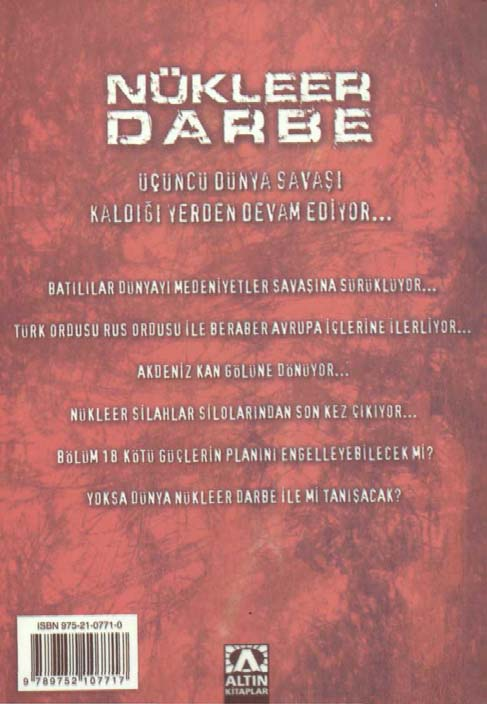

lırdı. Ve bu sahneleri sindirmek gerçekten çok zordu. Onları takip Astsubay haritasını çıkarıp koordinatları belirledi. Kendi bu-eden Türk askerleri zırhlı araçların arkasında ilerliyordu. Bir an lundukları noktayı, olası dost kuvvetlerin bulundukları noktaları Burak Turna
Nükleer Darbe
işaretledikten sonra hedefin üzerim çizdi ve gereken bilgileri Türk
"Hayvanlar! Sanırım kimyasal silah kullanacaklar," dedi Mu-topçu birliğine yolladı. Bir dakika içinde top mermileri tepenin ar-rat.
kasına yağmaya başladı.
Tepenin en üst noktasına çıkıp aşağıya doğru baktılar. Tepe-
"Söyleyin ateşi kessinler..."
nin diğer tarafı top mermileriyle delik deşik olmuştu. Üç noktada-Astsubay ateşin kesilmesini talep etti. Son merminin ardından ki Fransız havancıları yerlerde yatıyordu. Üç havan noktası hazır-cephe tam bir sessizliğe bürünmüştü. Tepenin üzeri patlamalarla lanmıştı ve her an ateş etmeye hazır haldeyken gafil avlanmışlardı.
simsiyah olmuştu. Tepenin arkasından ise yoğun bir duman yükse-
"Murat, dikkat et. Adamlar bize karşı kimyasal başlıklı havan liyordu.
mermileri kullanacaklarmış. Sanırım ellerindeki bazı mühimmat Yüzbaşı Kenan, Murat'ı yanına alarak tepeye doğru yürüme-burda patlamış ama daha çok var patlamayan."
ye başladı. Böyle riskler almayı seviyordu. Tek başına gitmeyi yeğ-
"Kahretsin! Hemen burdan uzaklaşalım komutanım, bu iş çir-lerdi, ama Murat'ın gözlerinde de kendisininkine benzer çılgın bir kefleşmeye başladı."
ifade vardı.
"Bu çok normal oğlum, dünya savaşı yapıyoruz burda, adam-
"Komutanım, o tepenin arkasında ne var sizce?"
lar her şeyi ama her şeyi kullanabilirler..."
"Bilmiyorum Murat. Ama içimden bir ses bu tepenin ele geçi-Bu sırada kimyasal silah aracı yanlarına gelmişti. Araçtakiler rilmesi gerektiğini söylüyor. Böylece uzun bir süre Strasbourglu bu hemen gerekli analiz çalışmalarına başladılar. Bölgede fazla kim-tepenin arkasında konuşlanacak askerlerle vurabiliriz." Uzun bir süre yasal bulguya rastlanmadı. Sadece birkaç mermi patlamış olmalıy-yürüdüler, telsizle sürekli bağlantı halindeydiler. 7. Bölük dı, ama bunlardan onlarcası kullanılmış olsa Türk tümeni büyük öncü kuvvetiydi ve bu nedenle de en tehlikeli işleri yapmak kayıp verebilirdi.
zorundaydı.
Tepeye yaklaştıklarında kesif bir duman kokusuyla karşılaştı-lar. Tepenin arkasından gri ve sarı renkli dumanlar çıkıyordu. Hızla kimyasal silahlara karşı kendilerini koruyacak elbiselerim giyip telsizle karargâhtan kimyasal silah belirleme aracı istediler. Zırhlı aracın hızla ileri atıldığını çok uzaktan görebiliyorlardı.
Tepeye tırmanmaya başladılar. Ellerindeki kimyasal madde cihazında bir şeyler ötmeye başlamıştı. Birbirlerine baktılar. Deh-
şet vardı yüzlerinde. Tepeye doğru yürümeye devam ettiler.
Burak Turna
Nükleer Darbe
olmasına rağmen onları ilk anlarda yenilgiye uğrattı ve karada köprü başlan oluşturdu. Milis kuvvetlerimizle birleştikleri yerlerde ise tamamen denetimi ele geçirdiler. Ancak, biliyorsunuz, Ameri-
Nükleer Hayalet
kan ordusunun esas kuvvetleri doğu tarafında ve bu bölgelere ger-
çekleştirdiğimiz saldırılarda çok fazla başarılı olunamadı. Yani canavarın inindeyiz ama canavar yaşıyor ve bütün silahlan elinde.
Bize ne karşılık vereceklerini bekliyoruz. Eğer nükleer bir saldırı olursa ordaki kuvvetlerimiz tamamen imha olur."
"Bunu yapabileceklerini sanmıyorum, kendi topraklarını kir-
17. BÖLÜM
letmek istemeyeceklerdir. Bu nedenle konvansiyonel kuvvetlerini kullanacaklardır."
"Zaten kullanıyorlar devlet başkanım. Çok şiddetli çatışmalar oluyor. Kayıplar yüksek. Ancak kesin rakamlar yok ortada."
Çin Devlet Başkanı Hu güvenlik komitesini acil olarak topla-
"Peki bize nükleer silahlarla saldırırlarsa..."
dı. Sinirler gergindi. Generallerin ağzını bıçak açmıyordu. Herkes
"O zaman en kötü senaryo gerçekleşir. Biz de onlara nükleer işine o kadar odaklanmıştı ki, toplantının amacını tam olarak anla-saldırı gerçekleştiririz. Kuzey Kore de bu salvoya katılacaktır. Ay-yamamışlar ve hemen işlerinin başına dönmek istiyorlardı. Ameri-rıca Amerika'nın Kuzey Kore'ye ve İran'a da nükleer silah kulla-kan anakarasına inen Çin kuvvetlerinden her saniye onlarca yeni nacağından hiç şüphem yok. Tabi, Avrupa ülkeleri de kendilerine ve önemli bilgi kırıntısı geliyordu; bu konularda mutlaka acil bilgi saldıran Rus ve Türk kuvvetlerine saldıracaklardır."
alışverişine, fikir teatisinde bulunmak gerekiyordu.
"Tam bir zincirleme kıyamet senaryosu..."
"Biliyorum, hepiniz son derece gerginsiniz, başlattığımız bu
"Ama olasılığı hayli yüksek. Bunun gerçekleşmemesi için harekât hakkında hiçbir fikriniz yok. Ama bunu yapmak zorunda Amerika'nın kaybettiğim kabul etmesi gerekiyor."
olduğumuzu da biliyorsunuz. Amerika bizim can damarlarımızı ele
"Bunu yaparlar mı?"
geçirmeye başlayarak bizi buna mecbur bıraktı. Aslında bu yaptığı-
"Bilemiyoruz. Amerika'nın kaybettiğini kabul etmesi ile dün-mız bir bakıma kendimizi savunmadır ve en iyi kendini savunma ya üzerindeki etkinliği tamamen ortadan kalkacaktır. O zaman tek da saldırarak olabilir."
süper güç olarak biz, Çin Halk Cumhuriyeti ortaya çıkacaktır."
"Devlet başkanım, efendim, saldırımız başarıyla gerçekleştiril-Hu Jintao masadan kalktı. Bu çok sık yaptığı bir şey değildi.
di. Amerikan sahillerindeki şehirlere inanılmaz başarılı girişler ya-Bedeni çok yorgun düşmüştü. Aslında içinde duyumsadığı hisleri pıldı. Kahraman Çin komandoları, Amerikan kuvvetleri çok üstün Burak Turna
Nükleer Darbe
nedeniyle, psikolojik bir yorgunluk vardı üzerinde. Yaşadıkları kü-
önceden oluşturduğumuz ikmal merkezleri iş görüyor, ama çabuk çümsenecek şeyler değildi; ülkesine yönlendirilmek istenen bir tükeniyorlar."
göktaşından kurtulmuşlardı, yani öyle olduğunu umuyorlardı.
"General Wu her şeyin yolunda gittiğini düşünüyor demek..."
"Unuttuğunuz bazı şeyler var. Farkında olmadan dünyanın so-
"Aslında başkanım, tam olarak böyle denemez. General Wu nunu getiriyor olabiliriz. Amerikalılar, dünyayı esir almış çılgınlar bu savaşın istediğimiz sonucu getiremeyeceğini, zira yaptığımız iş-gibi davranıyor. Hep öyle davrandılar. Şimdi ise biz onlardan kurgal hareketinin son derece yetersiz kaynaklarla gerçekleştirildiğini tulmaya çalışıyoruz. Adamlar ellerindeki silahı ateşleyebilirler."
düşünüyor. Ancak bir asker olarak elinden geleni yapacağını söy-
"Sayın başkanım... Ancak bu durum sonsuza kadar devam ledi."
edemezdi. Ve bence biz en doğrusunu yaptık. Amerika'nın süper
"Ne, elinden geleni yapmak mı? General Wu bu savaşı kaza-güç olarak imajını ortadan kaldırdık. Şimdi ise var olma mücadele-namazsa, Çin'in ne duruma düşeceğini hesaplıyor mu acaba?"
si veriyorlar. Kendi topraklarında savaşmak zorundalar. Bu daha
"General Wu ile bizzat telefonda konuştum efendim. Sesinde önce olmamıştı ve şimdi bunun şokunu yaşıyorlar."
bir tür psikolojik yorgunluk hissettim."
Hu konseye dönüp baktı. Konsey üyeleri onun bu düşünceli Hu düşünceli gözlerle çevresini süzdü.
hali karşısında huzursuzluğa kapıldı. Belki de böyle büyük bir ope-
"Ne demek istiyorsun? General Wu'yu görevden almamız mı rasyonu yönetebilecek durumda değildi. Ama artık ok yaydan çık-gerekiyor sence?"
mıştı ve geri dönüşü yoktu. Çin ordusu, her şeyiyle hazır olmalıydı.
"Efendim, bu aşamadan sonra böyle bir şey yapmamız müm-
"General Wu ne diyor. Onlar en çok tehlikede olanlar. Bir ankün değil. Çünkü çatışmalar o kadar yoğun ki... anladığımız kada-da nükleer silahlarla yok edilme tehlikesi ile karşı karşıyalar."
rıyla General Wu, orduyu başarıyla idare ediyor ve askerleri de
"Başkanım... General Wu, çatışmaları nerdeyse tam içinden onun için savaşmaktan son derece memnun..."
yönetiyor. Amerikan ordusunun bu saldırıyı beklemediğini rapor
"Peki. Açıkçası ben de şu anda bir general değişikliği olmasını ediyor. Batı Amerika'da çarpışacak düşman bulmakta güçlük çek-istemem. Beyler unutmayalım, bu aldığımız karar... yani Ameri-tiklerini ve genelde dağınık durumdaki milli muhafız güçleri ile sa-ka'nın ortadan kaldırılarak dünyanın rahatlığa kavuşturulması provaştıklarını belirtiyor. Amerikan Hava Kuvvetleri'nin başlarını çok jesi, Çin ulusunun binlerce yıllık bir kültür olarak, ayakta kalma ağrıttığını ve deniz kuvvetlerinin de onlara yolladığımız ikmal ge-savaşının bir yansımasıdır."
milerine çok kayıp verdirdiğini belirtiyor. Bunlar doğru tespitler.
Generallerden birisi ayağa kalktı ve odanın içinde dolaştı. Son Ancak doğal gelişmeler. Biz de sürekli yeni yollar keşfederek kuv-derece sessizdi. Sessizliği sanki odadaki diğer titreşimleri de yutu-vetlerimizi ikmal etmeye çalışıyoruz. Zaten Amerika içinde daha yor gibiydi.
Burak Turna
Nükleer Darbe
"Amerika'nın dünya üzerinde uyguladığı aşırı yayılmacı politisın daha iyi. Ben tek bir gücün altında değil, bütün kültürlerin bir kanın bize bunu yaptırmış olmasına hâlâ inanamıyorum... Bazen arada var olabildiği özgür bir dünyada yaşamak istiyorum..."
tüm bunların bir oyun olabileceğini düşünüyorum. Yaptığımız Hu başını sallıyordu. Lina gelip onun yanına oturdu ve başını operasyon tarihin akışını değiştirebilecek nitelikte. Ama saldırdığı-eğdi. Lina çok zeki bir bilgisayar ve yazılım mühendisiydi. Matemız ülkenin elinde bu dünyayı ortadan kaldıracak kadar etkili si-matik konusunda Çin'de onunla yarışabilecek çok az insan vardı.
lahlar var. Evet bizim de elimizde var, ama bütün dünyayı yok et-Ama kendisi bir o kadar da alçakgönüllü ve kadınsıydı.
tikten sonra savaşmanın ne anlamı var ki?"
"Evet artık biraz da stratejik konulara dönsek fena olmaya-Dışişleri'nden sorumlu danışman elindeki kalemiyle oynarken cak," dedi Hu. Aslında bu, kesin bir emir anlamına geliyordu. Lina söze girdi.
elindeki dosyayı masaya bırakıp onu dinlemeye başladı. Hu mate-
"Şeytanın avukatlığını yapmam gerekseydi, ya dünya bir nük-matiksel mantığın da işin içinde olması gerektiğini düşünürdü. Bu leer savaşın içine düşerse diye sorardım." Ve hemen sustu. Bir an-nedenle zaman zaman kendine fazla güvense de Lina'nın varlığın-da odaya derin bir sessizlik hâkim olmuştu. Dünyanın en büyük dan hoşnuttu. Oysa Mandy Wang olayından sonra bazı generaller ordularından birini yöneten insanlar birbirlerine derin ifadelerle buna karşı çıkmıştı.
baktılar.
Hu elini kaldırdı. "Söyle bakalım Lu Huan bir nükleer savaş
"Eğer dünya bu şekilde var olacaksa, olmamasında bir sakınca patlak verirse ne yapacağız?"
var mı acaba?"
Lu Huan ayağa kalktı. Zıpkın gibiydi. Etrafındakilere güven Herkes kapıda duran kadına baktı. Bu Hu Jintao'nun yeni veren bir havası vardı ve nükleer savaş başlasa bile ona bir şey ol-sekreteri Lina'ydı. Onun kendine has bir kişiliği vardı. Hu Jintao, mazmış izlenimi uyandırıyordu insanlarda. Duvarda asılı duran ha-Mandy Wang ile yaşadığı sorundan sonra, Lina'nın garip kişiliğine ritaların önüne gelince durdu.
"Sayın konsey, bir nükleer savaş durumunda vurabileceğimiz tolerans gösteriyordu, ama vatansever olduğundan hiç şüphe duy-yerlerin ve onların vurabileceği yerlerin harita üzerinde işaretlen-muyordu.
miş halini burda görebilirsiniz."
"Gel buraya sevgili Lina... Söyle bakalım bu yaşlı adamların Duvardaki harita pek iç açıcı değildi. Çin'in tamamı kırmızı görmediği ne var?" Bunları söylerken son derece şefkat doluydu.
alan içerisindeydi ve Amerika'nın bazı belirli yerleri kırmızı içine İlişkilerinin sıcaklığı kimsenin gözünden kaçmamıştı.
alınmıştı.
"Sayın liderlerim! Benim babam Vietnam'da öldü. Bu konu-
"Lu Huan bu haritaya bakarsak hiçbir şey yapmadan bu top-daki duygularımı biliyorsunuz. Düşüncem odur ki, eğer dünya tek lantıyı sona erdirmek en iyisi gibi duruyor." Hu Jintao gülüyordu.
bir gücün egemenliği altında yaşayacaksa, dünya diye bir yer olma-Bu hayra alamet değildi.
Burak Turna
Nükleer Darbe
"Efendim, ben de konunun buraya gelmesini istiyordum aslın-
"Ne diyorsun sen küçük hanım... Konseye saygısızlık mı edi-da. Zira görülüyor ki Amerika'nın bize saldırması durumunda ta-yorsun?" Generallerden birisi kendini tutamamıştı.
mamen yok oluruz ve bizim saldırımız tam bir etki yaratamıyor.
"Sus biraz adam..." Hu sinirlendi. Ve general de sakinleşti.
Üstelik unutmayalım ki, füze savunma sistemleri bazı füzeleri vu-
"Lütfen bunu saygısızlık olarak almayın. Şunu demek istiyo-rabilir ve bu durumda etkimiz daha da az olacaktır. Yani nükleer rum. Eğer nükleer savaşı ilk önce biz başlatır ve doğru yerleri vu-bir savaşın sonunda bizler yok olurken onlar varlıklarını sürdürür-rursak Amerika'daki savaşı kazanırız. Böylece Amerikalılar da ler. Bu nükleer bir savaşta beklenen şey değildir. Eğer biz yok ola-varlıklarına devam ederken nükleer bir savaş, tehlikesi ortadan kal-caksak onlar da ortadan kalkmalı öyle değil mi?"
kar. Yani biz kazanırız ve aslında kazan kazan durumu oluşmuş
"Sayın başkan!" Lina birden ayağa fırladı, heyecanlanmıştı.
olur."
"Sizler oyun teorisini bilmiyor musunuz? Hani şu Amerikalı-Odada bir uğultu oldu. Generaller şaşkınlıkla birbirlerine baların geliştirdiği ve filmlerde de tema olarak kullandığı ekonomi kıyorlardı. Bunu hiç düşünmemişlerdi. Bunu düşünmek için bir teorisi. O teori Nobel Ekonomi Ödülü'nü de aldı. Ve o teoriye göre adım sonraki matematiksel evreye geçmeleri gerekiyordu, ki bunu kazan kazan mümkün yani bir nükleer savaşı her iki taraf da kasağlayan Lina olmuştu.
zanabilir."
"Lina, yani bize Amerika'ya, önleyici bir nükleer saldırı ger-
"Tam olarak neler söylemek istediğini açıklar mısın Lina? Bu çekleştirmemizi mi öneriyorsun?"
matematiksel saçmalıklardan ben pek fazla anlamıyorum."
"Evet efendim aynen bunu öneriyorum. Ve ben de kendi naçi-
"Efendim durum şu ki, eğer kazan kazan mümkünse sadece zane çalışmalarımla bunun nasıl yapılacağı üzerine akıl yürüttüm."
kazanmak da mümkündür ve diğer tarafın kazanması engellenebi-
"Bak sen, demek hedefleri de sen seçiyorsun..."
lir. Yani biz nükleer silahla kazanabilirken onlar kazanamayabilir-
"Efendim ben sadece kilit noktaları söylemek isterim, gerisi ler. Bu kaybettikleri anlamına gelmez. Yani teorik olarak bu böyle size kalmış. Bana kalırsa vurulması gereken yer Kuzey Amerika ve bu savaşı kazanamamaları kaybetmeleri demek."
Uzay Havacılık Savunma Savaşları Operasyon Merkezi..."
"Öööf, çok uzatmadan sadede gel. Ne yapmamız gerekiyor. O
Lu Huan başını sallıyordu. Olumlu anlamda. Bu kızın zeki ol-konuda bir fikrin varsa söyle yoksa zamanımızı alma."
duğu her halinden belliydi.
"Efendim, sadede hemen geliyorum. Çok net bir çözüm öneri-Hu Jintao, Lu Huan'a baktı.
si sunacağım size."
"Evet efendim Lina'nın söylediği yer son derece mantıklı ve
"Nedir hemen söyle."
zaten hedeflerimiz arasında yer alıyor..."
"Bu konseyin yaptığı plan belki de tarihte denenmiş en cüretkâr saldırıydı. Ama bir eksiği vardı..."
Lina söze girdi hemen.
Burak Turna
Nükleer Darbe
"Burda unuttuğumuz bir şey var. Bu merkez Çin ve Rus nük-Lina onlara bir daha baktı, matematiğin gücünü bir kez daha leer saldırı riski en aza indiği için yeni yapılan yerüstü binalarına gördü. Doğru ile matematiksel gerçeklikler farklı şeyler olmalıydı taşındı. Bu nedenle önemli personeli saldırıya açık konumda. Da-belki de.
ha önceden Cheyenne Dağı'nın içinde yer alıyordu. O dağın içinde
"Evet efendim sanırım Lina haklı. Eğer bu saldırıyı başlattıy-yer alan tesislerin iki, üç kilometre yakınına bir termonükleer füze sak, bunun bir somaki adımı da budur. Çok mantıklı..."
atsak bile bir işe yaramazdı. Ama bir an önce saldırabilirsek, o za-Generallerden biri ayağa kalktı.
man onlar önlem almadan bu merkezi ortadan kaldırabiliriz. Ben-
"Durun. Belki de hata yapıyoruz."
ce o tesisi hemen bu hafta sonu vurmalıyız. Gereken hazırlıkları Lina aniden irkildi ve generalle göz göze geldi. General sanki yapalım. Ardından da birkaç önemli noktaya daha nükleer saldırı onun aklından geçenleri okumuştu.
düzenler ve Amerika'yı teslim alırız."
"Lina'nın babası Amerikalılar tarafından öldürüldüğü için kin Hu, komutanlara baktı. Komutanlar da birbirlerine bakıyor-duyuyor olabilir. Ve bu söylediklerinin mantıklı olduğu anlamına lardı. Aralarında konuşmalar oldu. Birden bu düşünce çok man-gelmez."
tıklı gelmişti. Hu Jintao, konseyin kendi arasındaki konuşmalarda Lina içinin burkulduğunu hissetti ve korktu. Şimdi garip bir olumlu bir havanın esmesi nedeniyle memnundu. Bu memnuniye-
şekilde beyninin diğer yarısı düşüncesini savunmasını gerektiğini tini Lina'ya gülen gözlerle bakarak ifade etti. Genç ve zeki kadın, söylüyordu ona.
bu kadar çok yaşlı ve bilge adamın arasında fikrinin kabul edilme-
"Saygıdeğer general! Bu işe duygularımı karıştıracağımı san-sinden dolayı gurur duyuyordu. Lina, Amerikalılar tarafından ölmıyorum. Ben de insanım, tabi ki böyle bir olasılık var. Ama yapıldürülen babasının intikamını alacağına yemin etmişti ve işte şimdi ması gereken neyse onu kabul ederiz. Ve sonrasında duygularımızı yeminini yerine getirmek için eline bir fırsat geçmişti. Her ne ka-kontrol ederiz. Kimse memnun değil, ama içinde bulunduğumuz dar içinden bir ses bunu yapma diyorsa da, yıllardır biriken öfkesi savaş her an Çin'in ve dünyanın yok olmasıyla sonuçlanabilir. O
onu bunu yapmaya zorunlu kılıyordu ve bir yandan da matemati-zaman ne yapıp yapıp bunu engelleyecek şekilde hareket etmeli-
ğin ölümcül denklemleri mantığını ikna ediyordu. Tam olarak ne yiz. İşte bu noktadan bakınca ortaya gidilecek tek bir yol çıkıyor."
olduğunu bilemiyordu, ama duyguları mı matematiğe hükmediyor-General suskunlaşmıştı. Hu Jintao ile bakışları karşılaşınca du yoksa matematikten çıkan sonuçlar mı duygularını ateşliyordu.
yerine oturdu. Karar alınmış gibiydi.
Buna tarih karar verecekti.
Bir hafta sonra Amerika'ya nükleer silahlarla saldırılacaktı.
Hu'nun sesi kederliydi.
"Bunu yapmamız gerekiyor sanırım."
Burak Turna
Nükleer Darbe
Rüya başını çevirdi. Bu yaşlı zombinin enerjisinden hiç hoşlanmıyordu; yüzü gitgide bir insandan çok erimeye yüz tutmuş bir uzaylı yaratığı andırıyordu.
"Lider... Kendini bu isimle çağırmayı seven bir insanla... Bilmiyorum konuşacak fazla bir şeyimiz yok. Rüya burda benim yanımda gayet iyi. Onunla kavga edeceğimi ya da başka bir şey yapacağımı mı bekliyordun. Boşuna bekleme. Birileri bizi burdan kurtarıncaya kadar hiçbir şey olmayacak. Sadece o an geldiğinde se-
nin yüzündeki ifadeyi görmek istiyorum..."
18. BÖLÜM
"Hah haa... Bakın... bana bakın..." Şimdi gözlerinde şeytani bir pırıltı vardı. Bu adam kendisine ya da yaptığı şeye ölesiye güveni-yordu. Gözlerinden kibir ve gurur okunuyordu.
Lider kapının önünde belirdiğinde Hamdi Hoca duasını yeni
"Ne siz, ne de başkası hiçbir şeyi değiştiremez. Buna gücünüz bitirmişti. Rüya ise camdan önünde ağaçların üzerinde yükselen yetmez. Hedefime ulaşacağım. Ve hedefim..."
dağlara ve ovalara bakıyordu. Ne kadar da huzurlu görünüyordu Rüya ve Hamdi Hoca bir an için dikkat kesildiler.
"Biliyorsunuz işte. Nükleer bir savaş çıkarmak ve bu savaşın dünya. Rüya buğulu gözlerini bir noktaya dikmişken Lider'in oda-sonunda; ben ve seçilmiş insanlardan oluşan toplum tekrar yeryü-ya girdiğini fark etmedi. Ama içeride esen karanlık rüzgârı hisse-züne çıktığında, artık temiz bir dünyaya gözlerimizi açacağız."
dince dönüp ona baktı. Lider'in gözleri gri gibiydi. Garip bakıyor-
"Aptal adam.."
du. Sanki bu dünyadan değil karanlık bir dünyadan bakıyordu ona.
"Sen çok oluyorsun Hamdi Hoca... Sen çok oluyorsun! Sen de Bu dünyanın sıradan güzellikleri onun için hiç önemli değilmiş gibi artık kendine geleceksin ve benim emrime gireceksin. Bu şerefi geliyordu.
nasıl reddedersin. Bunu yapıyorum, çünkü buraya kadar gelme be-Hamdi Hoca, Lider'in geldiğini görünce Rüya'nın yanına gitti.
cerisini gösterdin. Eğer kabul etmiyorsan..."
Genç kadının bu garip ve hasta kişilikli insandan korktuğunu bili-
"Kabul etmiyorum aşağılık herif. Allah senin cezanı versin..."
yordu. Rüya'nın yanına gelince elini omzuna koydu. Rüya da onu
"Bana bak Hamdi, seni yok etmemem için hiçbir sebep yok ta-kolundan tuttu.
mam mı?" Bunu söylerken ağzından salyalar fışkırmıştı Hamdi Lider onların bu halini görünce güldü.
Hoca susmuştu. Adanı ilk başlardaki mantıklı görünen çılgınlık ye-
"Bakıyorum da gitgide bahirinizle yakınlaşıyorsunuz..."
rine daha da kötü dengesiz bir manyaklık haline bürünmüştü.
Burak Turna
Nükleer Darbe
"Ne o korktun mu?"
Rüya ve Hamdi Hoca birbirlerine baktılar.
"Hayır ne korkacağım senden. Sadece Rüya'nın üzülmesini is-Adamlar Rüya'yı sürüklemeye devam ederken, hemen kapıda temiyorum."
beliren başka iki adam da Hamdi Hoca'nın kollarından tutup uzun
"Aslında ben de tam bu konuyu konuşmak istiyordum. Rüya süredir İlyas'ın tutulduğu katta başka bir odaya götürdüler.
meselesini. Sanırım onunla bir hayli yakınlaştınız ve artık onu ko-Karanlık, ıslak ve iğrenç kokulu bir yerdi. Az önce kaldığı halı rumak için elinden gelen her şeyi yaparsın. Öyle değil mi?"
döşeli konforlu yerden sonra rahatsız ediciydi. Ortadaki geniş alan
"Umarım bunu sınamaya kalkmazsın."
dört tane hole açılıyordu ve kuşkusuz bu hollerdeki kapıların ar-
"Kalkacağım, hem de nasıl..."
dında birileri vardı. En son kapıdan sızlanmayla inleme arası bir Lider aksak adımlarla Rüya'nın yanına geldi. Narin görünüşlü ses duyuldu. Hamdi Hoca bu sesi tanımıştı. İlyas'tı o.
kız ondan uzaklaşmak istiyordu, ama Lider, onu kolundan tutup
"İlyas!"
yere doğru fırlattı. Bir anda sinirlerine hâkim olamayan Hamdi Hamdi Hoca'nın bağırmasıyla beraber sesler biraz daha art-Hoca Lider'in üzerine atladı. Ona sert bir şekilde vurunca Lider maya başladı. Adamlar Hamdi Hoca'yı açık bir kapıdan içeri so-garip sesler çıkararak yerde yuvarlanmaya başladı.
karken güldüler...
O sırada kapıda korkunç görünüşlü iki adam belirdi. Kapı ge-
"Onu merak etmesen iyi olur. Birazdan onun yaşadıklarını sen nişliğinde ve silahlı adamlardı. Hamdi Hoca'ya yaklaştılar. Birisi de yaşayacaksın. Onun acısını uzun bir zamana yaymıştık, ama sa-bir karate darbesiyle hocayı yere "yuvarladı. Rüya'yı saçlarından tuna her şey acımasızca uygulanacak. İlyas bizlere katılmayı reddetti tup sürüklemeye başladılar. Onun güzel kızıl saçları ellerinde kala-ve şu anda beyinsel tüm faaliyetlerini en alt seviyede sürdürebile-cak gibiydi. Hamdi Hoca ayağa kalkarak arkalarından koşup atla-cek durumda."
dı. Diğer adam bir döner tekme ile Hamdi Hoca'yı tekrar yere sa-
"Sizden korkmuyorum. Bana ne yaptığınız umurumda bile de-vurdu.
ğil."
Lider de bu sırada ayağa kalkmıştı. Burnundan kan geliyordu.
"O kız... Onu da kullanırız gerekirse. Senin gözlerinin önünde
"Sen benim için bir yüz karasısın. Gebereceksin seni yaşlı bu-başına kötü şeyler geldiğini görmek istemezsin değil mi? Dediğim nak!"
gibi birazdan buraya gelecek olan adamla anlaşmaya bak. En kötü-
"Göreceğiz bakalım. Köpek seni..." Daha başka şeyler de söysüdür. Sana o kadar çok kuru acı çektirebilir ki, sen bile bu kadar lerdi, ama terbiyesi müsait değildi.
acı potansiyelinin nasıl olduğuna şaşarsın."
"Alın bunu da işkence odasına götürün. Orda gereken sorgu-
"Bu yaptıklarınızın cezasını çekeceksiniz hiç merak etmeyin..."
lama tekniklerini uygulayın. Bakalım ne kadar dayanabilecek bi-
"Sus ve karanlıkta bekle.. Birazdan sana işkence yapacak kişi zim sorgulama tekniklerimize...."
gelecek.."
Burak Turna
Nükleer Darbe
Kapı Hamdi Hoca'nın yüzüne kapandı. Karanlık ve nemli bir Güvenlik görevlisi ellerini havaya kaldırıp İlyas'm kapısına ortamdı. Hamdi Hoca ne yapacağını düşündü. Bir ara köyün itfa-gitti ve kapıyı açtı. İlyas'ı da sürükleyerek dışarı çıkardı. Hamdi iyesi olarak görevlendirilmişti. Yangınlara koşardı. Aslında görül-Hoca İlyas'ın durumunu görünce tüyleri diken diken oldu. Genç düğünden çok daha çevik ve kuvvetliydi. Az önce Lider bunu anla-adam bir hayalete dönüşmüştü. Hiçbir şeye tepki verebilecek dumış olmalıydı.
rumda değil gibiydi. Görevli onu yere bırakıp ellerini tekrar kaldı-Bir şeyler yapmalıyım, diye düşündü. Mutlaka buradan kaç-rarak işkencecinin yanına geçti.
mak için bir yol bulmalıyım. Koridorda ayak sesleri duymaya baş-
"Bak yaşlı adam, hiçbir yere gidemezsin. Hatta beş dakika ladığı anda beyni daha da hızlı çalışmaya başladı. Kapı açılınca içinde buraya bir sürü silahlı adam gelir ve sen hiçbir şey yapamaz-kendisini yere attı. Kıvranmaya başladı. Acıyla kıvranıyordu.
sın.
Kapının önünde beliren adamın koyu bir teni ve hafifçe belli
"Öyle mi, en azından deneriz... Şimdi yürüyün şu hücrenin içi-olan yaralı bir yüzü vardı. Teni çok bozuk ve sert görünüyordu.
ne doğru bakayım."
Adamın elleri de yaptığı işi ele verecek kanıtlarla doluydu...
İki adam da onun dediklerini yaptı. Hamdi Hoca bir süre hüc-Hamdi Hoca'nın yanına geldi. Onun kalp krizi geçirdiğini dü-renin kapısında durdu. Ne olacağı belli değildi. Belki de gerçekten şündü. Hemen kapının dışındaki görevliye bağırdı. Adam telaşla birazdan ölecekti. Görevliden anahtarları aldı. Elindeki silahı yüzüne anlamsızca bakan işkenceciye doğrulttu ve ateşledi. Tok bir içeriye girdi.
ses çıktı. Yüzü dağılan işkenceci yere düştü. Güvenlik görevlisi,
"Bu adamın ölmesine izin vermemeliyiz, yoksa Lider bizi hocanın kendini kaybettiğini düşünüp üzerine atladı, ama kalbine mahveder..." dedi işkenceci.
giren mermiye engel olamadı. Ellerini önünde kenetleyip Firavun
"Haklısın!"
pozisyonunda yere yıkıldı. Hamdi Hoca, onun bu duruşuna bakıp Hamdi Hoca'yı hızla havaya kaldırdı adam ve hücrenin dışına gülümsedi. Her yerde aynı mı olmak zorundasınız, diye düşündü.
sürükleyerek çıkardı. Tam bu sırada Hamdi Hoca, adamın belin-Koridorun ortasında yatan İlyas'ın yanına koştu. Gözlerine deki silahı kavrayıp çekti. Hızlı hareketlerle kendini holün ilerisine baktı. Gözleri açıktı, ama içinde canı yokmuş gibi duruyordu. Ne atıp silahı onlara doğrulttu.
hale gelmiş böyle, diye düşündü Hamdi Hoca. Rüya... Rüya'yı bul-
İki adam şaşkınlıktan ne yapacaklarını bilemeden bir süre bir-malıydı. Bu yaptığını öğrendiklerinde ilk olarak Rüya tehlikeye gi-birlerine baktı.
recekti. İlyas'a bir kez daha baktı ve onun kollarının altından tuta-
"Sizi beyinsiz ahmaklar sizi. Açın ulan şu kapıyı hemen. İlyas'ı rak merdivenlerden yukarıya taşıdı. Evin dev antre bölgesine çıkı-dışarı çıkarın, yoksa beyninizi uçururum," diye bağırdı Hamdi ho-yordu merdivenler ve etrafta kimsecikler yoktu. Sessizlik vardı ca.
evin içinde. Lider uyuyor olmalıydı. Böyle bir durumda nasıl olur Burak Turna
Nükleer Darbe
da uyuyabilirdi ki? İlyas'ı antrede bir dolabın yanına sürükledi ve ra ormanda oldukları izlenimi verdi. Ama bu fazla sürmedi. Bir silahını dikkatle kavrayarak üst kata çıktı. Rüya'yı koyabilecekleri duvarın kenarına geldiler. Duvar, üzerinden atlayabilecekleri ka-tek oda vardı orada. Geçen zaman içerisinde evi tanımışlardı. He-dar alçaktı. Sanki bir mucizeyi yaşıyorlardı, umut bütün damarlarına men odanın kapısına gitti ve tıklattı. Rüya diye seslendi. Rüya'nın hücum etmişti. Duvarın diğer tarafına İlyas'ı geçirmeleri çok zor kapıya yaklaşıp kulağını kapıya dayadığını hissedebiliyordu.
olmuştu, ama başarmışlardı. O an için başaramayacakları hiçbir
"Hamdi Hoca!" Kısık sesinde heyecan ve kaygı vardı.
şey yok gibi görünüyordu. Hamdi Hoca uzaklara doğru baktı. Bir
"Rüya, seni kurtaracağım. Bir saniye bekle."
kaç kilometre ileride bir kasabanın ışıkları görülüyordu. O kasabada Hamdi Hoca anahtarları hızla denedi ve kapı açıldı. Rüya he-kendilerine yardım edecek birilerini bulabilirlerdi.
men boynuna atladı. Onu gördüğüne sevindiği her halinden belliy-Rüya'nın yüzü gülmeye başlamıştı. Hamdi Hoca, ona baktıkça di.
gençliğini hatırlıyordu. Hadi canım o kadar da yaşlı sayılmazdı as-
"İlyas'ı da alıp hemen burdan gitmeliyiz..."
lında...
"Hamdi Abi, nasıl oldu bu ama..." Gözleri Hamdi Hoca'nın Kasabaya doğru hareket ettiler. Saklanarak ilerliyorlardı.
elindeki silahtaydı.
Yoldan ayrılmak istemiyorlardı. Belki polis ya da onun gibi bir şey
"Neyse boş ver şimdi. Eğer konuşacak kadar yaşayabilirsek görebilirlerdi. Bunun işe yarayıp yaramayacağı konusunda şüphe-liydiler.
anlatırım sana."
Sessizce aşağıya indiler. Garipti, ortada hâlâ kimseler yoktu.
Kim bilir belki de herkesin kapalı kapılar ardında olduğu düşünce-siyle rahatlayıp güvenliği boş vermişler ya da bir yere gitmişlerdi.
Rüya, İlyas'ı görünce sarsıldı ama hemen toparlandı. İlyas'ın kollarına girdiler. Onu sürükleyerek dışarı çıkardılar. Gece karanlığı çökmek üzereydi. Uzun yolun kenarında ağaçlar diziliydi ve bu yoldan dışarı çıkabilecekleri konusunda emin değildiler. Çıksalar bile nereye kadar gidebilirlerdi ki? Denemeden bunu bilemeye-ceklerdi.
Rüya bu kadar uzun süre sonra özgür kalmış olmanın verdiği güçle İlyas'ı taşıyabiliyordu. Hamdi Hoca'nın da kendisine olan güveni gelmiş ve fiziksel olarak gençleşmiş gibiydi. Ağaçların arasına girip yürümeye devam ettiler. Bir süre sonra sık ağaçlıklar onla-
Burak Turna
Nükleer Darbe
Kendi kavgaları değilmiş gibi gelen bu savaş artık kişisel mücadele alanları olmuş gibiydi. Artık sadece Türk vatanı için değil dünya için savaşan birer savaşçıydılar.
Neye karşı savaşacaklarını bilmiyorlardı. İçlerindeki inançtan başka tutunabilecekleri hiçbir şey yoktu. Bir savaşçı inançtan başka neye tutunabilirdi ki zaten.
"Oğuz, planımız nedir? Şu an dünya savaşının en sıcak cephe-sinin ortasındayız. Ne yapacağımıza karar vermeliyiz?"
19. BÖLÜM
"Bunu ancak Wu ile konuştuğumuz zaman öğrenebileceğiz.
Zaman çok dar, Wu, bana büyük bir şeyden söz etti. Eğer bu görevi başaramazsak dünyanın başına geleceklerden emin değil. Bu savaş
"Kara göründü!" Oğuz sevinçle zıplamıştı. Ne zaman karayı mutlaka durdurulmalı."
görse sevinirdi. Bu tıpkı askerden dönmek gibiydi. Hayatın zorlu-
"Bunu Bölüm 18'den başka yapabilecek kimse yok muymuş
ğu ya da sıkıcılığı önemli değildi; nasıl ki askerden dönmek insanı yaa." Attila sızlanmaya başlamıştı yine. Bu karnının acıktığını gös-sevindirirse, bu da öyle bir şeydi. Oğuz askerden hiç dönememişti teriyordu.
ve hiç dönemeyecekti. Şimdi gördüğü bu kara parçasından da dö-
"Attila, sen çok konuşma canım. Bak görüyorsun işimiz başı-nebileceği konusunda şüpheleri vardı.
mızdan aşkın. Yere yıkman gereken birileri çıktığı zaman ben, sa-Burası küçük bir sahildi. Tekne kıyıya yaklaşınca hemen kara-na haber veririm tamam mı canım." Tuğrul, Attila'nın sırtına vur-ya atladılar. Artık tekneyle işleri kalmamıştı. Onu kıyıda bırakıp du.
karanın içlerine doğru yürümeye başladılar. Karabey aniden dö-
"Tamam ulan ben karışmıyorum. Ne işim var burda yaa, bana nüp teknenin içine, yanan bir kağıt bıraktı ve tekrar yanlarına koştu. Biraz soma arkalarına baktıklarında tekne alevler içerisindey-hedef gösterin, birileri saldırsın bana, kılıçla falan savaşmak istiyo-di. Oğuz, Karabey'e baktı.
rum."
"Psikopatlık yapma lan!"
"Bu tam manyak," dedi Oğuz. Hepsi biraz gevşemeye çalışı-Gülüştüler. O tekneyi yakmanın ne anlama geldiğini hepsi bi-yordu. Zaman zaman Oğuz'un gözleri doluyordu. Böyle bir şey da-liyordu. Sert esen rüzgâr Pasifik Okyanusu'nun tuzlu kokusunu ha önce hiç olmamıştı ve neden olduğunu hiç anlayamıyordu. İn-burunlarına taşırken içlerindeki burukluğu atmaya çalışıyorlardı.
şallah hayırlı bir nedeni vardır, diye düşündü. Ama bunu düşünür-
Burak Turna
Nükleer Darbe
ken bile bilinçaltının derinliklerinde bazı gerçekleri sezinliyordu.
Silah sesleriyle birlikte görevin aktif olarak başladığından Bu düşünceleri görev sona erene kadar asla belli etmeyecekti.
emin oldular. Kalp atışları hızlanırken hepsi silahlarına davrandı. M-
"Wu'ya ulaşmak için ne yapacağız?" diye sordu Karabey.
16'lar doluydu. Attila bir seferde FN makineli silahını üzerine
"Bilmiyorum, aslında yapılacak şey belli. Önümüze çıkan ilk geçiriverdi. Bütün bu olup bitenler saniyeler içinde gerçekleşiyor-
çekik gözlü askerlere buraya ne için geldiğimizi söyleyeceğiz ve du. Kamyonet onları silahlı görünce yavaşladı. Bu beklemedikleri onlar da bizi doğrudan Wu'ya götürecekler."
bir şeydi. Kamyonetteki kişi onları Amerikalı sanmıştı. Kamyonet
"Oğuz inşallah bu fikir doğrudur. Düşünsene kendi hayatı için yanlarına yaklaştığında daha da şaşırdılar. Bu genç bir kadındı.
ölümüne savaşan insanlarla karşılaşıp onlara el sallayarak bizi Korkudan bembeyaz kesilmişti. Oğuz hemen kadının yanına gide-Wu'ya götürmelerini söyleyemeyiz değil mi?"
rek onu kolundan çekip arabadan çıkardı. Kadının sesi çıkmıyor-
"Karabey aslında haklısın. Bu o kadar da kolay olacak bir şey du. Kulaklarının yanından bir mermi geçti. Kadının peşinde bir değil ama yapacak başka bir şey de yok."
kamyonete doluşmuş Çinli milisler vardı. Çinliler de Bölüm 18'i
"Doğru, haklısın. Hemen bir araç ele geçirip içerilere doğru Amerikalı zannetmişti. Oğuz bir saniye içerisinde ne yapması ge-gidelim. Çinliler çok uzakta olamaz. O kadar uzaktan gelip Ameri-rektiğine karar verdi. Silahını doğrultup Çinlilerin olduğu kamyo-ka'yı işgal etmek gerçekten çılgınlık. Zaten bunu ancak Çinliler ya-nete ateş etti. Attila da onu takip ederek gayet soğukkanlı bir şe-pabilirlerdi."
kilde yaklaşık yüz mermi sıktı. Delik deşik olan kamyonet yoldan
"Hadi lan biz de yaptık onu zamanında. Belki de bizden gör-
çıkarak taklalar atmaya başladı. En sonunda durduğunda içeriden müşlerdir."
hiç ses gelmiyordu. Ama yakınlarda başkalarının da olduğundan hiç şüpheleri yoktu.
"Tabi canım ne demezsin, Bölüm 18 olmasaydı zaten dünya Oğuz, kadını sarsarak kendisine getirmeye çalıştı. Bu çok zor-barış dolu bir yer olacaktı öyle değil mi?"
du. Çok kötü şeyler yaşadığından emindi. Söylediklerinden çıkarı-
"Hey şuraya bakın..."
labildiği kadarıyla tüm ailesi yok edilmişti. Yapılabilecek fazla bir Anayolun kenarına çıkmışlardı. Etrafta kimsecikler yok gibiydi. Ama yolun ilerisinde kendilerine doğru son hız gelen bir kam-
şey yoktu. O kamyonete ihtiyaçları vardı. Kadını yol kenarında bı-yonet gördüler. İyi bir şeye benziyordu. Ama bu bölge Amerikalı-rakıp Çinlilerin geldiği yoldan gitmeye başladılar. Kadına en azın-lar için çok tehlikeli olmalıydı. Şu anda yakınlardaki her Amerikalı dan bir şans vermişlerdi. Yol kenarında duran yanmış araçlar ve teknik olarak düşman hatlarının gerisinde demekti."
parçalanmış bedenleri görünce aslında ona ne kadar büyük bir şans vermiş olduklarını anladılar.
Kamyonet onlara iyice yaklaştığında neden hızlı gittiğini anla-Manzara korkunçtu. Çin ordusu burada bir köprü başı oluştu-dılar. Çünkü onu başka bir kamyonet takip ediyordu ve bu takibin rabilmek için hayli acımasız davranmıştı.
amacının çok iyi niyetli olmadığı açıktı.
Burak Turna
Nükleer Darbe
Küçük bir kasabaydı burası. Amerikan filmlerinden herkesin açıldı. Silahlarını hazırladılar ve nişan alarak içeriye girdiler. Bu en iyi aşina olduğu türden; sessiz görüntüsünün altında pek çok suçu, çıl-yaptıkları işti.
gınlığı ve sorunu barındıran, bunu zaman zaman seri katil haberleri Oğuz antreden salona geçti. Gün ışığı sızıyordu içeriye. Sıcak ile dışarı sızdıran bir kasaba. Ama şimdi her şey değişmişti. Ka-yemek kokusu alıyorlardı. Garip bir kokuydu. Geyik etiydi belki sabanın evleri alevler içerisindeydi. Gerçek bir askeri saldırının or-de. İlk olarak kokuyu Attila almıştı. Yavaşça mutfağa doğru ilerle-tasında kalınca neye uğradığını şaşırmış olmalıydılar. Sinema kare-diler.
sine benzeyen hayatları bir anda altüst olmuştu. Kim bilir nereye
"Hoş geldiniz..."
dağılmışlardı. Belki de bir esir kampı vardı. Ama bu olasılık im-Hepsi bu ses üzerine irkilip siper aldılar.
kânsızca yakındı. Böylesine hızla yürütülen yarı gerilla tipi bir as-
"Merak etmeyin silahım yok ve buraya gelecek kimseye de keri saldırı ana hedefine ulaşana kadar hiçbir ağırlığı taşıyamazdı.
ateş etmeyi düşünmüyorum. Eğer beni öldüreceksiniz, bunu he-Kuşkusuz kaçamayanların kurtulma şansı olamazdı.
men yapın. Çok da umurumda değil."
Oğuz kasabanın hemen kenarında konuşlandığı tepeyi gösterdi.
"Amerikalı mısın?"
"İşte şu tepenin üzerine çıkarsak belki ne tarafa gitmemiz ge-
"Evet. İspanyol asıllıyım, ama Amerikalıyım. Bilmiyor musu-rektiği konusunda daha tutarlı bilgilere sahip olabiliriz. Burada, nuz, bu toprağa ayak basan herkes Amerikalı olabiliyor. Siz de öy-tehlike altında olduğumuzdan, çok hızlı hareket etmeliyiz. Her an le sayılırsınız."
bir roketle vurulabiliriz."
"Burda ne yapıyorsun?" Oğuz silahını yorgun görünen İspan-
"Evet... Haklısın Oğuz. Şuraya bakın... Gökyüzünde daireler yol adama doğrulttu. Garip davranıyordu.
çizerek uçan bir cisim var."
"Siz ne yapıyorsunuz? Bu savaştan kaçacak bir delik aramıyor
"Evet, bu bir Amerikan casus uçağı. Demek ki karşı tarafta musunuz? İşte ben de o nedenle burdayım. Adım Carlos. Bir sahâlâ bir hareketlilik var ve kendisini savunmak için bazı önlemler bah kalktığımda her tarafın pis Çinliler tarafından ele geçirildiğini almış. Ancak yapılan saldırı o kadar ani ve o kadar öldürücü olmuş
gördüm. Ve kaçtım. Hayatımda ilk kez kaçıyorum. Şehrimden çok ki, hiç beklemedikleri de ortada."
uzaklara geldim. Burasının neresi olduğunu tam olarak bilmiyo-Tepenin en ucuna geldiklerinde onları iki katlı lüks bir ev kar-rum bile. Ama yapacak başka bir şeyim yoktu. Birçok şey yaşadım.
şıladı. Eve hiçbir şey olmamıştı. Bu çok garipti. Sanki buraya kim-Ben Carlos, eski çete reisi, yeni ruhani insan."
se uğramamıştı.
"Çok garip davranıyorsun... Bir şey mi oldu?"
Arabadan inip evin kapısına gittiler. Hiçbir iz yoktu. Sanki
"Daha ne olsun. Hayatım değişti ve ben bu değişimle nasıl baher şeyin dışında kalmıştı burası. Oğuz evin kapısını itince yavaşça şa çıkabileceğimi bilmiyorum."
Burak Turna
Nükleer Darbe
Karşılarında savaş travması geçiren bir adam vardı. Büyük ih-manlar yükseliyordu. Ve evet onları görebiliyordu. Küçük gruplar timalle pek çok çatışma görmüş ve sıyrılıp kaçmayı başarmıştı.
halindeki Çin askerleri ve milisler bölgede kontrolü sağlamışlardı.
"Bak Carlos... Biz Çinlileri arıyoruz."
"Gitmeliyiz.."
"Çinlileri mi? Aramanıza gerek yok ki... her yerdeler, bütün
"Daha yeni yemek yemeye başlamıştık. Ayıp ettiniz ama..."
batı kıyısı boyunca asker çıkartmış durumdalar. Buraya önceden
"Nereye gidiyoruz Oğuz?"
gönderdikleri milisler de her yerde. İnanılmazdı. Bunu nasıl başar-
"Çin askerleri tepenin diğer tarafında."
dılar hâlâ anlamıyorum. Yıllarca gizli birlikleri buraya sivil olarak
"Yanlarına nasıl gideceğiz. Savaşın en sıcak anları. Bizi düş-göndermişler. Ve o milisler bir sabah kalkıp düzenli ordu haline man zannedip riske girmeden havaya uçurabilirler."
geliyorlar... Her yeri, polis karakollarım milli muhafız birliklerini
"İçimizden biri beyaz bayrakla yanlarına gidip onlarla konuşa-bilir."
basıp yok ediyorlar."
"Hayır olmaz, hiçbirinizi tehlikeye atamam..."
Karabey başını şaşkınlıkla sallıyordu.
Hepsi bir anda kafalarını Carlos'a çevirdiler. Adam bir şeyler
"Bu Çinliler de amma yamanmış be. Ulan vallahi biz bu olduğunu anlamıştı. Durumu açıkladılar.
adamlara zamanında iyi çektirmişiz. Şimdi ordan aldıkları dene-
"Hayır, olmaz. Bu adamlarla yüz yüze gelmemek için elimden yimle bak burda neler yapıyorlar."
geleni yaptım. Şimdi bana kendi ayaklarımla onların yanma gitme-
"Carlos... Bize tam olarak yerlerini göstermelisin." Oğuz sinir-mi mi söylüyorsunuz? Kesinlikle olmaz. Ya beni öldürürlerse..."
lenmeye başlıyordu. Şu anda kimsenin ruhsal bunalımıyla uğraşa-
"Bak Carlos, eğer onlar seni öldürmezse yaşarsın, ama gir-cak durumda değildi.
mezsen seni ben öldürürüm."
"Üst kata çıkın. Ordaki küçük pencerelerden bakın. Tepenin Carlos, Oğuz'un gözlerinin içine baktı. O bakışların derinli-diğer tarafı görünecektir."
ğindeki ateş parıltılarından korktu. Kaderine razı olması gerektiğini Oğuz ve Tuğrul koşarak üst kata çıktılar. Karabey, Carlos'un biliyordu. Ve öyle de yaptı. Beraber kamyonete atlayıp tepeye üzerine gözlerini dikmişken Attila da buzdolabını karıştırmakla gittiler. Carlos'a beyaz bir bayrak alarak yürümesini söylediler. O
meşguldü. Tabi Karabey de vergisini almayı ihmal etmiyordu. Ye-da çekingen adımlarla yürümeye başladı. Bu sırada nöbetçilerden mek bulununca yenmeliydi, bir daha asla yemek yeme şansı bula-biri onu görerek komutanına haber verdi. Birliğin komutanı olan mayabilirlerdi.
yüzbaşı ve yanındaki subaylar elinde beyaz bayrakla gelen adama Oğuz pencereden dışarı bakınca şaşırdı. Tepenin diğer tarafı baktılar. Tehlikeli' görünmüyordu. Carlos yanlarına gelerek duru-geniş düzlüklerden oluşmaktaydı. Ve düzlüğün her yanından dumu açıkladı. Carlos geri geldiğinde Çinlilerin silahlarını bırakma-
Burak Turna
Nükleer Darbe
lan karşılığında gelmelerine izin verdiklerini söyledi. Ve sonra General Wu harekât çadırının içinde sürekli gelip giden su-Carlos yanma diğerlerini de alarak geri döndü.
baylarla iletişim halindeydi. Harekât çadırının yeri sürekli olarak
"Bu işten sıkılmaya başlıyorum. Git gel git gel... Bu ne yaa?"
değiştiriliyordu. Amerikalılar bütün güçleriyle subay kadrosunun
"Yaşadığın için sevinmelisin. Sarı saçlı ve beyaz tenli olsaydın yerini belirlemeye çalışıyordu. Bunun için casus uydular ve uçaklar seni gördükleri anda indirirlerdi bence..."
kullanıyorlar, ama Wu'yu yakalayamıyorlardı.
Oğuz birliğin komutanı olan yüzbaşıyla karşı karşıya geldiğin-Bazı alt düzey subaylar, Amerikalılar tarafından öldürülmüş-de gerçek bir asker gibi selam verdi. Yüzbaşı biraz şaşırmıştı.
tü, ama Amerikan ordusunun batı kıyılarındaki yapılanması sivil
"Siz bir askere benziyorsunuz.."
uçak darbeleri ve milis saldırılarıyla öylesine yara almıştı ki, doğu
"Bizi buraya General Wu çağırdı. Onunla acilen görüşmemiz kıyılarında bulunan stratejik askeri güç, batı tarafını geri almak gerek."
için uğraşıyordu. Teknik olarak batı Amerika'da askeri üstünlük
"Bu çok ilginç. Şimdi sizin özel bir suikast birliği olduğunuzu Çin tarafındaydı. Ama Amerikan saldırıları sürekli kayıp verdiri-düşünmem için birçok nedenim var."
yordu. Çin'den gelen ve asker taşıyan gemilerin yarısı denizaltılar
"O zaman onu arayın ve bizden bahsedin."
tarafından vurulmuştu. Bu nedenle hâlâ kıyı başlarının kesin bir Yüzbaşı telsizin başına giderek bir süre konuştu. Konuşma biçimde tutulduğu söylenemezdi. Amerikan Deniz Piyade Kuvvet-bittiğinde yanlarına gelerek, "General Wu, sizi çağırdığını bildiri-leri küçük gruplar halinde sürekli Çin kontrolündeki bölgelere sıyor. Şimdi size bir araç ve iki asker vereceğim. Beraber oraya gide-zıyorlardı ve zaman zaman kurdukları pusularla Çin Komando ceksiniz. Burdan otuz kilometre kadar, kuzeydoğu yönünde hare-Birlikleri'ni yok ediyorlardı. Bu acımasız bir savaştı.
ket edeceksiniz," dedi.
Wu'nun yeni kurulmuş olan harekât çadırındaki iletişim su-
"Ya ben ne olacağım?" diyerek Carlos söze girdi.
bayları Çin'den yeni bir mesajın geldiğini söylediler. Bu alışıldık
"Sen?... Sen onlardan değil misin?"
durum Wu'yu heyecanlandırmıştı. Bir şeyler sezinlemişti.
"Ee hayır değilim. Kasabada karşılaştık ve onlar da beni bu
"Şifresi çözüldü mü?"
tehlikeli iş için kullandılar."
"Evet efendim.." Subay şifresi çözülmüş olan metni önüne ge-
"Sen de iki kilometre kuzeydeki esir kampına gideceksin. Or-tirip koydu. Her birlikte yer alan şifre kutusu sayesinde gelen me-da senin gibi bir sürü insan var. Canın sıkılmaz." Yüzbaşı gülerken sajlar Amerikan kontrolüne girmeden çözülebiliyordu, ama bu askerler Carlos'un koluna girmişlerdi bile. O çırpınırken Oğuz da tehlikeli bir yoldu. Çünkü Amerikalılar bu şifre kutularından birini ne yapalım der gibi omuzlarını kaldırdı. Oğuz ve arkadaşları araç-ele geçirdikleri arıda iletişimi kontrol edebilirlerdi. Henüz bunun lara doğru ilerlerken Carlos arkalarından küfür ediyordu.
farkına varamamışlardı. Ayrıca birliklere pusu veya saldırı anında Burak Turna
Nükleer Darbe
şifre kutusunu yok etme emri verilmişti. Saldırı altındaki birlikle-
"Oğuz daha önce yaptıklarını biliyoruz. Eğer o göktaşının dur-rin şifreli emir alması mantıklı değildi zaten.
durulmasında bana yardım edebildiysen, bunu da yapabilirsin. Da-Wu metni okudukça yüzüne karanlık bir bulut çöküyordu san-ha öncekini Çin için istemiştim ama bu sefer dünya için istiyorum."
ki. İster istemez subaylar da onun bu halinden etkilenmişler ve
"Dünya için mi? Ne olacak söyle bana."
sessizce yüzüne bakmaya başlamışlardı. Wu metni okudu, bir sigara
"Siz gelmeden hemen önce bir mesaj aldım. Çin'den geliyor...
yaktı ve oturdu. Oturmaktan çok çökmüştü. Düşünceleri bir tek Tam beklediğim şey olacak. Doğrusu ben bu olacakları önceden yere yoğunlaşmışken, çadıra giren asker Türk komandolarının gel-görüp seni çağırmıştım. Şimdi de buraya gelmeni haklı kılacak bir diğini haber verdi. Bir an Wu'nun yüzündeki endişe dağılır gibi ol-nedenim var."
muştu.
"Neymiş o?"
Oğuz ve arkadaşları çadırdan içeri girince Wu gülümseyerek
"Nükleer Savaş..."
kollarını açtı ve Oğuz'a sarıldı. Bu hareketi kendisinden sonra en Herkesin başı bir anda Wu'ya döndü. Bu adam neler söylü-kıdemli askerin Oğuz olduğunu gösteriyordu. Çinli subaylar bu yordu böyle?
durumu hemen hareketlerine yansıttılar.
"Ne demek istiyorsun? Bir nükleer savaş mı başlamak üzere?
"Wu, bu hayatımda aldığım en garip davetti. Beni dünya sava-Beni buraya nasıl getirtirsin. Arkadaşlarımı da çağırdım. Ve şimdi şının ortasına davet ettiğin için teşekkür ederim."
bir nükleer savaşta hepimizin öleceğini mi söylüyorsun?"
"Oğuz... İnan sana ihtiyacım olduğunu düşündüm."
"Oğuz... Eğer planımı uygulamazsak, bir nükleer savaş çıka-
"Yüz bin askerle dünyanın süper gücünü işgal ediyorsun ve cak. Ve biliyorsun sonra nelerin olacağını. Bu nükleer savaş bütün sonra benden yardım mı bekliyorsun?"
insanlığı ortadan kaldırabilir. Zaten siz Avrupa'daki savaşın için-
"Düşündüğün gibi değil. Bu iş dünyevi bir savaş olmaktan çık-desiniz ve onlar da hazır bekliyorlar."
tı. Garip ruhsal bir kötülük dalgası haline geldi. Burda bana sade-
"Kahretsin, bu durumdan kurtulmanın bir yolu var mı peki?"
ce sen yardım edebilirsin."
"Bir hafta içinde Kuzey Amerika Uzay Havacılık Savaşları
"Ne yapmamı istiyorsun?"
Operasyon Merkezi Cheyenne Dağları vurulacak. Ve sadece orası Bu sırada diğerleri de yerlere oturmuş, bu garip tartışmayı izdeğil. Batı kıyılarına yakın bölgelerde konuşlanmış olan bazı bü-liyorlardı.
yük askeri kolordu merkezleri de... Bu yapılırsa Amerika'nın tıpkı
"Sizden istediğim bu savaşı sona erdirecek vuruşu yapmanız..."
Japonya gibi pes edeceğini düşünüyorlar."
"Bu nasıl olacak söyler inisin?"
"Allah'ım bu ne büyük bir felaket..."
Burak Turna
Nükleer Darbe
"Ama o merkezi sen ele geçirirsen, Amerikalılar devam etme-
"Ben de Pekin'in nükleer saldırıyı başlatmasını engellemeye yebilir. O merkezi ele geçirip yok etmelisin. Böylece nükleer silah çalışacağım..."
kullanma şansımızı ortadan kaldırmış olursun. Amerika'nın bütün
"Peki anlıyorum. Eğer yardıma ihtiyacımız olursa..."
faaliyetleri ordan yönetiliyor ve şu anda da yer üstünde çalışıyor-
"Bir komando birliğini helikopterleriyle beraber hazır tutaca-lar. Yani içeri girip orayı ele geçirmeniz için her durum uygun."
ğım. Hepsi de ölmek üzere istediğin yere istediğin biçimde saldırı-
"Tabi orayı koruyan binlerce asker dışında..."
ya hazır olarak bekleyecekler. Gerekirse onları yem olarak bile
"Bu da senin işin Oğuz. Eminim oraya girmenin bir yolunu kullanabilirsin. Asla çekinme... Dünyanın kurtuluşu senin ellerin-bulursun..."
de..."
"Peki ya başaramazsak?..."
Oğuz başını öne eğdi. Beyni çok hızlı çalışmaya başlamıştı yi-
"O zaman dünya bir nükleer savaşa sürüklenecek. Ve sanırım ne. Bölüm 18 ile göz göze geldi. Hepsi de sabırsız gibiydi. Her ne bazıları bu savaşı istiyor. Bu savaş sayesinde dünyanın nüfusu sıfır-yapılacaksa hiç düşünmeden yapılmalıydı. Ölümün kıyısında uzun lanacak, ama buna hazırlıklı olanlar dünyayı ele geçirmeye çalışa-düşünmek, iyi sonuç vermiyordu.
caklar. Bunu başaracaklar da. Yapabileceğimiz hiçbir şey olmayacak. Biz kurtulsak bile nükleer kirlilik nedeniyle hiçbir yere hareket edemeyeceğiz. Hareket edersek de yok olacağız ya da kanser-den öleceğiz."
Oğuz, Karabey, Attila ve Tuğrul'un yüzünde gülümseyen bir ifade yakaladı. Buraya gelirken nasıl bir belanın içine gireceklerini bilerek gelmişlerdi. Oğuz arkadaşlarının kendisine asla hayır de-meyeceklerini, bile bile de olsa onunla ölüme gideceklerini biliyordu. Peki ya kendisi? Kendisini suçlu hissediyordu. Çünkü o Rüya'yı bulmak ve onunla mutlu olmak istiyordu. Bu savaşın olmasını istemiyordu. Nükleer bir patlamanın çekirdeğinde var olup kızar-mak istemiyordu...
"Wu... Onlarla konuşmalıyım. Bu işi tek başıma yapamam...
Peki sen bu süreçte ne yapacaksın?"
Burak Turna
Nükleer Darbe
"Efendim, bu odada yaptığımız savaş planlarını biliyorsunuz.
Savaşın gururu yoktur ve biz onu uzun süre önce zaten bir kenara Kapan
bıraktık."
"Bana bak sen ne demek istiyorsun? Seni hemen savaş bakanlığı görevinden alıyorum..."
Savaş bakanı gözlerindeki şeytani gülümsemeyi gizlemekte zorlanıyordu...
"Sayın bakan, Türklerin bir atasözü vardır. Dereyi geçerken at değiştirilmez derler... Bence bu atasözüne göre hareket etsek iyi 20. BÖLÜM
olur. Silah sanayi, uluslararası politik destek konularında size yardımcı olabileceğim çok alan var. Bence bir kez daha..."
Pentagon yetkilileri gözlerini gökyüzünden alamıyordu. Bu
"Tamam kes sesini." Başkan, genelkurmay başkanının sert bacüretkâr ve cesurca bir saldırıydı. Çin ordusunun bu kadar kesin, kışları altında kararından çabuk dönerek daha da zor durumda net ve doğrudan bir saldırıya kalkışması için aklını kaybetmiş ol-kalmaktan kurtardı kendisini. Bir an acı bir gerçeğin farkına varması gerekiyordu.
mıştı. Aslında Amerika bir süredir kendi içinde yönetiliyordu. Baş-
"Bu çılgınlığı nasıl durduracağımız konusunda hemen şimdi kan olarak emirlerinin pek de anlamı kalmamıştı. Ama bundan bir çözüm istiyorum ve bu çözümün birkaç gün içinde uygulanabi-kimsenin haberi yoktu. Kendisi bile farkında olmadan devlet siste-lir olması gerekiyor."
mi kararlar alıyordu. Bundan rahatsızdı, orada birilerinin neler ya-Kimse başkanı bu kadar sinirli görmemişti. Sinirliden de öte, pabileceği konusunda kafasında soru işaretleri vardı. Emirleri ye-garip bir duygusallık hali içerisindeydi. Belki de bu, yaşadığı anları rine getiremediğinden beri efendiler de ona ulaşmıyorlardı. Çin'i hiç yaşamamış .olma isteğinin dışa yansımasıydı.
yok etmesi gerekiyordu, ama bunu başaramamıştı. Bütün planları
"Sayın başkan elimizden geleni..."
altüst olmuştu. O aşağılık gölge savaşçılar bir yerlerden çıkıp her Savaş bakanı sözünü bitiremeden Başkan ağzından köpükler şeyi mahvetmişlerdi.
saçarak bağırdı.
"Sayın Başkan... Artık Çin'e yapılacak Nükleer Darbenin za-
"Elinden geleni değil Tanrı'nın belası adam! Hemen çözmeni manı geldi. Görüyorsunuz başka hiçbir alternatifimiz kalmadı..."
istiyorum. Bu ülkenin yok olan gururunu kurtaracak bir hareket Genelkurmay başkanının sesi kaygılı ve kederliydi. Ancak böyle bekliyorum senden..."
bir kararın alınması gerekiyordu.
Burak Turna
Nükleer Darbe
"Bunu yapmak istemiyorum... kendi topraklarımı nükleer si-
"Başkan, kesinlikle sizi temin ederim ki bu bilinmeyecek...
lahlarla vurmak istemiyorum."
Çin'in bizi nükleer silahla vurduğunu düşünecekler... Ve bu sonsu-
"Sadece bu değil... Bütün düşman bloku nükleer silahlarla te-za kadar gizli olarak kalacak..."
mizlemeliyiz...
Başkan köşeye sıkıştığını düşündü ama bunu belli etmedi.
"Nasıl? Sen neden bahsediyorsun?"
Sanki karşısındaki insanlarda bir karar birliği oluşmuş gibi görünü-
"Efendim, teknik olarak savaşı bitirecek silahlara sahibiz.
yordu. Kendisi efendilerin etkisinde olduğu için mi acaba onların Bunları kullanmaktan bahsediyorum. Topraklarımızdaki Çin kuv-yanında hissetmiyordu kendisini.
vetlerinin bulunduğu bazı bölgelere nükleer silahlarla taktik saldı-
"Tamam onaylıyorum... Nükleer saldırı emri verilmiştir. Tüm rılar düzenlemeyi ve burdan açılacak yarıklardan sokacağımız stra-nükleer silahlar hazırlansın. Gereken çalışmayı yapın. Ne zaman tejik hava indirme kolordumuzla tüm düşman unsurları temizle-saldırıyı başlatırız?"
meyi öneriyorum.."
"Bir hafta bize yetecektir... Tam bir hafta sonra dünya bize
"Asker sen neden bahsettiğinin farkında mısın? Bu kıyamet saldırı yapmanın ne demek olduğunu öğrenecek..."
senaryosu..."
"Efendim, bu konuda haklısınız... Bir asker olarak eğer ülkemi kurtaracak olan kıyametse, onu da karşılamaya hazırım."
Başkan irkilmişti. Bu adam savaşın başında bu kadar saldırgan değildi, diye düşündü. Savaş uzadıkça bir şeyler değişmişti.
Nükleer silahların savaşçıların bilinçaltında yarattığı güç kirlenme-si nedeniyle onları çektiğini düşünüyordu. O gücü kullanmak istiyorlardı. Bunu yapmak için can atıyor olmalıydılar. Bir kez daha bu duygudan irkildi... ama... ama kendini efendilere affettirmeliy-di.
Diğer generaller ve bakanlar, Başkan'ı izlerken aslında ne karar vereceğini biliyorlardı. Hatta bundan emindiler. Çünkü kararlar çoktan verilmişti. Birileri matematiği hazırlamıştı.
"Bu hayatımın en zor anı... Her karan verebilirdim, verdim de... Ama kendi ülkemi nükleer silahla vurmak..."
Burak Turna
Nükleer Darbe
çıkmıştı. Yaşına rağmen ayakta dimdik durabiliyordu ve kapısına gelen davetsiz misafirlerin görüntüsünden pek hoşlandığı söylenemezdi.
"Kimsiniz siz, bu saatte neden beni rahatsız ediyorsunuz?"
"Yardıma ihtiyacımız var... Lütfen..."
Adam gözlüklerinin arkasından sert bakışlarla gelenleri süzdü. Rüya'yı görünce şaşırdı. Bu güzel kızın yanlarında ne işi olabilirdi. Ayrıca hiçbiri de çok tehlikeli görünmüyorlardı.
21.BÖLÜM
"Fazla kalamazsınız ve eğer yasadışı bir şey yaptıysanız sizi asla korumayacağımı bilmenizi isterim..."
"Sağ olun..."
Hamdi Hoca ve Rüya, İlyas'ı taşımakta zorlanıyorlardı. Yaşa-
İçeri girdiler. Antreyi geçince küçük bir salona vardılar. Şömi-dığı onca şeyden sonra hâlâ kendine gelememişti. Hamdi Hoca süne yanıyordu. Aslında hava soğuk değildi. Şöminenin yanında bazı rekli arkasına dönüp takip edilip edilmediğine bakıyordu. Bütün kâğıtlar vardı. Adam kâğıtları yakıyor olmalıydı.
bu olanlara ve adam öldürdüğüne hâlâ inanamıyordu. Ama sonunda Hamdi Hoca, İlyas'ı kanepeye yatırdı. Adam hâlâ sayıklıyor-oradan kaçmışlardı.
du. Rüya, İlyas'ın yanına oturup gözkapaklarını kaldırdı. Gözleri Az ileride bir kasabanın ışıkları görünüyordu. En azından bir ışığa tepki veriyordu.
süre için saklanıp İlyas'ın kendisine gelmesini bekleyebilirlerdi.
"Daha iyiye gidiyor..."
Birkaç yüz metre ötede yeni çitlerle çevrili bir ev vardı, tki Hamdi Hoca, Rüya'ya bakıp gülümsedi.
katlı lüks bir evdi ama kimse yaşıyormuş gibi görünmüyordu. Evin
"Tabi ki iyileşecek..."
sadece üst katında ışık yanıyordu. Zayıf ölü bir ışık.
Oraya gitmekten başka çareleri yoktu. Evin çitlerini aşıp kapı-
"Evet... Artık ev sahibine bir açıklama yapsanız iyi olur. Burda sına geldiler. Çevreye kulakları sağır eden sinir bozucu bir sessizlik yaralı bir adam var ve sizler yabancısınız... ne o yoksa terörist falan hâkimdi. Kapıya önce yumuşak yumuşak sonra sert darbelerle vurmısınız?"
maya başladılar.
"Bakın... Bizi uzun süredir bir evde zorla tutuyorlardı. Bu Kapı sert bir şekilde açıldı. Karşılarına uzun boylu, ince yapılı, adamlar bir çeşit şeytan tarikatı gibiler... Dünyayı nükleer bir sava-yuvarlak gözlükleri olan dökülmüş beyaz saçlarıyla yaşlı bir adam şa sürüklemek istiyorlar..."
Burak Turna
Nükleer Darbe
"Bu saçmalık... Dünya savaşının içindeyiz ve topraklarımızı lar esir alınmış bir millet. Birtakım akıldışı düşüncelere saplanmış
Çinliler istila etmişken nükleer silahın kullanılacağını pek zannet-insanlar, benim insanlarımı kandırıyor."
miyorum."
"Bu konudaki görüşlerinize saygı duyuyorum. Açıkçası benim
"Bu adamların nasıl insanlar olduğu hakkında en ufak bir fik-sizin iç politikanızla ilgili söyleyebileceğim bir şey yok. Tek bildi-riniz yok. Kasabanın dışındaki büyük malikânede yaşıyorlar..."
ğim, her şeyin İlyas'ı tanımamla ilgisi olduğu. O bu kötülükleri sezdi
"O malikâne mi? Saçmalamayın, orda sadece zavallı yaşlı ve ve birileri de bunu anladı. O ilk başından beri ölümle pençeleşi-yor."
zengin bir adam yaşıyor. Arada sırada gelen ziyaretçiler dışında
"Tahmin edebiliyorum. Her ne kadar ruhsal dünya ile aram kimsesi de yoktur."
çok iyi değilse de, bu garip adamların bazı- ruhsal güçlerle hareket
"Komşularını kandırdığı ortada. O adamın nasıl biri olduğuna ettiklerini anlayabiliyorum. Yoksa sıradan insanlar üzerinde bu inanamazsınız. Bodrum katında işkence odaları ve özel işkenceci-kadar baskı kuramazlardı."
leri var. Hemen polisi aramalıyım. Bize yardım etmeleri gereki-
"Peki siz kimsiniz, ne yapmak istiyorsunuz?"
yor..."
"Ben çok uzun yıllar Klux Klan'ın bu bölgedeki şefiydim. Ga-
"Buna gerçekten emin misiniz?"
rip, o zamanlar kendimi vatansever olarak görüyordum. İnsanlar
"Başka sizi nasıl inandırabilirim ki?"
arasında ayrımcılık yaparak ülkeme yararlı olduğumu sanıyordum.
"Biraz bekleyin lütfen..."
Sonra bir gün her şeyi anladım. Birileri bu ülkenin gücünü dışarıya Yaşlı adam yavaş adımlarla içeriye gitti. Hamdi Hoca ve Rüya doğru kullanırken, içeriye doğru da kullanmayı akıl etmişti ve bu-birbirlerine baktılar. Ne yapacaklarını bilmiyorlardı. Adamın dav-nu acımasızca yapıyordu."
ranışlarında bir gariplik vardı. Onları dostça karşılamıştı ama... Ya Hamdi Hoca ve Rüya, adama bakakaldı. Bu sırada İlyas'ın in-casussa veya o da onlardan biriyse...
lemeleriyle kendilerine geldiler. İlyas gözlerini yarı açmış, etrafın-Saniyeler geçmek bilmiyordu. En sonunda adam holde belir-da olup bitenleri anlamaya çalışıyordu. Yaşlı adam, bir bardağa sı-di. Üzerinde siyahı alacalı gibi duran bir kıyafet vardı. Bu adam az cak bir sıvı doldurdu. Kokusu nane yaprağıyla zencefil karışımı bir önceki yaşlı adama hiç benzemiyordu.
şeydi. İlyas'ın burnuna yaklaştırınca, İlyas yüzünü buruşturdu, bi-
"Bakın... Beni anlamanızı beklemiyorum. Yabancı olduğunuz raz zorlamayla ağzından birkaç damla itmeyi başardılar.
her halinizden belli. Ben de bu adamı çok uzun zamandır izliyo-Biraz sonra İlyas iyice kendine gelmiş ve belli belirsiz birkaç rum. Neden derseniz... Ben Amerikan Silahlı Kuvvetleri'nde uzun kelime konuşmaya başlamıştı. Daha çok yaşadığı travmanın etki-
yıllar paralı askerlik yaptım. Ve şunu gördüm. Aslında Amerikalı-
Burak Turna
Nükleer Darbe
siyle, hücrede yaşadığı hayallerden bahsediyordu. Anlamsız, birbi-
"Peki, kabul ediyorum. Köyümden çıktığımdan beri hep hayal rinden kopuk cümleler...
âleminde gibiyim. Bu nasıl olur, köyde imamlık yapan bir insan na-
İsminin Dave Crocket olduğunu öğrendikleri adamla derin sıl olur da burda dünyayı yok etmeye çalışan insanların karşısına bir konuşmaya dalan Hamdi Hoca, gözucuyla Rüya'yı takip edi-
çıkabilir."
yordu. İlyas'la çok yakından ilgileniyordu ve onun bu yakın ilgi ne-
"Bunun cevabını biliyorsun..."
deniyle kısa süre sonra kendine geleceğinden hiç şüphesi yoktu.
"Bilmez miyim. Allah'ın hikmeti sorgulanmaz. Ne yapmam
"Dave, seninle birlikte gelmeyi çok istiyorum ama arkadaşları-gerektiğini söyle bana."
mı yalnız bırakmaktan da çekmiyorum."
Dave Crocket başını salladı. Ayağa kalkıp duvara monte edil-
"Haklısın Hamdi Hoca, ama orayı sen biliyorsun ve o adam-miş eski bir dolabın kilitli kapaklarını açtı. Dolabın içi silah doluy-larla mücadele edip ellerinden kurtulabildin. Eğer bana yardım du. Hamdi Hoca ağzı açık bakakaldı.
edersen o kötülük yuvasını basıp yok edebiliriz."
"Hadi, Hamdi... O silahlardan taşıyabildiğin kadarını al."
"Bunu yapabileceğimize gerçekten inanıyor musun? Çok güç-
"Tamam..."
lüler. Çok fazla silahları var..."
Hoca bir tabanca, bir kalaşnikof ve bir de pompalı tüfek aldı.
"Onların gerçek gücü senin bu düşüncelerin. Kendilerini güçlü Üzerine giydiği avcı yeleğinin cebine de bolca fişek ve şarjör koy-gösteriyorlar ama, aslında hiç de güçlü değiller. Bunu sen ispatladın.
du.
O kaleden kurtuldun, hem de kendi adamlarını öldürerek."
"Bu kadarcık mı?" Dave gülüyordu.
"Evet... aslında doğru söylüyorsun ama Rüya ve İlyas... Onlar
"Eh, yaşlanırken fazla spor yapmadık. İşte olacağı buydu. Bir bana emanet. Bensiz hayatta kalamazlar..."
gün farkında olmadan dünyayı kurtaracağımı bilseydim, o zaman
"Hamdi Hoca, artık savaş zamanı. Burda dinlerin savaşından gençliğimden itibaren spor yapmayı hiç bırakmazdım."
değil, insanla şeytanın savaşından bahsediyoruz. Benim çılgınlıkla-Dave gülümseyerek silahlan üzerine geçirmeye başladı. En rımın karşılığını ödeme zamanım geldi. Ve ne gariptir ki yapmak son aldığı roketatarla tam anlamıyla cephaneliğe dönüşmüştü.
istediğim şey için bana yardım edecek tek insan, bu gece, her şeye
"Dave sadece iki kişi miyiz?"
hazır olduğum bir anda benim evime geldi. Bu nasıl bir tesadüf
"Evet Hamdi. Sadece iki kişiyiz... Ama merak etme. Onlara ki..."
öyle bir darbe vuracağız ki neye uğradıklarını şaşıracaklar."
Sıcak İngiliz çayını yudumlarken Hamdi Hoca bir süre düşün-Hamdi Hoca yan odaya geçip İlyas'ın yanına geldi. İlyas güç-dü. Bu çay biraz kekremsiydi. Hamdi Hoca, Türk çayı ile karıştırıl-lükle başını doğrultmuş etrafına bakmıyordu.
mış Seylan çayını severdi.
"İlyas, İlyas, nasılsın?"
Burak Turna
Nükleer Darbe
"İyi... iyiyim hocam, ne oldu bana. Hiçbir şey hatırlamıyo-rum..."
"Evladım eğer hiçbir şey hatırlamıyorsan, o zaman şanslısın demektir. Eğer hatırlasaydın, bu kadar iyi görünmezdin."
İlyas bitkin bir tavırla gülümsedi.
"Biz Dave ile beraber o şeytan yuvasını havaya uçurmaya gideceğiz. Eğer bunu başarabilirsek, belki o zaman bir şeyler yoluna girmeye başlar."
Hamdi Hoca'nın söyledikleri İlyas için hiçbir anlam ifade et-
22. BÖLÜM
miyordu. Sadece gözlerini kapatıp başını yastığa koydu.
Amerikan Ulusal Muhafız Birliği uzun süredir dört kasabanın çevrelediği bir tepeyi savunmakla meşguldü. Çinli komando birlikleri bir tatbikat sırasında onlara saldırmıştı ve tatbikat hazırlıkları bir anda gerçek savaşa dönüşmüştü. Ancak Amerikan birliği şanslıydı. Çünkü gerçekçi bir savaş simülasyonu ve tam anlamıyla gerilla tipi bir savunma hattı oluşturdukları anda Amerikan topraklarına saldırı başlamıştı.
Birlik komutanı Albay Casey sekiz yüz kişilik muhafız alayını Afganistan'da yaptığı gibi kayaların içine siper alıp gömmüştü. General Wu'ya sürekli olarak bu Amerikan birliğinin beklenenin üzerinde direniş gösterdiği yönünde raporlar gidiyordu.
Albay Casey rütbelerini çıkartmış ve sıradan bir asker gibi savaşıyordu. Amerikan askerleri şok içindeydi. Hollywood filmleri-nin etkisiyle büyümüş olan askerler, akıllarına bir gün ülkelerinin işgal edilebileceğini getirmemişlerdi hiç. Bu tür işgal haberleri te-
Burak Turna
Nükleer Darbe
levizyon ekranlarında görmeye alıştıkları ayrıntılardan başka bir belirleme ateşleriydi. Çinliler şimdi tam olarak havanları nasıl şey ifade etmiyordu onlara.
ateşleyeceklerini çok iyi biliyorlardı.
Casey siperden sipere geçip askerleri kontrol ediyordu. Onla-O sırada ikinci ateş dalgası başladı. Çin havanları yağmur gibi rın motivasyonu önemliydi. Askerlerin hepsi de korkmuştu. Yar-Amerikan askerlerinin üzerine yağıyordu. Amerikan askerleri metal dım istekleri cevapsız kalıyordu. Ne hava desteği ne de başka bir bir fırtınanın içinde kalmış gibi teker teker vuruluyorlardı.
şey. Kimse dile getirmek istemese de, Pentagon'un bu direnme Albay Casey çaresizlik içindeydi. Kulaklarına dolan genç as-ceplerinden umudu kestiği her şekilde belli oluyordu.
kerlerin bağırışlarına dayanamıyordu. Havan ateşi sürerken maki-Casey tepeyi merkez olarak almış ve etrafındaki dört kasaba-neli tüfeklerin, keskin nişancıların darbeli atışlarının sesleri duyul-nın dış çeperine yerleştirdiği askerleri sürekli hareket halinde tu-maya başladı.
tup kayıp vermeden savunmasını sürdürmeye çalışıyordu.
En öndeki iki kasabadan dumanlar yükselmeye başlamıştı.
Umut gitgide azalıyordu. Binlerce Çinli komandonun toplan-Kasabadaki askerler son hızla orayı boşaltmaya başlamışlardı. Didığı bir bölgedeydiler. Bu kasabaların ve tepelerin ele geçirilmesi ğer iki kasabada ise çok fazla kayıp vardı.
gerekiyordu. Çin kuvvetleri yeterince silah ve asker toplandıktan Tepeye doğru çekilen askerleri taşıyan kamyonlardan bir ta-sonra ölüm kalım savaşına gireceklerdi. Casey bunu anlamıştı. Bu nesi uzaklardan süzülüp gelen bir duman kümesinin çarpmasıyla bölgeyi teslim edip etmemesinin önemi yoktu. Mutlaka ölecekler-patladı ve takla atarak yoldan çıktı. Bu bir tanksavar füzesiydi. Bü-di. O zaman savaşalım, diye düşünüyordu.
yük bir ihtimalle kamyonun içindeki askerlerin hepsi ölmüştü.
"Komutanım... Havan pozisyonları belirledik. Topçu desteği
"Kasabalardaki askerler hemen tepeye çekilsinler, bu adamlar olsaydı onları mıhlayabilir dik.»"
hiç yaklaşmadan hepimizi temizleyecekler."
"Haklısın asker, ama karşımızdakiler bize neyin yardımı olup
"Peki efendim, ama bu bir işe yaramayacak. Silahlarımız bir neyin olmayacağını çok iyi biliyor."
işe yaramıyor."
"Efendim, sayıları çok fazla. Ne yapabiliriz bilmiyorum. Uma-
"Çabuk ol, tepeye çekilmeliyiz..."
rım birileri yardıma gelir. Yoksa durum çok kötü. Kasabada kalmış olanlardan elli silahlı adam da bize katıldı, ama pek çok açık Bu sırada Çin komandoları, Amerikan askerlerinin çekilmeye nokta var. Tüm çevre sarılmış durumda. Ve çok geçmeden sızma-başlamasını fırsat bilerek kasabalara girdi. Geride kalan askerlerle lar gerçekleşecektir."
göğüs göğüse, boğaz boğaza savaşlar oluyordu.
Onbaşı bunları söylerken Çin havan pozisyonları ateş kusma-Casey dürbünle bakarken bir evin arkasından kaçarak uzakla-ya başladı. Önce ıslık sesleri duyuldu. Arka arkaya açıklık alana şan bir asker gördü. Asker birden sendeleyerek yere düştü. Ama mermiler düşüp etrafa metal parçalan saçılıyordu. Bunlar hedef Burak Turna
Nükleer Darbe
ölmemişti. Bacağından vurulmuş olmalıydı. Çinli askerlerin onu yakaladığını fark etti. Genç asker elini kaldırmış, bir şey yapmamasına neden oldu. Çok uzun bir aradan sonra silah seslerini yakınlarını istiyordu. Ama Çinli asker elindeki bıçağı defalarca indirip dan duyuyorlardı. Oğuz neden heyecanlanıyorum ve neden seviyo-sonra yine kaldırdı. Elindeki bıçaktan çok kılıca benziyordu. Sahne rum bu ortamı, diye düşündü. Yoksa ben psikopat mıyım?
kırmızıya boyandığı anda Casey daha fazla bakamadı. Bunu yargı-
Çinli subaylar, ekiptekilere beklemesini söyledi. Hemen koşa-layamıyordu. Zamanında bir gecede yüz binlerce Japonu yakmış-rak bir çadıra girdiler. Alelacele kurulmuş bir çadırdı.
lardı, on binlerce Arabi parçalamışlardı, birlerinin bunu kendilerine
"Oğuz bizi çatışmanın ortasına getirdiler. Baksana, havan yapabileceklerini hiç düşünmemişlerdi.
mermileri yağıyor karşı tarafa. Amerikalılar bir hayli zor durumda-
"Tepede yeni siperler hazırlayın. Bu kadar hızlı olabileceğini lar," dedi Attila.
düşünmemiştim. Askerlerimiz hiç tutunamıyorlar. Neden böyle?"
Oğuz etrafa baktı. Yerde yatan insanlara acıdı. Ne kadar çok
"Komutanım, Çinliler çok sert bir saldırı yapıyorlar. Aynı an-
ölen olmuştu. Bu kadar küçük bir alan içinde bu kadar çok acı. Ama da her yerden ateş edip kendileri de o ateş yağmuru içine karışı-dünyanın geri kalanı bundan habersizdi. Herkes kendi derdi ile uğ-yorlar. Kafamızı kaldırmamız bile mümkün olmuyor."
raşıyordu ve burada ölecek olanlara kimse yardım edemeyecekti.
Casey tüfeği ile nişan aldı. Kaçan bazı Amerikan askerlerinin Üçüncü Dünya Savaşı insanlığın trajedisine dönüşüyordu.
peşinde Çin askerleri vardı, onlara ateş etti. Üç Çinlinin yere düştüğünü görünce rahatladı.
Çinli subay, Oğuz'un yanına geldi.
Çin askerleri megafonlarla sürekli teslim ol çağrıları yapıyor-
"Burda biraz beklememiz gerekiyor. Bu bölge temizlenirse, lardı. Aynı anda ateş ediliyordu. Tam anlamıyla kıyameti andırı-daha rahat karşıya geçeriz. Yoksa güvenliğiniz açısından tehlikeli yordu... Ya da kıyametin başlangıcı...
olur. Subaylara durum bildirildi. İşi bitirmek için hızlı hareket ede-Karşı tarafta Çinli subaylar saldırıyı en az kayıpla bitirmeye cekler."
çalışıyorlardı. Ateş üstünlüğü onlardaydı. Amerikalılar direnemi-
"Ne yapmayı planlıyorlar?"
yordu ve kısa süre sonra tepe düşecekti, ama her asker önemliydi.
"Bu bölgede asker sayısı az. Komutanlarını ortadan kaldırıp Bir an önce komuta kademesini ortadan kaldırmalıydılar. Çinli as-herkesin teslim olmasını sağlayacaklar. Sadece tek bir komutanları keri istihbarat subayları, Amerikalıların telsiz konuşmalarını dinle-var ve ondan emir alıyorlar. Deneyimsiz askerler oldukları için o yip komutanları belirlemeye çalışıyorlardı. Bu çok uzun sürmedi.
öldüğü anda teslim olacaklardır sanıyoruz."
"Savunmanın siklon merkezi neresi?"
Oğuz ve arkadaşları yanındaki iki Çinli subayla, çatışma böl-
"Şu karşıdaki tepeler. Bu kasaba ele geçirildi. Ancak tepenin gesine gelmişlerdi. Uzaktan gördükleri sahne kanlarının kaynama-eteklerindeki diğer kasabalar hâlâ direniyor. Kısa süre sonra sadece tepe kalacak."
Burak Turna
Nükleer Darbe
Oğuz tepeye baktı. Gözlerindeki keskin bakış herkesin kanını olan dürbünlerden etrafı gözetlemeye başladılar. Ateş etmeden donduruyordu. Bölüm 18'deki diğer elemanlar ilk başından beri Oğuz'a tehdit oluşturabilecek olanları seçmeye çalışıyorlardı.
ondan korkuyorlardı ve bu garip adamın bazen tam da insan olma-Oğuz tepeye doğru yürüdü. Ona doğru koşmakta olan Ameri-dığını düşünüyorlardı.
kalı askerler ateş etmediler. Göz göze geldikleri anda bile öylece
"Bana keskin bir nişancı tüfeği ve bir tabanca verin..."
koşup geçtiler. Oğuz gözlerindeki korkuyu görmüştü. Felç olmuş
Çinli subay şaşırmıştı. Bölüm 18 de...
gibiydiler. İyi ki bunların deniz piyadeleri var, yoksa onlarla savaş-
"Ne yapacaksın Oğuz?" diye sordu Karabey.
mak zevkli olmazdı, diye düşündü.
"Boş verin, zaman daralıyor. Bu yolun hemen açılması gereki-Burnuna toz ve barut kokusunun karışımı bir şey geliyordu.
yor..."
Uyarıcı bir kokuydu bu onun için. Her saniye daha da hissizleşi-
"Peki efendim..." Çinli subayın Oğuz'a olan hayranlığı artıyor-yordu. Duyuları keskinleşiyor ve avını yakalamaya hazırlanan bir du. Ondaki savaşçı ruh, wushu ustalarını andırıyordu.
kaplana dönüşüyordu.
"Bir tek adam var. Hedef o. Ve zaman yok. Anladınız mı şimdi."
Tepeye oldukça yakınlaşmıştı. Ona hâlâ ateş eden olmamıştı.
"Anladık. O zaman biz de geliyoruz."
Etraflarındaki insanların olayın seyrini değiştirecek olan insanın
"Peki ama uzaktan takip edin. Çok yaklaşmayı düşünmüyo-
çevresinde dolanıp da onu fark etmemeleri, onları sıradan kılıyor rum."
olmalıydı.
Çinli subay 1500 metre menzilli sağlam bir tüfek getirdi. Oğuz Keskin nişancı tüfeğinin dürbününden tepeye bakmaya başlatüfeğin mermilerini kontrol etti. Beş atış hakkı vardı ve bu gereğin-dı. Şimdi durum daha tehlikeli olmuştu. Tepeye doğru dönmüş bir den bile fazlaydı. Tabancayı beline takıp yürümeye başladı. Bölüm namlu herkesin dikkatini çekebilirdi.
18 de kendi silah yüklerini hazırlayıp onu takip etmeye başladılar.
Oğuz ise hiçbir şey olmamış, sanki bir savaşın içinde değiller-Kasabanın içinden geçerken etrafa dikkatle bakıyorlardı.
miş gibi davranıyordu. Dürbünde gördüğü Amerikan askerlerine Manzara hiç de iç açıcı değildi. Savaşın nelere mal olduğunu bir acıyarak baktı. İstese onlardan birisini vurabilirdi, ama bir profes-kez daha gördüler. Yanan evlerden çıkmaya çalışırken pencereye yonel olarak amacı dışındaki bütün ölümlere karşıydı.
takılıp kül olmuş insanlar...
Birkaç dakika arandıktan sonra avını buldu. Ve sonra aniden Kasabadan çıktılar. Önlerinde geniş bir çayırlık, ileride de o durdu. Neden durduğunu bilmiyordu. Onu ayıran hiçbir özellik tepe vardı. Mermilerin etrafta vızıldadığını duyuyorlardı. Kasaba-, yoktu. Diğerlerinden farklı görünmüyordu, ama avcı hisleri avını larla tepe arasındaki alan karışıktı. Kaçanlar vardı. Zaman zaman yakaladığı hissini uyandırmıştı. O gerçek bir avcıydı şimdi.
havan mermileri düşüyordu. Bölüm 18 kasabanın çıkışında durdu.
Nişangâhı üzerinde sabitledi. Ayakta ateş edecekti. Bu zor bir Oğuz'u bu mesafeden koruyabilirlerdi. Otomatik tüfeklerine takılı atıştı.
Burak Turna
Nükleer Darbe
Albay Casey garip bir hisle aniden durakladı. Neden bunu Oğuz başını salladı. Çinli subay da minnettarlık gösteren bir yaptığını bilmiyordu. Etrafa bakmaya başladı. Kasabalara sonra da saygıyla başını eğdi.
gökyüzüne baktı. Oğuz da bu durumu görüyor ve onun gerçek bir Birkaç saat sonra yola çıkmışlardı. Herkes suskundu. Artık savaşçı olduğunu anlıyordu. Gerçek savaşçılar kendilerine doğru önlerinde engel yoktu. Amerikan'ın bu bölgelerinde çatışma olmu-bir namlu ya da silah döndüğünde bunu hissederdi.
yordu, ama Çinli komando birlikleri bu bölgelere gelip pusu kuru-Oğuz, ona kadar saydı durdu. Bunu sık yapmazdı. Tetiğe bas-yor ve sonra tekrar çekiliyorlardı. Böylece Amerikan kuvvetlerinin tı. Çin malı silahtan çıkan mermi Albay Casey'in çelik yeleğinin bir cephe kurmasının da önüne geçilmiş oluyordu.
hemen üzerinden boğazına saplandı ve neredeyse başını koparı-
"Efendim, bir saat sonra sizden ayrılacağız. O andan itibaren yordu.
sizinle telsiz teması kuracağız. Eğer zor duruma düşerseniz, bizi Etrafındaki askerlerden bağırtılar yükseldi. Herkes kendini arayacaksınız ve helikopterlerle geleceğiz. Ve ne olursa olsun sizi bulunduğunuz durumdan kurtaracak bir güçle çatışmaya dahil ola-kaybetmiş gibi komutanlarının üzerine kapandı. Ağlayanlar vardı.
cağız. Böylece siz de göreve devam edebileceksiniz."
Ona çok güveniyorlardı.
"Anlıyoruz... Birazdan yalnızız yani... Umarım sizi çağırmadan Oğuz dönüp kasabaya doğru yürümeye başladı. Neden bilmi-bu işi hallederiz. Belki de bu işi başarmak için bir gölge savaşçısına yordu, ama öldürme konusundaki duyguları gittikçe kötüleşiyordu dönüşmek zorundayız."
artık. Ölüm kavramından uzaklaştığını hissetti.
"Efendim, sizi o meydanda gördüm. Aslında sizi göremiyor-Kasaba sınırlarına girdiğinde arkadaşları gelip omzuna vurdu-dum. Yani sizinle savaşmak zorunda kalsaydım herhalde size bak-lar. Oğuz fazla bir şey konuşmamıştı. Kendilerini taşıyan araca ma fırsatı bile bulamadan beni temizlemiş olurdunuz."
doğru yürüdü. Çinli subaylar onun önünde eğilip wushu selamı
"Her savaşçı diğeri kadar değerlidir. Ve her savaşçı eşittir.
verdiler. Hayatlarında ilk kez böyle bir savaşçı görüyorlardı.
Her savaşçı korkar. Sonuç ise önemli değildir."
Oğuz aracın içine girip oturdu. Düşüncelerine öylesine derin Çinli askerle dikiz aynasında göz göze geldiler. Oğuz kendi odaklanmıştı ki, bütün enerjisi yitip gitmiş gibiydi. Belki de yakla-enerjisinden o askere verdi. Onun da gözleri parlıyordu şimdi.
şan kötülük alıyordu enerjisini. Kötülükle karşılaştığında hep derin bir acı duyardı ve o acı yavaş yavaş damarlarına girip içini kemirmeye başlamıştı.
Çinli subaylar geldi.
"Efendim... Amerikan askerleri teslim olmaya başladılar.
Gruplar halinde çatışmayı bırakıyorlar."
Burak Turna
Nükleer Darbe
"Rica ederim. Ama Rus tanksavarları da işi bitirici etkiyi yapıyor."
"Evet, bizim kornetler sayesinde nerdeyse tank kullanmadan büyük çatışmayı kazandık."
"Ama aklıma takılan bir şeyler var. Fransızlar, ne onlara yardıma gelen İngiliz güçleri... ne de Hollanda özel kuvvetlen. Çok yetersizdiler. Peki ne olacak, bütün Avrupa'yı bu şekilde ele mi ge-
çireceğiz?"
General Seferov oturduğu yerden kalkıp haritanın önüne git-
23. BÖLÜM
ti. Rus kuvvetlerini ve Türk stratejik tümenini belirten ışıldaklar kaplamıştı her yeri. Fransız ordusunun hatları delinmişti ve yan cephelerden herhangi bir harekât da görünmüyordu.
Yüzbaşı Kenan neredeyse yaralanıyordu. Avrupa alevler için-
"Hakan Paşa, uydulardan aldığımız istihbarat değerlendirme-deydi. Rus ordusunun karşısında hiçbir Avrupa birliği tutunamı-leri, konvansiyonel savaş güçlerimizin hiç savunma görmeden iler-yordu. General Seferov ve Hakan Paşa, son durum hakkında ko-leyebileceğini söylüyor. Hatta Strasbourg şehri bile boşaltılıyor."
nuşmak üzere karargâhtaydılar. Bir Fransız kasabasını ele geçir-
"Bu çok garip."
mişler ve o kasabanın en güzel evini karargâha çevirmişlerdi.
"Evet. Ama istihbaratçılar, Avrupalıların nükleer silah kulla-General Seferov çok endişeliydi. Savaşı kazanıyor gibi görü-nacağını düşünüyor. Yani bizim kuvvetlerimiz bir gecede imha nüyorlardı. Ama bu, durumu daha da kompleks hale getiriyordu.
edilebilir."
Karadaki çatışmalarda, Avrupa askeri kuvvetleri hemen yeniliyor-
"Ama bu bildiğimiz anlamda Avrupa medeniyetinin sonu de-du. Çünkü Avrupa orduları, uzun süredir bu tür bir savaşla karşı-mek."
laşmayacaklarını düşünerek organize olmuşlardı. Hepsi profesyo-
"Evet, üstelik Rusya da buna karşılık olarak başkentleri yok nel küçük ve etkili ordulardı. Ama masif bir saldırıya karşı hiçbir edecek. Diğer şehirlere dokunmayacağız ve saldırı sonrasında yar-
şey yapamazlardı. Bir tek şey dışında... Nükleer silahlar...
dım göndereceğiz..."
"General Seferov, Fransız ordusunun en iyi tank birliğini çok
"Peki Rusya sağ çıkacak mı?"
kolay ortadan kaldırdınız. Bu askeri başarınızı tebrik etmeliyim..."
"Rusya kesin ve öldürücü darbeyi vuracak. Amerika, Avru-
"Sağ ol Hakan Paşa... Sizin tanksavar birliğiniz de bize milan-pa'yı savunmayacak. Belki bizde bir iki nükleer füze yeriz ama iki larıyla destek vererek önemli bir katkıda bulundu."
şehrin yok olmasına katlanabiliriz sanıyorum..."
Nükleer Darbe
Burak Turna
"Allah'ım, bu nasıl korkunç bir son."
"Ateş edin, karşılık verin!"
"Bu, ne yazık ki dehşetin matematiği."
Türk askerleri yaralıları siperin diğer tarafına taşıdılar. Teknik
"Bunu durdurmanın bir yolu yok mu?"
olarak Strasbourg kentini arkalarına almışlardı. Kendilerine ateş
"Eninde sonunda bu olacaktı. Bu kadar nükleer silah kullanıl-eden askerlere karşılık verdiler. Siperler arası uçuşan kıvılcımlar mamak üzere üretilmedi. Birileri bunların kullanılacağını tahmin düştükleri yerde patlıyordu. Her tür mühimmat kullanılıyordu.
ediyor olmalıydı."
"Komutanım, telsizden bilgi geçti. Bunlar Avusturya Özel
"Bunu nasıl durdurabiliriz?"
Kuvvet Taburu, yaklaşık beş yüz kişiler..."
"Hakan Paşa, bunun bir yolu yok..."
"Allah'ın belaları... Dikkatli olun, bunlar Avusturya ordusunun en etkin kuvveti. Buraya kadar girip intihar saldırısı yaptıklarına göre büyük kayıp verdirme amacındalar..."
Yüzbaşı Kenan ve Er Murat, uzaktaki şehri gözlüyorlardı. İn-
"Öyle komutanım..."
sanlar yollara düşmüştü. Kenti terk ediyorlardı. Türk askerleri yüzleri simsiyah halde bu acıklı tabloyu izliyordu.
Avusturyalı komandolar tanksavar ateşi açtı. Çalılar arasında Rus birliklerinin bulunduğu bölgede birden geri hatlarda bü-patlayan bir alev yumağının içinden çıkan HOT füzesi hızla Türk yük bir patlama meydana geldi. Sanki büyük bir benzin tankeri ha-askerlerinin arasına girip patladı. Ölülerin bedenlerinin etrafa da-vaya uçmuş gibiydi. Geriye dönüp baktılar.
ğılmasıyla birlikte Yüzbaşı Kenan da bağırmaya başladı.
Bir süre sonra telsizlerden bağrışmalar ve çığlıklar duyulmaya Murat koşarak askerlerin yanına döndüğü sırada Avusturyalı başlandı.
komandoların MG-74'leri etrafa yüzlerce mermi saçtığını gördü.
"Komutanım, hatların gerisine sızmışlar. Şiddetli bir çatışma Bir anda onlarca asker vurulup yaralandı. Ölümcül bir savaş duy-
çıkmış..."
gusu ortaya çıkmıştı. Yüzbaşı Kenan eline geçirdiği bir roketatarla
"Hemen toparlanın. Biz en ön hattayız."
nişan aldı. Tam oradaydılar. Sanki toprağa dönüşmüşlerdi. Roke-Yüzbaşı Kenan sözlerini tamamlayamadan mermi yağmuru tatarı ateşledi. Bir komando timinin hemen yanına düştü roket.
başladı. Bir anda etraftaki Türk askerleri vurulmuştu.
Komando timi etrafa saçıldı. Hepsi yaralanmış olmalıydı. Artık sa-
"Yere yatın!"
vaşacak durumda değildiler.
Makineli tüfekten çıkan mermiler her yana dağılıyordu. Ate-
"Komutanım, yaralıyım..." Murat'ın sesiydi bu.
şin nereden geldiğine baktılar. Türk siperlerinin hemen arkasın-Yüzbaşı, onun yanına koştu.
daydı. Sanki yerden bitmişlerdi.
"Murat... Murat... Oğlum hemen geri hatlara çekilmeliyiz..."
"Murat! Dikkat et. Kendini koni."
Yüzbaşı Kenan sözünü tamamlayamadan Fransızlar tarafın-
"Komutanım, çok fazla ateş ediyorlar. Kalabalıklar."
dan üzerlerine gelen havan mermileri nedeniyle şarapnel yağmuru Burak Turna
Nükleer Darbe
altında kaldılar. Bu düpedüz bir karşı saldın başlangıcı olmalıydı.
Yüzbaşı Kenan, Murat'ı da çekerek hızla ilerlemeye başladı.
Hatlarda gedikler açmaya çalışıyordu Avrupa kuvvetleri...
Bir süre sonra artık menzil dışındaydılar. Ama daha yollan vardı.
"Hemen geri çekilmeye başlayın. Bu sefer sert bir saldırı olaYüzbaşı savaşın enerjisinin değiştiğini hissediyordu. Bu ani karşı cak. Türk tümenini en önde geri çekmemiz lazım askerle..."
saldırının nedeni olmalıydı. Onları oyalamaya çalışıyordu Avrupa Sözünü tamamlayamadı yine. Top mermileri düşmeye başla-kuvvetleri. Ne yapmaya çalıştıkları belli değildi...
mıştı. Şeytani bir tıslama çıkararak uzaklardan gelen bir tanksavar füzesinin patlaması beraberinde şiddetli sıcak ve ateş dalgası da Türk tümen karargâhına karışık bilgiler geliyordu. General, getirmişti; o an tahmin edilemeyen yanık yaralan bırakmış olmasürekli Rus Genelkurmay'ı ile irtibat halindeydi. Gelen raporları lıydı.
hemen Türk Genelkurmayına aktarıyordu. Yapılan analizler, Av-Yüzbaşı Kenan ayağa kalkıp siperin üzerinden baktı. Fransız rupa kuvvetlerinin tüm cephelerde karşı saldırıya geçtiğini ve elle-hatları da hareketlenmişti. Hemen telsizle ulaşabildiği birimlere rinden geldiğince Rus birliklerini geri püskürtmeye çalıştığını gös-haber verdi. Eğer birileri onlara zaman kazandırmazsa Avusturya teriyordu.
Özel Kuvvet ile Fransız askerleri arasında sıkışıp kalacaklardı.
Bu strateji iki açıdan mantıksızdı. Karşı saldırı çok zayıftı.
Tümen karargâhı çağrıya cevap vermişti. Türk topçusunun Taktik açıdan yetersizdi. Yani hiçbir üstünlük sağlamıyor sadece mermileri Fransızlarla aralarındaki düz alanı dövmeye başlayınca bir miktar toprak kazanılmış oluyordu. Ve bunun için verilen ka-hareketlilik azalmıştı biraz. Ama Avusturyalı özel kuvvetin keskin yıplar olağanüstüydü.
nişancıları başını kaldırana ateş ediyordu. Neredeyse bölüğün hepsi Hakan Paşa, karargâhta yalnızdı. İçeriye giren subay, ön cep-yaralı ya da ölmüştü.
heden yaralı bir Türk yüzbaşısının geldiğini söyledi. Hakan Paşa, Yüzbaşı Kenan bunu o an fark etmişti. Nasıl olur da bütün hemen içeri almasını istedi.
bölük bir anda kaybedilebilirdi. Aniden sarsıldı. Murat'a baktı.
Yüzbaşı Kenan içeriye girdi. Her yanında ufak tefek yaralar Gözleri yarı kapalıydı. Onu hemen geri hatlara taşımalıydı. Yanına vardı. Üniforması kandan tanınmayacak duruma gelmişti ama du-koşup kollarından çekerek uzaklaşmaya başladılar. Avusturyalı ko-rumu iyiydi.
mandoların ateşi kulaklarının yanından geçiyordu. Arada kendile-Yaralı haline rağmen dimdik selamını verdi. Hakan Paşa da rini yere atıp ateş ederek sürünmeye başlıyorlardı.
onu selamladı.
Rus saldırı helikopterlerini görünce rahatladılar bir an. Yer-
"Komutanım... İleri saflarda durum kritik. Öncü bölüğüm ta-den ve alçaktan uçarak üzerlerinden geçmişti Kamov'lar... Kulak-mamen vuruldu. Yaralı ya da şehitler..."
ları dolduran tok bir top sesi duyuldu ve keskin nişancı ateşi bir
"Biliyorum yüzbaşı, bunlar savaşta olan şeyler ne yazık ki... Ve anda yükselen dumanlar içinde kaldı.
bu büyük bir savaş..."
Burak Turna
Nükleer Darbe
"Komutanım, şey dikkatimi çekti."
"Nedir oğlum?"
"Adamlar çok az kazanç için büyük kayıp veriyorlar."
"Evet, ben de harita üzerinde onu çalışıyordum. Neden bunu yaptıklarını anlamaya çalışıyorum."
"Bu yaptıkları askeri mantık açısından tamamen hata bence.
Burda askeri mantığın da ötesinde bir şey var efendim. Bunu anlayabiliyorum..."
"Asker gözlemlerini hemen anlat. Genelkurmay'a bir an önce düşüncelerimizi bildirelim."
24. BÖLÜM
"Efendim, anladığım kadarıyla anakaradan ve önemli endüst-riyel bölgelerden olabildiğince uzaklaştırmaya çalışıyorlar bizi. Bu olduktan sonra ne olacağını bilmiyoruz. Sanki daha kesin bir çö-Lider büyük koltuğunda oturmuş sallanıyordu. Yüzünde garip züm bulmaya çalışıyorlar..."
ve ruhsuz bir gülümseme vardı. Gülümsemesi bir süre sonra kah-
"Daha açık konuş asker!"
kahalara dönüştü.
"Efendim sanırım bize karşı nükleer silah kullanacaklar. Aslı-
"Kaçtılar, hah haa... Kaçtılar... Ve bununla bir şey kazanabile-na bakılırsa bunu hissediyorum. Bizimle savaşan askerlerin yüzün-ceklerini zannediyorlar... Kaçmak... Neden kaçmak, kaderden mi?
de o rahatlık vardı. Bizimle sadece oyalamak için ya da onun gibi Yoksa sonsuzluktan mı? Hiçbir şeyden kaçamayacaklarını nasıl bir nedenle savaşıyorlar..."
anlamazlar? Bu matematikle nasıl başa çıkabilirler ki? Bu kadar
"Bu görüşün mantıklı bir nedene dayanmıyor ama..."
ahmaklar mı? Olacak olanlar planlandı ve vazgeçmek için çok geç.
"Evet haklısınız ama bu sadece bir his... Savaş alanında kaza-
İnsanlık uyarıları anlamadı ve matematik işledi acımasızca. Ve siz nılmış bir his..."
zavallı ruhlar bunları durdurabileceğinizi mi zannediyorsunuz?"
"Oğlum savaş alanlarındaki hislerin sadece o savaşı bağlar.
Lider'in kendi kendine konuşması alışılmış bir durumdu.
Oldaki duygularınla savaş stratejisi belirleyemezsin..."
Köşkte çalışanlar bu durumu her gün yaşıyorlardı. Zaten Lider bu
"Haklısınız paşam ama ben diyorum ki, dikkatli olun..."
dünyaya ait değil gibiydi. Olsa olsa öte dünyadan gelip dünyaya
"Olacağız asker, merak etme."
şeytanı hâkim kılmaya çalışan bir tür yarı insan olabilirdi...
Yüzbaşı Kenan selam verip karargâh çadırından çıktı.
Ayağa kalktı ve pencerenin yanına gitti. Garip bir heyecan içindeydi.
Burak Turna
Nükleer Darbe
"Marcel!" En yakın hizmetkârını çağırdı.
Ellerindeki titreme artmıştı. Aslında heyecandan yerinde du-Marcel saygıyla içeri girdi. Garip adamdı şu Marcel doğrusu.
ramıyordu. Ne zamandır heyecan yaşamamıştı.
O gün köşkte neler yaşanmış olursa olsun, o hâlâ seksen yaşında Telefon sesi cızırtılıydı. Geri zekâlı Çinliler, diye düşündü...
ihtiyar bir adama hizmet eden sıradan bir hizmetçi gibi davranırdı.
Savaşın yaşam kalitesini düşürmesinden rahatsız olmuştu.
"Yavaş yavaş araçları hazırlayın. Yarın sabah burdan gidece-Telefon açıldı. Tok bir sesten çıkan alo sesini dinlemekten ğiz... Yeni bir dünya kuruluyor Marcel ve o dünya bir süre yaşan-nefret ediyordu.
maz olacak. Aradaki süreyi yerin altında bir şehirde geçireceğiz.
"Bana General Ice Mounce'u bağlayın."
Büyük ihtimalle yeni dünyayı ben görmeyeceğim ama temellerinin
"Kim görüşecek?"
atılmasını sağlayacağım."
"Soru sorma. Bu telefonu kullandığıma göre önemli bir kişi."
"Baş üstüne efendim. Bu gece dikkatli olmalıyız o zaman. O
Kısa bir sessizlik...
insanlar birilerini öldürerek burdan kaçtılar. Ve ne yaptıklarını bil-
"Peki efendim."
miyoruz. Silahlı nöbetçileri bahçeye çıkardım. Burdan ayrılıncaya
"Alo, ben General Ice Mounce."
kadar güvenliği sıkı tutmalıyız."
"General... Ben Lider..."
"Marcel... Marcel... Ne istiyorsan onu yap. Hiçbir şey yapabi-Bir an generalin sesi titredi. O anın yaklaşmakta olduğunu leceklerini sanmıyorum o geri zekâlıların... Hem beni engelleseler hissetti.
ne olacak ki? Matematiğin ölümcül yasasını da engelleyebilecekle-
"Evet Lider'im. Sizi dinliyorum."
rini mi sanıyorlar. Zamanında engelleyebilirlerdi, ama onlar da
"Yarın sabah, okyanustaki yeraltı şehrine doğru hareket ede-kendi elleri ile plana destek verdiler... Bu plana karşı durmaya ça-ceğim. Kurul da harekete geçecek... Gereken hazırlıklar yapılmış-lışan birkaç insanı da kendileri zaten göz ardı etti... Ve işte artık iş
tır sanırım. Bir kez daha kontrol etmek istedim."
işten geçti... Keyfimize bakalım... Dünyanın nükleer silahlarla yok
"Lider'im, bütün hazırlıklar tamamlandı. Yeraltı şehri tam an-edilmesini izleyelim. Plana uymayan düşünce yapısına sahip insan lamıyla mükemmel biçimde işliyor. Tüm kumanda merkezlerine organizmalarının yanışını izleyelim..."
gereken görevliler yerleştirildi. Onlara hiçbir bilgi verilmedi. Ger-
"Baş üstüne efendim..."
çekle yüz yüze kaldıkları anda istediğiniz psikolojiye onları getire-bilirsiniz. Ben de yarın öğleden sonra oraya uçacağım. Sanırım ak-Marcel'in sesi duygusuzdu. Hiçbir şeyi hissetmiyor, yarı robot şamleyin sizinle görüşebiliriz."
bir insan gibi, bir android gibi davranıyordu.
"Çok güzel... Çok güzel... O şehrin, nükleer felaketin ardın-Marcel odadan çıktıktan sonra Lider kırmızı telefonun yanma dan dünya üzerindeki tek gerçek güç haline gelmesi gerekiyor.
gitti. Ahizeyi kaldırıp numaraları çevirdi.
Böylece yukarı çıktığımızda dünya üzerinde canlı olarak kalmayı Burak Turna
Nükleer Darbe
başarmış olan bütün insanları diz üstüne çökertebilmeliyiz. Böylece yeni dünya düzenini kurmuş olacağız..."
"Merak etmeyin sayın Lider'im... Şehirde beş bine yakın asker olacak. En son silah sistemlerinin hepsi bu askerler tarafından kullanılacak... Her yere ulaşabileceğiz. Uydu sistemleriyle iletişim devam edecek ve dünya üzerindeki radyoaktif kirlenme haritasını çıkardık-tan sonra gereken işlemler yapılacak. Tabi yeraltından uzun süre çıkılamayacak. Belki de somaki kuşak bu harekâtı gerçekleştirecek..."
"General o zaman size şunu sormalıyım... Aşağıda yeterince iyi şarabımız var mı? Hah ha ha..."
25. BÖLÜM
"Sayın Lider'im hiç merak etmeyin, yıllarca sürecek bir şarap stoğu hazırlandı. Yeraltı şehrinde yiyecek üretimi de yapılacak...
Aslında muhteşem bir hayatımız olacak orda..."
Hamdi Hoca ve Dave çok dikkatli olmak zorundaydılar. O
"General... O zaman nükleer savaş başlamadan hazırlıkları ta-adamın bahçesi silahlı adamlarla dolu olmalıydı. Evden ayrılma-mamlayalım... Sizin tahmininiz nedir?"
dan Hamdi Hoca birden durdu. Bir şey yapması gerekiyormuş gibi
"Efendim çok yakın bir zaman içersinde nükleer savaş başla-hissediyordu.
yabilir. Hükümet bu kararı almak üzere..."
"Dave bir telefon konuşması yapmam gerekiyor... Bu çok
"Bu harika işte... Efendiler bizi orda da korur umarım..."
önemli..."
"Efendiler bizi korusun..."
"Tabi ordaki telefonu kullanabilirsin..."
"Amen..."
Hamdi Hoca hemen Ankara'daki bakan arkadaşını aradı.
Telefon kapandı. Lider'in bedeni bir başka titreme ile sarsıldı.
Hatlar çok kötüydü, her an kesilebilirmiş gibiydi.
Şimdiden yeraltı şehrinde yaşamayla ilgili hayaller kurmaya başla-Telefonu açan kişi bir süre onu beklettikten soma bakanı bağ-mıştı. Muhteşem bir denizaltı manzarası olacaktı... Üstelik yiye-ladı. Bakan telefonda Hamdi Hoca'nın sesini duyunca çok sevin-cekler de okyanus balıklarıyla süslenecekti. Kendini alıştırması gemişti. Hamdi Hoca'nın ve İlyas'ın ortadan kayboluşundan haber-rekiyordu. Gökyüzüne uzak olacaklardı, ama zaman zaman dışarı çıkıp denizde dolaşabilir ve yakındaki adaya çıkıp dinlenebilirlerdi.
dardılar. Üzülmüşlerdi.
Zaten bu salak kasabadan ve onun aptal insanlarından sıkılmıştı.
"Hocam, nasılsınız? Sizden haber alamayınca çok üzüldük...
Şimdi hepsinin ölmesi güzel olur, diye düşünüyordu.
Nerelerdesin bunca zamandır?"
Burak Turna
Nükleer Darbe
"Sayın bakanım, sormayın... İlyas ile ben, kaçırıldık ve bir ev-
"Hemen Amerikan Başkanı ile görüşüp nükleer silah kullan-de tutuluyorduk. İşkence gördük. Daha sonra yanımıza Rüya is-malarını engellemelisiniz..."
minde Almanya'dan kaçırılmış bir Türk kızı geldi."
"Haklısınız ama bu sadece Amerika ile sınırlı bir şey değil...
"Hocam neler söylüyorsunuz?"
Avrupa'da da garip gelişmeler oluyor. Savaş kızıştı ve herkes kötü bir şeylerin beklentisi içinde..."
"Evet, Amerika'dayız, batı kıyısına yakın bir kasabada. Bad-
"Bakanım ben sadece şu adamı halledebilirim... Gerisini bile-wood kasabasının hemen dışındaki bir köşkün yakınındayız... Bur-mem. Dünyanın sonu geldiyse de bu Allah'ın bileceği bir şey... Ne da akla sığmayacak işler dönüyor efendim. Dünya savaşı nükleer yapalım, kadere katlanırız... Şimdi kapatmam lazım..."
savaşa dönüşecek. Bütün dünyayı nükleer silahlarla yok edecekler,
"Hocam Allah yardımcınız olsun... Bir daha görüşemezsek efendim..."
hakkınızı helal edin..."
"Hocam sen neler söylüyorsun. Bunları nerden duydun. Ner-
"Helal olsun..."
den?"
"Bakanım... Bizi alıkoyan insanların Amerika'nın derin devleti Bakan ne yapacağını şaşırmıştı. Hızla odasından çıkarak baş-ile ilişkileri var sanırım. Ve çok korkunç bir planları var... Bütün bakanlığa doğru koşmaya başladı. Kapıdan çıkarken polisler onun dünyaya nükleer silahlarla saldıracaklar..."
için endişelenmişti. Savaşın idaresi sırasında gereken kararlan
"Allah'ım bu nasıl bir çılgınlık... Peki bunu kim yapacak. Şu anında almak için konutundan ayrılmıyordu.
anda Amerika toprakları üzerinde gizli bir birimimiz olduğunu Bu yüzden bakan yoldan arayıp haber verdiğinde başbakan duyduk... Belki onları yönlendirebiliriz... Tabi temas kurabilir-konutun kapısında onu karşılamıştı.
sek..."
"Ne oldu yahu, telefonda söylediklerinden hiçbir şey anlama-
"Bakanım, bu iş öyle birilerinin yapmasıyla değil... Sanırım öyle dım."
bir ayarlama yapılmış ki, ülkelerin nükleer savaştan başka çaresi kal-
"Başbakanını. Hani bizim Hamdi Hoca vardı ya ortadan kay-mamış. Ve bunu ince ince senelerce medyayı kullanarak yapmışlar..."
bolmuştu. Yanındaki Hindistanlı ile beraber..."
"O satılmış medyanın bu köpeklerin politikalarını destekleme-
"Evet ne olmuş, haber mi var?"
sinin ardında bir bityeniği olduğu belliydi..."
"Evet başbakanım haber var. Ancak bu haber pek iyi bir haber değil."
"Bakanım biz şimdi o eve saldırmayı düşünüyoruz... Burda ta-
"Neymiş söylesene, beni meraklandırma."
nıştığım eski bir ırkçı ile birlikte..."
“Hocam siz neler diyorsunuz?Peki bizim ne yapmamız
"Başbakanım. Kaçırılmışlar. Yanlarına bir Türk kızı getirilmiş
lazım?”
ve çok önemli bazı bilgilere ulaşmışlar... Nükleer silahların kesin-
Burak Turna
Nükleer Darbe
likle kullanılacağını ve bunu gerçekleştirenlerin bundan yüzde yüz nükleer savaşın eşiğindeyiz... Bunun nasıl başlayacağına dair her-emin olduğunu söylüyor."
hangi bir bilgi yok..."
"Ne diyorsun sen, bunu kim yapacakmış."
Bir süre telefonu dinledi. Başbakanın yüzü bozulmuştu. Sonra
"Anladığım kadarıyla kendilerini kaçıranların elinden kurtul-kızarmaya başladı. Duyduklarına inanamıyor gibiydi.
muşlar ve şimdi o kaçıran adama bir saldırı planlıyorlar. Ancak Bakana dönerek, "Rus Ordusu, Avrupa'ya karşı nükleer bir nükleer silahların bu adamla doğrudan bağlantısı yok. Nükleer sa-saldırının ön hazırlıklarını yapıyormuş..." dedi.
vaş bilinci çoktan oluşmuş ve geri dönüş yok diyormuş..."
Bakan şok olmuş bir halde oturduğu sandalyenin üzerine yı-
"Bunlar... çok garip... Ne diyeceğimi bilemiyorum... ne yapabi-
ğıldı.
liriz..."
"Demek, demek Hamdi Hoca'nın söyledikleri doğruymuş..."
"Bilemiyorum sayın başbakanım... dünya liderlerini aramak
"Bundan henüz kesin emin değiliz... Amerika'daki o çocuklar da bir işe yaramaz... Avrupa'daki birliklerimizi geri çekelim... Ve hâlâ orda mı acaba?"
"En son duyduğum şey, kendi inisiyatifleriyle bir işe kalkıştık-savaşın dışına çıkmaya çalışalım..."
ları idi. Kanada'daki bir bağlantı sayesinde Amerika'ya geçmişler."
"Haklısın. Ama önce Rusya devlet başkanıyla konuşup ne
"Hemen onlarla bağlantı kurmalıyız. Bazı şeyleri bildiklerin-yapmayı düşündüklerini soralım..."
den eminim..."
"Zaman kaybetmemeliyiz..."
"Hemen onlara ulaşılmasını sağlayacağım efendim... Şimdi Başbakan ve bakan hemen kriz merkezine dönüştürülen oda-MİT daire başkanını arıyorum..."
ya koştular. Başbakan, Rus devlet başkanının bağlanmasını istedi.
Bu biraz zaman aldı.
Bakan da bu arada diğer bakanları arayarak, diğer ülkelerdeki hükümetlere ulaşmaları yönünde talimat veriyordu.
Başbakana beklediği telefonun bağlandığını işaret ettiler.
"Sayın başkan... Saygılar..."
"Teşekkür ederim... Avrupa'daki ordularınızın başarısını duy-dum, evet... Bana teşekkür etmeyin... Türk ordusu teşekkürü hak ediyor... Ama sizinle bir şey konuşmalıyız..."
"Şu an Amerika'da bulunan gizli birimlerimizden aldığımız haberlere göre..." Burada bakana bakıp gülümsedi. "Büyük bir Burak Turna
Nükleer Darbe
bir helikopterde düşman askerlerinin olduğunu düşünecek durumda değildi.
Oğuz, geçtikleri yerlerde tam bir karmaşanın hâkim olduğunu görüyordu. İnsanların ilkel savunma hatları oluşturmaya çalıştığı-na şahit olmak onu üzüyordu. Bu yaptıkları savunma hatlarıyla nükleer bir ateş fırtınasının içinde kalıp yanına olasılıkları çok fazlaydı.
Bir süre sonra helikopter tehlikeli bir vadi geçişi yaptıktan sonra yere doğru alçaldı ve birkaç metre yukarıda asılı kaldı.
20. BÖLÜM
Hep beraber atladılar. Helikopter hemen oradan uzaklaştı.
Çinli subayların helikopterle geri dönmemiş olması Oğuz'un dikkatini çekmişti.
Oğuz bile Çin ordusunun, savaştan önce Amerikan topraklan
"Siz neden gitmediniz?" diye sordu.
üzerinde lojistik destek alanları ve silahlı milis kuvvetler oluştur-
"Daha yolumuz var. Bir süre yürümek zorundayız. Bundan duğunu öğrenince şaşırmıştı. Hiç beklemediği bir yerde, son dere-sonrası helikopterle tehlikeli olur. Sizi bir noktada bırakacağız."
ce hızlı uçabilen, yakıtı dolu bir helikopter bulmuşlardı. Aslına ba-
"Peki siz nasıl geri döneceksiniz bu yolu?"
kılırsa, bu helikopterin yeri de çok önceden savaş planlarına ayrın-
"Biz geri dönmeyeceğiz, uykudaki bir milis kuvvetinin evinde tılı biçimde eklenmişti. Bilgisayar teknolojisini lojistik konulara kalacağız."
mükemmel uygulayan Çinliler, Amerikan toprakları içinde neyin Oğuz ve diğerleri şaşkınlıkla askerlere baktılar. Zamanında nerede olduğunu çok iyi biliyorlar, gereken her bilgiyi en kısa o atalarının bu adamları birçok kez yendiğini hatırlayarak bir kez bilgiye ihtiyaç duyan kişiye aktarabiliyorlardı.
daha gururlandılar.
Helikopterin ne kadar havada kaldığını kimse bilmiyordu.
Kısa süren bir hazırlığın ardından Çinli subay onlara doğru Herkes başka bir dünyaya dalıp girmişti bir anlığına. Hayallere dönerek, "Hemen harekete geçelim. Sürekli koşmamız gerekiyor.
daldıkları anlar kendilerini insan gibi hissedebildikleri yegâne an-Zaman sorununu bu şekilde çözebiliriz. Araç kullanma yasağı var lardı.
bu noktadan sonra..." dedi.
Çok alçaktan uçuyorlardı. Bu hem çok tehlikeliydi hem de ül-
Çinli subay sözlerini bitiremeden Oğuz koşmaya başlamıştı bi-kenin ve insanların içinde bulunduğu psikolojik durum göz önüne le. Ağırlıkları sürüklemek olmasa zevkli bir kır koşusu bile olabiliralındığında tehlikesizdi; kimse üzerlerinden geçen Amerikan malı di bu.
Nükleer Darbe
Burak Turna
"Attila koşmaya devam. Zamanımız yok. Artık ön cephede-Bölüm 18'in hedefine ulaşmasına az kalmıştı. Çinli subaylar yiz... Burda hiç ışık ve ses kirliliği olmamış. Bu çok belli. Sanki ta-onları dik bir tepenin yamacında bıraktı. Tepeye doğru kıvrılarak rih öncesinden kalma gibi."
ilerleyen bir toprak yol vardı. Gece boyunca o toprak yolu izleme-
"Evet haklısın Oğuz. Aslında askeri bir bölgeye doğru gidip leri gerekiyordu. Sabaha karşı da hedefe ulaşmış olurlardı. Kuzey gitmediğimizi de bilmiyoruz."
Amerika Havacılık Savunma Savaşları Operasyon Merkezi etkisiz
"Wu, buralarda askeri bölge olmayacağını söylemişti."
hale getirilirse, belki de nükleer denge bozulabilir ve dünya kurtu-
"Ne? Sen de ona inandın mı? Adamın işi başından aşkın. Sen-labilirdi.
ce böyle bir intihar görevini üstlenmiş bir adamın istihbaratına gü-Oğuz, Attila, Karabey ve Tuğrul... Hepsi de Çinli subayların ven olur mu?"
şaşkın ve saygılı bakışları altında giyindiler. Bundan sonrası tam
"Güvenebileceğimiz başka bir şey yok. Eğer durup düşünür-anlamıyla bir savaş haliydi. Artık sivil yürüyüşler olmayacaktı. Her sek hemen bu işten vazgeçer geri döneriz. Ve dünyanın nükleer sigördükleri insan düşmanlarıydı, görev tehlikeye atılamayacak ka-lahlarla yok olmasını seyrederiz."
dar önemliydi.
Oğuz birden durakladı. Arkadan gelenler de ona çarptılar.
Oğuz, Çinli subayların yanına gelerek onlara Vietnam'da öğ-
"Hay sizin..."
rendiği Vovinam selamı verdi. Çinli subaylar da onu aynı biçimde
"Ne oldu Oğuz, neden durdun?"
selamladılar. Oğuz'un düşmanı olmadıkları için çok memnundu-
"Durun yaa telefon çalıyor..."
lar.
"Ne telefonu ulan. Hani hiçbir bağlantın yoktu."
Dört savaşçı kararmaya başlayan toprak yolun içine doğru ça-
"Size söylemediğim bir bağlantı vardı. Ama söyleyemezdim, bucak gözden kayboldular. Nasıl yaşayacakları, nasıl yollarını bu-iyiliğiniz için bilmemeniz gerekiyordu. Bir dakika cevap vereyim lup hedefi ortadan kaldıracakları belirsizdi. Belki de onları bu işe şuna."
çeken bu belirsizlikti.
Göğüs cebinden küçük garip bir cihaz çıkardı. Üzerinde sadece minik kırmızı bir ışık yanıp sönüyordu. Bu delinin garip araçla-Toprak yolda bir süre ilerlediler... Hiç ses ve ışık yoktu.
rından birisi, diye düşündüler.
"Oğuz!" diye bağırdı Attila.
"Ben Oğuz. Çabuk olun, çok önemli bir görevdeyiz. Ne, baş-
"Biraz duralım. Bu yaptığımız çok tehlikeli. Tamamen karan-bakan mı?"
lıkta ve sessizlikte hareket ediyoruz. Bir süre sonra vertigo olup Oğuz ve arkadaşları birbirine baktı. Başbakan onları arıyordu.
kendimizi kaybedebiliriz. Kendimi uçuyorum sandım birden. Bu-
Ölümün kryısındaydılar üstelik.
rası nasıl oluyor da böyle uzay gibi oluyor?"
"Buyurun başbakanım Sızı dinliyorum..."
Burak Turna
Nükleer Darbe
Saniyeler sanki yüzyıllar gibiydi. Başbakan bakandan aldığı
"Rüya'yı buldum... Rüya'yı... hem de yaşıyor ve iyi durumda."
bilgileri hızla Oğuz'a aktarmıştı.
"Oh bee, ulan biz de kurtulduk şu adamın stresinden. Oğlum
"Evet sayın başbakanım... Ne yazık ki sizdeki bilgileri doğrula-boş ver nükleer savaşı falan yürü gidip kızı alalım..." Attila nere-mak zorundayım... Çin ordusu da, Amerikan ordusu da nükleer deyse ciddiye alınacaktı.
bir savaşa hazırlanıyorlar.
Oğuz bir anda sakinleşti. Bu sürprizi beklemiyordu. Aylardır
"Ne yazık ki efendim... Ve biz de bunu engelleyebilmek için içi içini yiyor, hep hatayı kendinde buluyordu. Ama şimdi her şeyi Amerikan nükleer silahlarını kontrol eden merkezlerden en telafi etme şansı doğmuştu.
önemlisini havaya uçurarak denklemi değiştirmeye çalışacağız.
"Nerdeymiş Oğuz?"
"Sizin de devlet başkanları ile görüşüp bu savaşın engellenme-
"Badwood kasabasının hemen dışındaki bir köşkün yakınla-sine katkınız büyük olacaktır."
rında. Köşkte bu savaşı başlatan garip bir organizasyonun başı mı
"Evet bekliyorum söyleyin lütfen."
ne yaşıyormuş."
Oğuz'un yüzünü göremiyorlardı, ama yaydığı enerji herkesi
"Yandı o adam yaa, sen bu gazla onunki gibi elli baş alırsın..."
tedirgin etmişti. Telefonda her ne duyuyorsa, bu onu vahşi bir hay-
"Elli mi? Beni küçümsedin gibi geldi biraz Tuğrul. O adam, o vana çevirmişti. Şu anda rahatlıkla bir ayıyla dövüşebilir ve onu öl-hayatı yaşadığına öylesine pişman olacak ki, hayatını silip yeniden dürebilirdi.
yaşamak için dua edecek..."
"Başbakanım buna inanamıyorum. Ayrıntı veremem ama
"Peki ne yapıyoruz şimdi?"
uzun zamandır ben de onu arıyordum... O, o özel bir insan...
"Tabi ki gidip şu savaşı durduralım..."
"Sağ olun başbakanım. Bu işten sağ salim çıkabilirsek oraya Emir kesindi. Oğuz atağa kalkmışçasına karanlığın içine doğru gideceğim mutlaka."
koşmaya başladı.
Oğuz küçük cihazı kapatıp yerine koydu.
"İnanamıyorum! İnanamıyorum!" Olduğu yerde zıplayıp duruyordu.
"Ne oldu Oğuz anlatsana. Hem bağırma be adam, yerimizi belli edeceksin."
"Buldum onu, buldum..."
"Kimi ulan." Karabey yanına gelip Oğuz'u tuttu. Onu tutmasa-lar toprak yolun yanında oluşmaya başlayan küçük şarampole dü-
şebilirdi. Tamamen kendini kaybetmiş gibi davranıyordu.
Burak Turna
Nükleer Darbe
ya başlayacak ve sonra da bu bir yarışa dönecektir. Bu durumda, ön cephelerde bulunan tüm güçler yok olacaktır."
"Ve bizim kuvvetlerimiz de en ön safta..."
"Evet efendim. Böyle bir savaşta on beş binden fazla Türk askerini kaybederiz..."
"Buna izin vermemeliyiz. Anavatanın savunması bu durumda ön plana çıkıyor..."
"Doğru komutanım. Yalnız, askerleri geri çekersek, Ruslar 27.
BÖLÜM
bunu anlar. Hatta Fransızlar da... O zaman bu durum nükleer si-
lahların kullanılacağını gösterir ve olayları hızlandırabilir."
"Evet yüzbaşı bu dediğiniz doğru... Bu gece çok önemli bir geTümgeneral Hakan, Yüzbaşı Kenan'ı karargâh
ce... Bir şeyler yapmak zorundayız..."
çadırına çağırdı. Ankara'dan gelen bilgiler Yüzbaşı Kenan'ın
"Efendim, benim bir planım var..."
söylediklerini haklı çıkarır nitelikte olduğundan onu yanında tutmaya
"Ne planı yüzbaşı?"
karar vermişti.
"Bir askerimle keşif yaparken bir mağara bulduk. O zaman
"Yüzbaşı az önce Ankara'dan acil bir mesaj aldık. Avru-mağaranın ne işe yaradığını anlamamıştım ama şimdi olayları bir pa'daki Türk birlikleri tehlike altındaydı. Rusya, Avrupa'ya karşı araya getirdiğimde anlayabiliyorum..."
nükleer bir saldın seçeneğine sıcak bakıyormuş. Bu konuyla ilgili
"Nasıl bir mağara?"
hazırlıkların yapıldığı söyleniyor. Ve Avrupa taktik bir nükleer top
"Efendim, keşif yapılması gerekiyor, ama sıradan bir mağara mermisi bile kullansa, kıtayı yakacaklarmış..."
olmadığı kesin. Giriş tüneli hayli genişti ve tünelin geniş bir iç odaya Nükleer silahlar dünyayı yok etme gücüne sahiptiler. Bu duaçıldığını hatırlıyorum. Sonrasında ne var bilmiyorum. Hemen rumda matematiksel anlamda gerçekleşmesi yüksek bir olasılık.
gidip bakabilirim..."
İnsanlık bir çılgınlığın içindeydi ve bu çılgınlığın içine sokulan da-
"Tamam yüzbaşı hemen yanına bir asker al ve keşfe çık..."
ha neler planladıklarını bilemiyorlardı.
"Komutanım, sanırım yapılması gereken şey çok açık... Birliklerimizi hemen anakaraya çekmeliyiz. Zira nükleer savaşı birden Yüzbaşı Kenan hiç zaman kaybetmeden yanına aldığı birkaç fazla ülke düşünmeye başlarsa, gerçekleşme olasılığı yükselir. Bir askerle birlikte Murat'la buldukları mağaraya gitti.
kez çözüm olarak görülürse, yakın zaman içinde herkes kullanma-
Burak Turna
Nükleer Darbe
Tünel dar olduğu için sürünmeleri gerekiyordu ama hemen
"Komutanım bu acele niye, kesin bir istihbarat mı var?"
ardından geniş bir iç odaya açılıyordu.
"Bilemiyoruz, karışık sinyaller geliyor, insanlar nükleer silahSırayla dar tünelden geçip geniş iç odaya çıktılar. Burası kub-ları seçenek olarak görüyor ve bu her an savaşı patlatabilir. Eğer be şeklinde büyük bir boşluktu. El fenerleri yanınca bulundukları bir seçenek varsa hızlı olmak gerekebilir."
yerin de aslında başka bir geçide giden ön giriş olduğunu anladılar.
Astsubayın yüzünde endişeli bir ifade vardı. Ancak görevini Ağır hareketlerle kapı şeklindeki girişe doğru ilerlediler...
yerine getirirken düşünmeyecekti. Beynini elindeki işi bitirmeye Yüzbaşı eliyle iyice inceledi. Bu kaim metalden yapılmış bir programladı.
giriş kapısıydı. Ama bunun basit bir kapı olduğu söylenemezdi.
"Ben gidip Tümgeneral Hakan ile konuşacağım... Askerleri-Daha çok özel bir düzeneği olan kapıya benziyordu. Yüzbaşı dik-mizi hazırlamalıyız."
katle incelerken nükleer kimyasal savaş uzmanı astsubay da girişin
"Ben işi takip ediyorum komutanım..."
yanındaki tabloları inceledi.
"Komutanım, burda bir şey buldum. Sanırım tahminleriniz Yüzbaşı, Tümgeneral Hakan'ın karargâhına giderken yoldaki doğru."
askerlerin yüzünden endişe okunuyordu. Acaba askerlere bir şey-Yüzbaşı kapıyı eşelemeyi bırakıp hemen astsubayın yanına lerin ters gittiğini hissettirmiş miydi? Umarım böyle olmamıştır, gitti.
diye düşündü.
"Bu nedir?"
Hakan Paşa'nın çadırında gergin bir ortam vardı, bazı albay
"Komutanım, bu elektronik bir kontrol paneli. Bu kapıyı açı-ve yarbaylar, düşman kuvvetlerini dağıtabileceklerinden söz ediyor ve içerde de tahminimce bir temizleme ünitesi yer alıyor. As-yordu. Henüz gelişmeleri bilmiyorlardı.
lında burası bir nükleer sığınak..."
"Gel yüzbaşı gel..." Tümgeneral Hakan, onu görünce eliyle sıYüzbaşı, askerin yüzüne baktı. Bunu anlamıştı. İlk başından beri biliyordu.
cak bir işaret yaptı. Soma da diğer komutanlara döndü:
"Kapıyı açabilir misiniz?"
"Yüzbaşı Kenan, şimdiye kadar son derece çarpıcı analizler
"Üzerinde çalışmamız gerekir komutanım. Zamana ihtiyacı-yaptı. Yakın zaman içersinde de önemli bir keşifte bulundu. Yüz-mız var, devrelerini söküp yeniden bağlamak gerekiyor. Sabaha başı bize durum hakkında bilgi verecek. Bu arada aslında benden kadar sürebilir..."
duymanız gereken bir bilgiyi de size verecek..."
"Zaman azalıyor sanırım. Kapasitesini de anlamalıyız. Ne ka-
"Saygılarımı sunarım... Görüldüğü kadarıyla dünya savaşı dar askeri içeri alabileceğimizi bilmiyoruz."
kontrolden çıkmaya başladı. Aslında bunun böyle olacağı en başın-
Burak Turna
Nükleer Darbe
dan belliydi. Nükleer silahların olduğu bir dünyada gerçekleşecek diği kadar askeri burda tutmaktır. Ne kadar süreceğini bilmediği-savaşın sınırlı kalması düşünülemezdi. Ve beklenen olacak gibi gö-miz bir duruma karşı hazırlıklı olmalıyız."
rünüyor. Paşamın da belirttiği gibi, gelen bazı bilgiler ve benim
"Bu durumda askerlerimizin bir bölümü dışarda kalabilir." "Evet, gözlemlerim, askeri birliklerin, özellikle Avrupa güçlerinin nükleer yapacak bir şey yok. Arkadaşlar, şimdiki hedef, olabildiğince Türk silah kullanacağını gösteriyor."
askerini bu iğrenç silahtan kurtarmak olacak. Tabi hiçbir şey kesin
"Yüzbaşı sen neler saçmalıyorsun? Ne nükleer silahı? Paşam değil, ama tüm işaretler bu yönde. Allah yardımcımız olsun. Keşke ne diyor bu asker?"
zamanında bütün insanlık bu silahların kaldırılması için sivil bir Hakan Paşa üzgün gözlerle baktı onlara.
savaş verseydi, o zaman bu durumu yaşamazdık."
"Asker ne yazık ki doğruyu söylüyor. Ankara'dan gelen bilgiler de bunu doğrular nitelikte. Hatta Amerika'daki bazı gizli birimler Çin ve Amerika'nın da aynı anda nükleer silah kullanabile-ceklerini söylüyorlar. Bunu engellemek için çeşitli girişimler ve operasyonlar mevcut, ama bunun engellenebilir bir durum olduğu konusunda şüphelerimiz var."
"Ama efendim... Bu nasıl olur. Peki zamanlama konusu? Askerlerimizi geri çekme meselesi?"
"Geri çekmek bazı şeyleri hızlandırabilir. Ayrıca zamanımız kalmamış da olabilir."
"Ne yapmamızı öneriyorsunuz? Mehmetçiğin hayatını tehlikeye atamayız."
"Bu konuda da bir çalışma yapılıyor. Yüzbaşı anlatın."
"Yaptığım bir keşif sırasında bir mağara girişi bulduk. Aslında buranın bir mağara olduğunu düşündük. Ancak biraz önce yaptığımız bir diğer keşifte bulduğumuz yerin nükleer ve kimyasal saldırılara karşı özel dizayn edilmiş askeri bir sığınak olduğunu öğrendik.
Şu anda girişi açmaya çalışıyoruz. Benim önerim, içersinin alabil-
NÜKLEER KIYAMETE DOĞRU
GERİ SAYIM
Nükleer Darbe
28. BÖLÜM
Çin Füze Birlikleri Komutanı General Cheng Sheng, karargâhın kapısında görüldüğünde yüzünden düşen bin parçaydı. Aslında yüzü beton bir duvarı andırıyordu. Kapıdaki askerler onun rüzgârındaki soğukluğu algılayınca içleri ürperdi.
Karargâhın soğuk koridorları alt kattaki mutfaktan yükselen et kokusuyla dolmuştu. Bu kokuya asla dayanamazdı. General Cheng zamanın yaklaştığı duygusuyla bir kez daha ürperdi. O anda bütün askeri geçmişini sergiliyordu. Bir gün gelip de bunu yapacağını hiç düşünmemişti, ama şimdi iş başkaydı.
Karargâhtaki soğukluk mu yoksa yapacağı şeyden dolayı mı bilemiyordu ama kendini kötü hissediyordu. Eğer onuruna yedire-bilse, emirlere karşı gelmek istiyordu, ama emir emirdi ve o karşı gelip ölümü göze alsa bile bir başkası o düğmeye basacaktı.
Amerika'yı nükleer füzelerle vurmak... Ya bize de saldırırlarda...
Anlayamadığı şey, yöneticilerin nasıl bir düşünce içinde kendi saldırılarına cevap verilmeyeceğini düşünebildiğiydi. Peki o karşıla-
Burak Turna
Nükleer Darbe
rındaki coniler dünyayı ele geçirmek, hatta güneş sistemini yönet-toplanmadık burda. Amacımız belli, Amerika'yı nükleer silahlarla mek gibi akıldışı fantastik hedefler belirlerken, hiç mi düşünme-nasıl dizlerinin üzerine çökertiriz, bunu düşünmemiz gerekiyor."
mişlerdi böyle bir saldırıya uğrayacaklarını...
Nükleer silah stratejilerini belirlemek konusunda yetiştirilmiş
General Cheng bir yerde kaçırdığı bir şeyler olduğunu biliyor-ve hayatı boyunca bu iş için hazırlanmış olan albay, söze girdi.
du, ama artık düşünüp bunları çözebilecek zaman yoktu. Karar
"Komutanım, Amerikan topraklarında gerçekleşecek sınırlı alınmıştı. Umabileceği bir tek şey vardı; alınan kararlar doğrultu-bir saldırı, bizi saldırıya açık hale getirir. Bu durumda tam anla-sunda uygulayacağı harekât planıyla Amerikan savaşma azmini mıyla çuvallar ve ülkemizin mahvolmasına neden olabiliriz."
kırmak, savunma sistemini çökertmek ve dünyaya fazla zarar gel-
"Albay, bunu düşünmüş olmalılar. Pekin sınırlı bir saldırı isti-meden savaşın bitmesini sağlamak.
yor ve ben de bu konuda hemfikirim. Eğer sınırsız bir saldırıya Bu zor bir görevdi. Komuta odasında kendisini bekleyen, albaşlarsak, bu dünya çapında uygarlığın sonunu getirebilir."
bay, yarbay ve binbaşı rütbesindeki nükleer savaş uzmanı askerler,
"Komutanım, nükleer silahlar oyuncak değildir. Size karşı çık-zaten hararetli bir çalışmaya girişmişlerdi.
mak zorundayım. Ya Amerika'yı yok ederiz ya da onların bizi yok General Cheng geldiğinde bir kısmı konuşmalarının son cüm-etmesine izin vermiş oluruz. Birkaç şehirlerine saldırarak onları lelerini tamamlarken bir kısmı da hazır ola geçti. Ancak askeri ni-haklı konumuna getiririz."
zama aldıracak durumda değildi kimse. Odadaki gerginlik had saf-
"Albay, sizin uzmanlığınıza güveniyoruz ancak emirlere karşı hadaydı.
gelmeniz durumunda nelerle karşılaşacağınızı da bildiğinizi uma-
"Askerlerim, komuta konseyinden gelen emir doğrultusunda, rım."
sınırlı bir nükleer saldırı hazırlığını yaparak uygulamaya koyaca-General Cheng bunları söylerken, kendi iradesiyle konuşuyor ğız..."
gibi değildi. Aslında albayın söylediği her şeye katılıyordu ve onu Askerler arasında hararetli bir konuşma başladı. General eliy-cesaretinden dolayı kıskanmıştı. Fakat yapacak bir şey yoktu. Şimle işaret ederek onları susturdu.Yüzlerindeki şaşkınlığı okuyabili-di garip bir şekilde nükleer silahların içinde sıkıştırılmış olarak yordu.
bekleyen enerji onu kendisine doğru çekiyor ve açığa çıkmak için
"Bir gün bunun olabileceğini düşünüyorduk. Akıldışı gibi geli-ona hükmetmeye çalışıyordu. Belki de albayı da konuşturan o sıyordu, ama düşünsenize, dünyada her insanı beş ton dinamitle hakıştırılmış güçtü. Sınırlı kullanılmak değil, tam kullanılmak istiyor-vaya uçuracak kadar nükleer silah potansiyeli varken, bunun ger-du. Belki de nükleer silahların bütününü oluşturan tek bir ruh var-
çekleşmeyeceğini düşünmek de mantıksız olur. Bu olasılık olmasa dı ve o ruh, var olmak, dünyadaki insan ruhunun yerini almak isti-bu üretim de olmazdı. Her neyse ahlak kuralları geliştirmek için yordu.
Burak Turna
Nükleer Darbe
Neler düşünüyorum ben, diye içinden geçirdi. Yüzündeki dü-
şünceli ifade diğer askerlerin kafasını karıştırabilirdi. Emri yerine getirmeliydi.
"Albay, size soruyorum, emri yerine getirecek misiniz?" Albay da karmaşık duygular içerisindeydi. Yapacak fazla bir şeyi olmadığını o da biliyordu, başkalarının kurduğu bir denklemin içinde basit, göz ardı edilebilir bir değişkendi sadece.
"Peki efendim, ülkeme olan sevgimden dolayı bu fikre katıl-masam bile planın içinde yer almayı kabul ediyorum."
General odadaki diğer subaylara döndü. Gözleriyle başka 29. BÖLÜM
karşı çıkan var mı, diye sordu, yoktu. Karar alınmıştı. Amerika'ya sınırlı bir nükleer saldırı en kısa zamanda başlatılacaktı.
Amerikan Özel Kuvvetler Komutanlığı'ndan yüz kadar özel kuvvet askeri, ağaçlık bir alanda toplanmışlardı. Yüzleri simsiyah çamurla kaplıydı. Özel kuvvetlerin kullandığı hemen hemen her silah çeşidini taşıdıkları belliydi. Aynı anda ateş ettikleri takdirde bir dakika içerisinde on bine yakın mermiyi düşmanlarının üzerine yollayabilirlerdi.
Yüzbaşı Hugo Helix kahrolası bir katildi. Bu bütün askerlerinin onun için söylediği ve düşündüğü şeydi. Yüzündeki yara izleri, insanların onun yüzüne bakmaması için gösterilen nedenlerden sadece bir tanesiydi. Boynunun kalın ve kaslı görüntüsü, şaka olarak bile onunla kavga etmeyi imkânsız kılıyordu. Şu anda bile savaş kı-yafetleri içerisinde gerçekten de sıradan insanların dünyasının çok dışında görünüyordu.
Hugo Helix bir Vietnam gazisinin oğluydu. Babası Vietnam'dan döndükten sonra asla iyileşememişti. Her gece gördüğü korkunç rüyalar nedeniyle karısıyla arası açılmıştı. Bir gece gördüğü kötü bir Burak Turna
Nükleer Darbe
rüya, onun karısının boynunu bir hareketle kırmasına neden olmuş-Askerlerin yüzü ifadesizdi. Normalde özel kuvvetlerde bu tür-tu.
den çıkıntılara izin verilirdi, ama insan olmaları kaydıyla. Hugo Hugo Helix o gece odaya girdiğinde gördüğü sahneyi sonsuza Helix insan değildi ve ordunun onu orada tutuyor olmasına saygı kadar unutamayacaktı. Babası onu da öldürmek istemiş, ama ne-duymak zorundaydılar. Nedense kendilerini bu kararı sorgulamak den çaldığını bilemediği polis sirenlerini duyunca paniğe kapılıp zorunda hissetmiyorlardı.
kendisini vurmuştu.
"Ve evet... Olan oldu... Bu adamlar benim nefret ettiğim bu toprakları işgal ettiler... Ben nefret edebilirim, ama bu onların bu-
"Hiçbiriniz asker değilsiniz! Beni duyuyor musunuz? Hiçbiri-rayı alabileceği anlamına gelmez..."
niz asker değilsiniz!"
Yere bir şeyler çizmeye başladı. Sonra bundan sıkılıp ayağıyla Özel kuvvet askerlerinin hepsi bağırdı.
çizdiklerini bozdu.
"Duyuyoruz efendim!"
"Bakın, bizim adamlar şu havada uçan küçük saçma robotla-
"O zaman neden asker gibi bağırıyorsunuz? Söyleyin bana!"
rıyla bir çalışma yaptılar..."
Ses gelmedi.
Bir anda ciddileşmişti. Az önceki yarı alkolik görüntü gitmiş
"Bakın, ben Hugo Helix o kahrolası beyinsiz karılarınızın ne yerine bir avcı gelmişti.
düşüneceği umurumda bile değil. Siz asker değil, adi birer katilsi-
"Ve bana gelen bilgiler, bu küçük beyinsizleri yöneten adamı, niz. Benim katillerim... Ben de katillerin en korkulanıyım. Ben yani generallerini bulmuş olabilecekleri yönünde..."
ölümden korkmam. Bugün burda olmam tamamen doğanın bir Hugo Helix bir dosyanın içerisindeki fotoğrafları çıkardı.
hatası. Kuşkusuz ben çok küçükken ölmeliydim. Aslında ruhen de Elindeki dosyayı nasıl tutacağını bilemez bir hali vardı ve komik öldüm ve bedenim kendi kendine hareket ediyor..."
duruyordu.
Gülmeye başladı. İçki içtiği belliydi, ama Çin saldırısı başladı-Amerikan 11. İstihbarat Taburu, Nevada'daki Çreech Hava ğı andan beri içmeye başlamış ve hiç durmamıştı. Ama kimse onu Kuvvetleri Üssü'nde çalışan bir özel kuvvet birimiydi. Silahsız bir bu nedenle eleştirmeyi düşünemezdi.
"Bu aşağılık Çinlileri hiçbir zaman sevmemiştim. Özellikle grup sayılırdı. Predator insansız hava araçlarını kullanıyorlardı. Bu Harley Davidson'ın taklidini ürettikleri gün kinim daha da arttı..."
insansız uçakları dünyanın diğer ucunda bile yöneterek bilgi topla-Hugo Helix dengesiz hareketler yapıyordu, normalden daha yabiliyorlardı.
kalın ve derin olan göz yuvası içinde gözleri dönüp duruyordu.
Ve Hugo Helix'in elindeki fotoğraflar da bu uçaklar tarafın-
"Bunlara birisi dur demezse, bir gün burayı ele geçireceklerini dan çekilmiş gece-gündüz fotoğraflarıydı. Hayli yakınlaştırılmış ve söylüyordum. Yemin ederim söylemiştim bunu, yemin ederim..."
düzeltilmiş fotoğrafları askerlerin daha iyi görebilmesi için dağıttı.
Burak Turna
Nükleer Darbe
Gece fotoğraflarında, bir çadır ve çadırın önünde toplanmış
Yüz metre ileride özel birliği alacak olan iki dev nakliye heli-bir kalabalığın ısı izlerinden oluşan görüntüler vardı.
kopteri pervaneleri döner biçimde bekliyordu. Hugo Helix emir Gündüz fotoğraflarında ise General Wu'nun fotoğrafları apa-vermeden askerler operasyonun başladığını anlayıp hızla yerlerin-
çık görülüyordu. Askerler Wu'nun görüntüsünü iyice belleklerine den kalktılar. Helikoptere doğru koşarlarken sırtlarında elli kiloya yakın yükleri vardı.
kazıdılar. Görevin ne olacağını az çok hissediyorlardı, ama ayrıntılar ve harekât planı bundan çok daha önemliydi. O nedenle sonuna kadar iyi bir dinleyici olmak zorundaydılar.
Nevada'daki Creech Hava Kuvvetleri Üssü'nde hummalı bir
"Evet gece görüntüsündeki gölgelere bakın. Adamların Çinli çalışma vardı. Aslında burası bir arı kovanını andırıyordu. Bir avuç olmadıkları aşikâr, yüzleri belli değil ve ne giydiklerini de bilmiyo-adam kendilerine verilen neredeyse imkânsız görevleri yerine ge-ruz ama taşıdıkları silahları falan gayet net görüyorsunuz. O adam-tirmek için ellerinden geleni yapıyorlardı.
ların bir yere gitmek üzere hazırlandıkları da gün gibi ortada. Ba-
Özel kuvvetlerin görevi, Çin saldırısını geri püskürterek savaşma azimlerini kırmaktı. Belki o zaman savaşın nükleer savaşa dö-na söylendiğine göre, uçan robotlar yirmi dört saat boyunca o sinüşme ihtimali kalmazdı. Bu, gerçekleşmesi düşük bir olasılık olsa lahlı grubu bulmak için uğraşıyor. Doğrudan generalden emir alan da üzerinde çalışmaya değerdi.
bir özel kuvvet grubunun tehlikeli olduğunu kabul edebilirim. Bu Kendilerini başarılı hissediyorlardı. Çin ordusunun komutanını onları bulması gerekenlerin sorunu. Benim sorunum ise..."
bulduklarından emindiler. Ve orayı ele geçirmeye gidiyorlardı.
Elindeki fotoğrafa baktı.
Üs Komutanı Kıdemli Albay David Hamilton gecelerdir uyu-
"Bu adam... General olduğu düşünülen adam, ki onun komu-muyordu. Masasının üzeri kahve izleri, sigara külleri, yırtılmış ka-tan olduğuna hiç şüphem yok. Çünkü suratını beğenmedim... Çün-
ğıtlar ve resimlerle doluydu. Kendisini hedefini gerçekleştirmeye kü herkes ona saygı duyuyor. Ben herkesin saygı duyduğu insanları adamıştı. Onları yakalayana kadar gözlerini uyku için kapatmaya-
öldürmekten çok hoşlanırım... ve ben bir katilim... ben o adamı öl-caktı.
düreceğim. Gerisi umurumda değil..."
Sürekli çalan telefonlara cevap vermeye bile gerek duymuyor-Hugo Helix'in konuşması, aklı başında bir adamın konuşma-du. Kendisini kimlerin aradığını biliyordu, ama eğer bir gelişme larına benzemiyordu. Sanki hiçbir şeyi umursamıyor gibiydi.
olursa o haber verecekti. Neden sürekli onu arayıp bir şeyler var
"Şimdi, bu adamın en son görüldüğü yere bir saldın yapaca-mı diye soruyorlardı ki?
ğız. Oraların çok tehlikeli olduğunu söylememe gerek yok herhal-Bir istihbarat subayı yanına geldi.
"Komutanım, bazı izler bulduk. Bir helikopterin görüntüsünü de. Her taraf kana susamış Çinli kaynıyor. Bu sizin içinde bir fır-elde ettik. Helikopter havadaydı. Onu izledik ve gizli bir hangara sat... elinizden geldiğince çoğunu öbür tarafa yollayın..."
Burak Turna
Nükleer Darbe
indiğini keşfettik. Bu helikopterin dün geceki özel askeri birimle
"Komutanım bizler iyi askerleriz. Bize zaman verirlerse Çinli-bağlantısı olup olmadığını bilmiyoruz, ama bir askeri tim şu anda o leri mutlaka temizleriz."
helikopteri ve pilotları ele geçirmek için operasyon düzenliyor."
"Sanırım bize vermeyecekleri tek şey zaman olacak ve nedeni-
"Bu çok iyi. Bir şeyler bulacaklarından şüphem yok. Ama o ni de asla bilemeyeceğiz gibi geliyor."
adamları bir an önce bulmalıyız. Pilotu yakalayıp konuşturmamız gerekiyor. Ancak o zaman nereye gittiklerini bulabiliriz."
"Evet komutanım. Bu arada generallerinin bulunduğu bölge-Hugo Helix helikopterin içinde son derece sessizdi. Kapıdan deki hareketliliği artırdık. Onlarda da garip bir manevra göze çar-ilk o çıkacaktı ve ondan sonra asla durmayacaktı. Askerlerinin pıyor."
hepsi onun gözünde çoktan ölmüş insanlardı ve bunu hiç sorun etmiyordu. Kendisi ise zaten yaşamıyordu ki...
"O adam, onu izlediğimizin farkında mı?"
Pilotun hedef görüş mesafesinde demesiyle harekete geçtiler.
"Bunu bilemeyiz, ancak o kadar uzaktan izliyoruz ki, bunu an-Askerler hemen silahlarına sarıldı. Gereken ayarlamaları belki layabileceğini sanmıyorum. Uydular da devreye girdi artık. Her sa-onuncu kez bir daha yaptılar. Terli avuçlarıyla silahlarını kavradı-niyesini izliyoruz."
lar, ölümün nefesiyle içlerine dolan Tanrı düşüncesi ile hesaplaştı-
"Onu canlı yakalamalıyız."
lar ve kendilerini sorguladılar.
"Helix'in birliği onu almaya gitti."
Helikopter son derece sert bir vuruşla yere kondu ve aynı an-
"Helix haa... O generale acıyorum doğrusu. Onun yerinde olda kapılar açıldı. Hugo Helix kapıdan fırladı ve diğer helikoptere mak istemezdim..."
baktı. Diğer helikopterin kapısı da açılmıştı ve askerler pervanenin
"Efendim başka bir emriniz var mı?"
oluşturduğu toz bulutu içinden çıkıp yakındaki kayalık ve ağaçlık
"Helix onlara saldırmadan önce nasıl bir planımız var?"
alana doğru koşuyorlardı. Hugo biraz açığa çıkıp askerlerin boşal-
"Öncelikle denizdeki bir destroyerden Tomahawk füzeleri atı-masını bekledi. Bu arada da gözleriyle olası bir Çin pususuna karşı lacak ve bölgede karışıklık yaratılacak. Sonra da onların hayli uza-
çevreyi tarıyordu.
ğında bir noktaya bir komando birliğiyle intihar saldırısı düzenle-Helikopterler askerleri boşaltıp havalandılar. Bu sırada Hugo yeceğiz. Askerler ölecek, ama bu sırada general de savunmasız ka-telsizle konuşurken, ağzından tükürükler saçarak bağırıyordu. Bir lıp korumalarının dikkati dağılmış olacak. Son anda ise onu koru-an önce planlanan ateş desteğinin gelmesini istiyordu. Belirlenen duğunu düşündüğümüz uçaksavar takılı iki zırhlı aracın vurulması nokta hemen kenarında durdukları tepenin ardındaydı.
için Apache helikopterleri devreye girecek."
Mermi vızıltılarının ardından seri atış başladı ve bir anda bü-
"Kulağa hoş geliyor. Hadi çocuklar, eğer bu Çinlileri hallede-tün sesleri bastıran bir saldırıya dönüştü. Gerçekten de arı kovanı-mezsek, işler daha da kötüye gidecek..."
na girmiş ve binlerce arıyı uyandırmış gibiydiler.
Burak Turna
Nükleer Darbe
Özel kuvvet askerleri sürpriz yapmış olduklarını düşünmekle
"Bir kaçını temizledim... Tepenin arkası bayağı karıştı ve ölen-birlikte yeterli ateş desteği gelmezse burada kendilerini öldürecek ler var. Biraz bekleyelim. Komando saldırısı başlayınca biz de sal-kadar iyi ateş eden Çin komandosu olduğundan şüphe etmiyorlardırıya geçeceğiz. Hiç durmadan boğaz boğaza savaşın. Ben adamı dı.
almaya çadıra gireceğim. Tabi orda bulabilirsek."
Hugo telsize bağırıyordu. "Çabuk şu Tomahawk’ları
"Tamam komutanım ama bence istihbarat bilgisini doğrulaya-yollayın ve Apache'leri de burda görmek istiyorum. Çabuk olun lım... Orda bulamayabiliriz."
hepimiz ölmeden bazılarını götürelim yanımızda."
Asker sözünü bitiremeden bir başka patlama daha meydana
"Apache'ler ateşlendi, lütfen bekleyin. Otuz saniye sonra he-deflerinde patlamış olacaklar."
geldi. Hemen ardından seri otomatik top atışları ve insanın içini
"Komando saldırısı da başlasın. Bizim üzerimizden çekin şu kaldıran bir helikopter sesiyle Apache'ler devreye girmişti. Uzak-adamları."
lardan gelen bağırışlar ve patlamalar da komando saldırısının baş-
"Komando saldırı başlamak üzere."
ladığını gösteriyordu. Onların hepsi ölecekti, çünkü doğrudan Özel birlik Çinlilere karşılık vermeye başlamıştı. Makineli tü-
üzerlerine yapılan bir saldırıydı.
fekler hiç susmadan birbirine ateş ediyordu.
Hugo Helix havayı kokladı. Telsizle Creech Hava Üssü'nü Tomahawk füzesini havada görmeleriyle birlikte üzerlerinden aradı.
tepeyi aşıp iki saniye sonra patlaması bir oldu. Bu patlama kendileri-
"Burası Ölü 1. O adam hâlâ yerinde mi? Görebiliyor musu-ne ateş eden Çinlileri şaşırtmış olmalıydı. Ateş kesilince Hugo yerin-nuz?"
den fırladı ve bir oğlak gibi kayaları tırmanmaya başladı. Ağaçlarla
"Ölü 1. Hedef hâlâ çadırında. Çadırdan çıkıp etrafına baktı ve kaplı kayalık alanda böylesine hızlı hareket etmesi inanılacak gibi hızla içeri girdi. Bölgeden kaçmak için hazırlık yapıyor olabilirler."
değildi, ama bir oğlaktan daha hızlı olduğu kesindi. Askerler peşin-
"Şu anda görüntü alıyor musunuz?"
den giderlerken, onu gözden kaçırmışlardı. Birden silah seslerini du-
"Evet alıyoruz. Ayrıca bölgeye bir C-130 yolladım, ekstra ateş
yan askerler siper alıp ilerlemeye devam ettiler. Bu sırada ikinci bir gücü isterseniz bekliyor. Bize hedefi gösterin ve orayı uçuralım..."
Tomahawk üzerlerinden geçip ilkine yakın bir yerde patladı. Bu se-
"İşte bu harika. Buna ihtiyacımız olabilir."
fer saçma mermi kullanmışlardı. Bu bir hayli ölüme yol açmış olma-
Üç dört bin metre üzerlerinde uçan C-130, 105 mm.'lik topuylıydı.
la makineli topunu bölgeye çevirmiş ve kendisine hedef gösteril-Hugo Helix'in tepeden aşağıya hızla indiğini gördüler. Yanla-mesini bekliyordu.
rına geldiğinde üzerinde kan izleri vardı. Hugo çoktan savaşın par-O sırada ortak iletişim hattı üzerinde duyulan anons herkesi çası olmuştu.
heyecanlandırdı.
Burak Turna
Nükleer Darbe
"Hedef çadıra bir araç yaklaşıyor. Bu bir kamyon. Hedef çadı-
"Komutanım, tam bir piyade saldırısı yapılıyor. Çok yakınlara rın önüne doğru gidiyor."
inmişler. Bu piyade saldırısında çok kayıp veriyorlar, ama geri çe-Hugo Helix adamın kaçmak üzere olduğunu iliklerinde hisse-kilmiyorlar."
debiliyordu. Telsizden duyulan sesi korkutucuydu.
"Kahretsin, bu Amerikan savaş taktiği değil. Daha büyük bir
"Çabuk kamyonu vurun. Oraya hiçbir tekerlekli araç yaklaş-hedef için askerlerini feda ediyorlar."
mamalı."
"Bir şeyler yapmalıyız!"
"Anlaşıldı."
"Beni yakalamak istiyorlar... Benim komutan olduğumu bili-C-130'un Teksas'lı silahçısının keyfi yerine gelmişti.
yorlar..."
Kamyonetin görüntüsü ekranındaydı. Hızla çadıra doğru yak-
"Komutanım emredin sizin için ölelim..."
laşarak on metre ötede durdu.
"Hayır benim ölmem gerekiyor..."
"İşte şimdi... Ateş!"
"Buna izin veremeyiz komutanım, biz yaşadığımız sürece gü-105 mm.'lik topun mermileri saniyeler içerisinde kamyonun vendesiniz."
üzerine ve yanına düştü. Kamyonu alevler içinde bıraktı.
Çadırdan çıkan birilerinin çadıra geri girdiği görüldü. Bu Ge-Hugo Helix avın sıkıştığı kokusunu almıştı.
neral Wu idi.
"Bütün gücünüzle saldırın. Her şeyi göze alın. Ölün!" diye ba-
ğırarak saklandığı kayanın arkasından fırladı.
Aşağıda komuta çadırının içindeki Wu, ter içinde kalmıştı.
Diğer özel kuvvet askerleri de bulundukları yerden çıkıp he-Alelacele giydiği çelik yeleğiyle komik görünüyordu. Elinde bir tü-def çadıra doğru ilerlemeye başladılar.
fek vardı ve etrafındaki askerler hem şaşkın, hem de korkmuştu.
Çadırı koruyan noktalardan ateş yağmuru başladı. Hugo He-Wu sürekli bağırıyor ve yakında bulunan komando birliklerin-lix son noktaya doğru ilerlediklerini anlamıştı. Komutanın intihar den yardım etmelerini istiyordu.
edebileceğini hissetti, her şey an meselesiydi. Eğer çabuk olursa
"Nerden geliyor bu ateş? Çabuk kaynağını bulun ve yok edin."
kendini öldürmeden onu yakalayabilirdi.
"Komutanım, dışarda duramıyoruz. Sanki biz dışarı çıkınca Yanındaki Amerikan askerlerinin vurulmaya başlamasını ateş başlıyor."
umursamadı. Ağır makineli ateşi altında teker teker vurulup yere
"Bizi neden vurmuyorlar? Nasıl oldu da buldular yerimizi?"
düşüyorlardı.
"Bu olasılığı düşünmüştük efendim..."
Bir zırhlı aracın açtığı ateşle kendini yere attı. Araç uçaksa-
"Evet... Evet düşünmüştük... Ama yine de bu olasılık üzerinde varla gökyüzüne ateş etti. Korkunç bir aydınlık ve gürültü kapladı fazla durmamıştım."
ortalığı. C-130 vurulmuştu ve yanarak düşüyordu.
Burak Turna
Nükleer Darbe
Hugo telsizden çığlık çığlığa, "Apache yollayın!" diye bağırır-Hugo Helix çadıra yaklaşmaya çalışıyordu ama çadır çok iyi ken, bir Çin komandosu ile buran buruna geldi. Tüfeğiyle hemen korunuyordu. Aynı zamanda komutanları korumak için geri dönen on mermi saydırdı ve komando yere düştü.
askerler de vardı.
Zırhlının uçaksavar silahı tam bir katildi. Bir anda beş asker Çalılıkların arasından kendine ateş eden bir Çin askerini gö-daha paramparça oldu. Ortada kalmışlardı. Kendisi de vurulmak züne kestirdi. Çinli onun hareket etmesini zorlaştırıyordu. Birkaç üzereyken vahşi cehennem ateşi füzesi zırhlıyı yok etti.
adamıyla anlaşıp Çinli askerin etrafını sardılar. Bu sırada diğerleri Çadırın içinden de ateş açılıyordu. Bu arada uzaktaki koman-de yoğun ateşle koruma sağlıyordu, tam anlamıyla kaos vardı.
do saldırısıyla uğraşan Çin askerleri durumu fark edince geriye Kimse nereye neden ateş ettiğini bilmiyor gibiydi. Ve her saniye doğru koşmaya başladı. Komutanlarının saldırıya uğradığını fark bir kişi vuruluyordu. Her iki taraf da ölümü göze almıştı.
ettiklerinde çılgına dönmüşlerdi. Onları oyalamak için intihar sal-Diğer askerler Çinliyi oyalarken Hugo Helix sürünerek onun dırısı düzenleyen Amerikan piyadeleri de ne olduğunu anlayama-görüş alanından çıktı. Çinli de vurulacağını düşünerek sinmişti, mışlardı. Çok kayıp vermişlerdi, hepsi ölmeyi beklerken bir mucize ama bu sefer el bombalarını etrafa rasgele atmaya başladı.
olmuş ve kurtulmuşlardı. Piyadeler saldırıya devam ederek komu-Hugo çadırın etrafında dolaştı, bir yılan kadar hızlı sürünü-tanlarını korumak için giden askerlerin peşinden koşmaya başladı-yordu. Üzerindeki giysiler parçalanmış olmasına rağmen hiçbir şey lar.
hissetmiyordu. Çinli ağır gürültüden dolayı sağır olduğu için ne si-Garip bir andı, bir çeşit karikatür gibi. Karmaşa vardı, sanki lah seslerini, ne de sürünürken çıkardığı sesleri duydu. Sadece bir savaşın düğümü orada, o anda, o olayda gizliydi ve bunu herkes an gözucuyla yerde sürünen büyük bir cisim gördü. Bunun bir tim-hissetmiş gibi tek bir noktaya doğru hareketlenmişti. Bir çeşit mey-sah ya da yılan olabileceğini düşünerek hızla döndü. Arkasını dön-dan savaşına dönüşüyordu olay. Son derece yakın mesafeden güç-düğü sırada karşısına Hugo Helix'in yaralı suratı çıktı ve ağzından lü silahlarla yapılan bir meydan savaşı ve bu nedenle de olabildi-sadece boğuk bir ses çıktı.
ğince kanlıydı.
Çinlinin işini hemen bitirmişti ve şimdi onun kıyafetine sığ-Wu bir anda her şeyin üzerine geldiğini hissetti. O an maya çalışıyordu. Ekibinin veya düşmanlarının onu bilerek vurması Oğuz'un yanında olmasını çok isterdi. Bu durumdan onu ancak o için bu güzel bir nedendi. Ama bu duygu hoşuna gidiyordu. Düş-kurtarabilirdi. Umutsuz hissetti kendisini. Bu kadar büyük bir as-manlarına hiç şans tanımamaktan nefret ederdi. Düşmanlarını se-ken gücün komutanı olmak onu koruyamamıştı, ama böyle olması gayet doğaldı. Onlar gerilla ordusuydular ve gerilla ordularının ko-verdi. Onlara şans tanıyarak düşmanlıklarına devam etmelerim mutanları da bu tür saldırılara her zaman açık yaşamak zorundaydı.
sağlıyor; bu da onun işine geliyordu. İnsanları tam anlamıyla ezdiği takdirde etrafında hiç kimse kalmazdı ve o zaman kendisini da-
Burak Turna
Nükleer Darbe
ha savunmasız hissederdi. Doğru bir mantıkla bakıldığında düş-Silahını çıkarıp Wu'nun bacağına ateş etti. Wu acıyla yere yı-manları insanın en büyük savunması olabilirdi.
kılırken dört el daha ateş edip yerde kıvranan korumaları vurdu.
Kendine yardım eden askerlere işaret etti. Onlar en azından Üzerindeki Çin askeri üniformasını parçalarcasına çıkarıp Wu'yu kendisini vurmaya çalışmayacaktı. Son hızla çadıra doğru koşmaya başından tuttu ve sürükleyerek dışarı çıkardı. Sonra da ayağa kal-başladı. Bazı Amerikan askerleri onu görmüş ve ateşe başlamıştı.
dırıp başına silah dayadı. Koruma siperindeki askerler donup kal-Ne kadar da çabuk, diye düşündü.
dılar. Wu onlara gözleriyle durun işareti yaptı. Ellerini tetikten Ona ateş eden askerler, bu nasıl bir Çinli, diye düşündüklerin-
çektiler. Amerikan askerleri bir anda siperlere dalıp herkesi yere den bir an durdular.
yatırdı.
Hugo çadıra doğru koşarken, çadırı koruyan siperlerden onu Wu etrafına baktı. Kendini yakalamak için yapılan saldırının görenler ilk önce durumu anlayamadı. Zaten her şeyi belirleyen yarattığı ölüm ve tahribata baktı. Bu şimdi bireysel bir acıydı. Her faktör de budur. Savaşta bir anlık gaflet sonucu değiştirebilirdi.
tarafta onlarca ceset yatıyordu.
Hugo kendisine koruma siperinden ateş gelmediğini hissettiği Hugo Helix, Wu'nun yüzüne baktı.
anda vahşileşen kaslarına zor engel oldu, kasları avına doğru bü-
"Bu ülkeyi işgal ettin ve acısını çekeceksin..."
tün gücüyle koşuyordu. Çadırın önüne geldi.
"Ben değil hepimiz acı çekeceğiz, hem de çok..."
İçeride dört asker ve Wu vardı. Askerler ilk anda durumu an-
"Biraz bekle, seni sorguya almak için bekleyen bir ordu var..."
layamadılar. Hugo Helix hiç nefes almadan her hareketiyle bir askeri etkisiz hale getirdi. Wu bir anlığına masanın üzerine bıraktığı Wu'yu ağaçların arkasına sürükledi. Hemen koruma tedbirle-silaha hamle yaparken, Helix de havada uçuyordu ve Wu'yu kavra-rini almalıydılar. Onun yakalandığını bilmeyen Çinli askerler çatış-yıp beraber yere düştüler. Wu'yu o kadar güçlü biçimde sıkıyordu maya devam ediyordu.
ki, yüz kiloluk bu dev adamın baskısı nedeniyle Wu nefessiz kal-Helikopterler onları bekliyordu. Bir an önce bölgeden çıkma-mıştı.
lıydılar. Etrafı kolaçan ederek helikoptere doğru koştular. Kapılar Çinli general tek bir hareketle ondan kurtulup ayağa kalkma-kapandığında Hugo içerisinin hayli boş olduğunu gördü. Özel kuvsına izin verdi. Hugo da bundan hoşlanmıştı, adam onunla savaş-vet askerlerinin neredeyse yarısı vurulmuştu. Ama elde ettikleri mak istiyordu. Ama Hugo'nun fazla zamanı yoktu. Her an bir hedef buna değerdi doğrusu. Dev nakliye araçları havalanırken, bombayla çadır havaya uçabilirdi.
pencereden aşağıya baktı. Yaralı özel kuvvet askerleri etraflarına
"Affedersin, seninle savaşmayı çok isterdim ama zamanımız üşüşen Çinli komandolarla umutsuz bir çatışmaya giriyor, sonra da yok..."
vurulup paramparça ediliyordu.
Nükleer Darbe
Burak Turna
Helikopter yeterince havalanınca Hugo Helix, Wu'nun yanına gitti. Elleri arkadan bağlı, kıç üzeri oturmuş ve başını öne eğmişti.
Bacağı kanıyordu.
"Bana hemen söylemeye başla. Kaybedecek zamanımız yok...
Binleri var. Özel askeri bir kuvvet. O adamlar seninle görüştü ve onları bir yere yolladın. Çinli olmadıklarını biliyoruz. Söyle! Çabuk, o adamlar kim ve nereye gittiler?"
Wu başını hiç hareket ettirmedi. Artık düşünemiyordu, kendini olayların akışına bırakmıştı.
Hugo midesine sert bir tekme attı. Wu acıyla öksürerek heli-
30. BÖLÜM
kopterin zeminine yığıldı. Diğer askerler Hugo'nun bunu yapmaması gerektiğini düşünmelerine rağmen seslerini çıkaramıyordu.
Amerika, nükleer silah kullanmaya karar vermişti. Bu kararın
"Eğer konuşmazsan öyle körü bir biçimde öleceksin ki, inan alınması zor olmuştu, ama başka seçenekleri yok gibiydi. Baş-sen bile şaşıracaksın. Şimdi ineceğimiz üste Çinli mahkûmlar var.
kan'ın kendisini yönettiğini düşündüğü güçlerle uzun süredir bir Bana anlatacaklarını hazırla, eğer bülbül gibi ötmeye başlamazsan, bağı kalmamıştı, ama hâlâ onların etkisindeydi ve ne yapacağını üsteki mahkûmlara neler yapacağımı tahmin bile edemezsin. Yüz bilemiyordu.
erkek ve yirmi dört kadın mahkûm... Anladın mı general? Ya ko-Pentagon'da hazırlanan planlar, ki hemen hemen nükleer sa-nuşursun ya da onları gözlerinin önünde diri diri yakar, derilerini vaşın her türlüsü için planlar yapılmıştı, uygulamaya konmak üzere yüzerim, sonra da derileri senin boynuna bağlayıp yerlerde sürük-raflarından indirilmiş; önce uzmanlar tarafından gözden geçiril-lerim. İnan bana bunu zevkle yaparım. Sakın sadist olduğumu dü-miş, sonra da üst düzey subayları ve karar vericilere aktarılmıştı.
şünme, senin gibi çekik gözlüler zamanında babamı fare ve suyla Nükleer silah depolan ve envanterdeki değişimler tekrar gözden dolu hapishanelerde delirttiler ve annemi kaybetmeme neden ol-geçirilmiş, vurulacak Çin şehirlerinin koordinatları bilgisayarlara du. Bu nedenle bana sadist deme tamam mı? Ben sadece işimi yayüklenip kontrol edilmeye başlanmıştı.
pacağım tıpkı zamanında sizin yaptığınız gibi."
Nükleer Savaş Komitesi 'ni yöneten General Jack Fuller, doğ-Wu'nun gözleri başka bir yere bakıyor ve Oğuz'la ekibinin he-duğu günden beri ordunun içindeydi ve şu yaşına kadar da orduya defe bir an önce ulaşması için dua ediyordu. Bir komünist olarak hizmet etmiş zeki bir komutandı. Aslında nükleer füzelerle ilgili Tanrı'ya inanmadığı yıllar için kendisine kızıyordu. Onu bu du-olarak yapılan her işe zeki askerler seçilirdi. Ve bu askerlerin or-rumdan ancak Tanrı kurtarabilirdi ve içinde yeşeren inancı ona duda kalması için gereken her şey de yapılırdı.
yardım etmezse, kurtulması için hiçbir şansı olmazdı.
Burak Turna
Nükleer Darbe
General Jack Fuller'ın yardımcısı ise General Ice Mounce'dı.
"Hadi Ice, Çin'in bize saldırmaması diye bir durum olamazdı.
Jack Fuller asla ondan emin olamamıştı. Tüm yorumları birbirin-Bunu biz istedik."
den farklı olsa da, onun güçlü bir adam olduğu ve bir şekilde
"O zaman başka şekilde sorayım, eğer siz daha önce provaka-
önemli işlerin başında olmayı başardığı kesindi.
tif davrandıysanız, benim şimdi provakatif olmam neden garip karNükleer Savaş Komitesi gereken hazırlıkları yapmaya hemen şılanıyor?"
başlamıştı ve birazdan içeri girecek olan Başkan ve savunma baka-
"Çünkü savaş başladı ve biz hedefimize ulaşacak adımları atanına son planı sunmaya hazırlanıyorlardı. Son plan onaylandıktan cağız. Ancak senin yaklaşımların ve yaptığın kulis nedeniyle benim soma da hiç zaman kaybetmeden uygulamaya konacaktı.
istemediğim bir noktaya doğru ilerliyoruz..."
Jack Fuller komitedeki subaylarla tek tek konuşuyor ve onla-
"Jack, hep senin istediğin noktaya gitmemiz gerekmiyor..."
rın söyleyeceği bir şey olup olmadığını öğreniyordu. Gayet profes-
"Peki Başkan gelmeden sana bir şey sormak istiyorum..."
yonel bir biçimde bu büyük ölüm makinesini çalıştırmaya hazırla-
"Evet tabi ki..."
nıyorlardı. Asker olarak hepsi kendisini sorguluyordu. Ulaşabil-
"Hazırlattığın uçak ne için? Nereye uçmayı planlıyorsun?"
dikleri bir sonuç vardı: bu sorgulamayı çok önceden yapmalıydılar.
Ice Mounce çok sinirlenmişti.
Nükleer silahların kullanılması yürürlüğe girdikten sonra bunu dü-
"Beni takip ettirmenizin yasal bir dayanağı yoksa eğer... Bunu şünmenin kimseye bir faydası yoktu ve olamazdı.
pahalıya ödersiniz."
General Ice Mounce'ın yanına geldiğinde ise aralarındaki so-
"Bana bak... Bana hemen dişlerini göstermeye çalışma. Gözle-
ğukluk odanın en uzak köşesinden bile fark ediliyordu. İki zeki be-rimin içine bak..."
yin arasındaki elektrik akımı, soğuk rüzgârlar estirmişti. Beyinleri-Ice, General Fuller'ın yeşile kaçan yaşlı ama derin bakışlarına nin içinden geçeni okumaya çalışıyorlardı. Aslında bunu daha çok uzun süre bakamadı.
General Jack Fuller yapmaya çalışıyordu, General Ice ise bir şeyleri saklaması gerektiği için onun araştıran bakışlarını perdeliyor-
"Evet, işte orda gördüğün şey cesarettir ve senden korkacağı-du. Ruhsal enerjisi çok yüksekti. Jack Fuller, Ice'ın ne olduğunu mı sanıyorsan yanılıyorsun. Eğer bu toplantıda yanlış bir şey yap-biliyordu ama bunu asla ispatlayamazdı.
tırmaya kalkarsan, inan bir dakika bile düşünmeden gerekeni ya-
"Ice, bu savaştaki planlara yaklaşımını inceledim. Çok prova-parım."
katifsin..."
"O nedir?"
"General... Bunu bir suçlama olarak mı yoksa değerlendirme
"Görürsün..."
olarak mı algılamalıyım? Çin bize saldırarak yeterince provakatif Konuşma sona ermişti ve o sırada Başkan yanında savunma davrandı zaten..."
bakanıyla hızla odaya girdi. Yüzleri gergin, yorgun ve endişeliydi.
Burak Turna
Nükleer Darbe
Başkan konuşmaya başladığında, sesinden uzun süredir uyumadığı
"Bu silahlan kullanmak için neden bu kadar isteklisiniz?"
belli oluyordu. Saçları ise ancak odaya girmeden hemen önce dü-
"Sayın Başkan, Amerikan toprakları işgal altında ve bu cüretli zeltilmiş gibi duruyordu.
hareketi gerektiği gibi cezalandırmazsak, bir daha olabilir... Hem General Fuller, Başkan'ın elini sıktı ve sunumu izleyeceği yeri de daha büyüğüyle karşılaşabiliriz."
gösterdi. Başkan hiç konuşmadan başıyla selam verip yerine geçer-Başkan yorgundu. O adamı dinlemek istemiyordu. Nükleer si-ken, savunma bakanı ayakta durmayı tercih etti. General Ice ise lah kullanmak zorunda kalmak istemiyordu. General Jack Fuller'a sert bakışlarla Fuller'ı izliyordu. Alnında biriken terler, Fuller için döndü.
çok şey ifade ediyordu. Ice'ı köşeye sıkıştırdığını biliyordu. Ice ise
"Peki general, bunu not alıyorum. Şimdi bana nükleer silah kulsürekli bir sorun çıkarsa bunu Lider'e nasıl anlatacağını düşünü-lanarak bu adamları nasıl cezalandırabileceğimizi anlatın. Plan ne-yordu.
dir? Planın uygulanması emri henüz verilmedi. Önce planı görelim."
"Sayın Başkan, sözü çok uzatmayacağım..." Başkan, Fuller'ın
"Peki sayın Başkan. Komite olarak görevimizi yaptık. Hedefimiz sözlerini onayladığını belirtir şekilde başını salladı.
şu, ilk önce Amerika topraklarındaki Çin kuvvetlerinin yoğun oldu-
"Benim görüşümü soracak olursanız, şu anki savaşı nükleer ğunu düşündüğümüz bir alanda taktik nükleer bomba kullanacağız.
saldırıyla bitirmek tam bir çılgınlık. Ancak anladığım kadarıyla Ve hemen ardından, hatta aynı zamanlarda Malmstrom ve Minot Başkan olarak bu karara vardınız. Ben bir asker olarak emirleri hava üslerinden Minuteman 3 nükleer füzeleri ateşlenecek. İlk he-yerine getiririm. Ancak son aldığım haberlere göre Çin işgal gücü-defler, Pekin ve Guangzhou bölgesi... Tabi bu arada Rusların bizimle nün başındaki general son derece kanlı ve zorlu bir operasyon so-büyük bir deniz savaşı yaptıklarını göz önünde bulundurursak, bu nucunda yakalanmış... Yani demek istediğim odur ki, nükleer silah saldırıya Rusya için hazırladığımız ve 274 Rus şehrinin yok edilmesini öngören master planı da eklemeliyiz... Yani saldırımız net ve kesin kullanmadan bu işi çözmek için orduya bir şans daha verelim."
olacak, Rusya ve Çin tamamen yok edilecek..."
General Ice'in yerinden hızla kalkması herkesin dikkatini çek-
"Bu planı uygulamaya koymanın bize maliyeti ne olacak?"
mişti.
"Sayın Başkan, bu planı uygulamaya koyduğumuz anda, bize
"Hayır! Bu kabul edilemez. Eğer gücümüzü göstermezsek, doğru atılacak olan yüzlerce nükleer füzeyle karşı karşıya kalacağız."
sonsuza kadar bize saygı duyulmaz..."
"Savunma imkânı?"
Başkan dönüp Ice'a baktı. Onun bakışlarından hoşlanmamıştı.
"Yok denecek kadar az efendim..."
"Siz general misiniz?"
"Peki bu kararı almazsak ne olur?"
"Evet sayın başkan..."
"Bilemiyoruz, eğer onlar kullanmazsa sorun olmaz..."
General Ice hemen konuya girdi. Sanki fırsat bekliyor gibiydi.
Burak Turna
Nükleer Darbe
"İşte sorun da burda. Biz kullanmazsak ve onlar kullanırsa o General Ice ise şeytani bir gülümsemeyle bakıyordu Başkan'a.
zaman ne yapacağız?"
Plana sadık kalmayanların sonu iyi olmuyordu.
"Sayın Başkan, General Ice'ı bir uçak bekliyor, bu nedenle Başkan bir süre dinlendikten sonra kendine geldi. Bitkin du-acele ediyor sanıyorum..."
rumdaydı.
Başkan bu bilgi karşısında şaşırmıştı. Nükleer Savaş Komite-
"Sanırım başlamanız gerekiyor... Savaşı başlatın, nükleer savaşı si'nin ikinci adamı, nükleer savaş başladıktan soma bir uçağa bine-başlatın. Yakın dünyayı..."
rek görev yerinden ayrılacak mıydı?
Birbirlerine baktılar.
"General Ice, bu doğru mu?"
"Başkan o zaman anahtar çantanızı getirsinler. Ve gereken iş-
"Ee, sayın Başkan... evet..."
leme onay verin. Hemen ardından sığınağa gitmelisiniz. Zira Was-
"Bunu açıklama imkânınız var mı?"
hington, yerle bir edilecek."
"Sayın Başkan..." General Ice kıpkırmızı olmuştu. Başkan,
"Tamam, hadi çabuk başlatın savaşı..." Sesi daha da bitkin ge-onun gözlerinin içine baktı. Sonra da General Fuller ile göz göze liyordu.
geldi.
General Jack Fuller olaydan etkilenmişti. İçinde bu savaşa
"Bay Fuller bu odada bilmem gereken bir şeyler olduğunu his-karşı aşın bir tepki oluştu. Nükleer savaşın başlamaması gerektiğini settim... Siz mi açıklarsınız yoksa ben mi öğreneyim?"
düşünüyordu şimdi. Ice'in olmasını istediği hiçbir şey olmamalıydı.
"Sayın Başkan, General Ice hakkında şüphelerim var. Onun Etrafına bakındı. General Ice ortada yoktu. Uçağına doğru gidiyor bu işi yapabileceğini sanmıyorum. Sanki bazı yasal olmayan planları olmalıydı.
var gibi geliyor. Anladığım kadarıyla ülke menfaatleri dışında Nükleer saldırının başlatılması için prosedür işletilirken bir düşünceler söz konusu..."
süre vardı. Jack Fuller bu süre içerisinde bir şeyler yapması gerek-
"Jack, sen çok ileri gidiyorsun... Hemen sesini kesmezsen ağ-tiğini düşünüyordu.
zını burnunu dağıtırım senin..."
Bu nükleer savaşın kimsenin yararına olmadığı açıktı, ama na-Odadakiler şok geçirmişti. Bu sözleri duyduklarına inanamısıl engelleyeceğini de bilmiyordu. Savaş zamanı gerçekleşecek bir yorlardı. Jack Fuller da şaşırmıştı. Sanki konuşan General Ice de-hareket derhal divan-ı harp ile sonuçlanabilirdi.
ğil de başka bir canlıydı. Odanın içinde esen rüzgâr, herkesin ru-Ama her şeye rağmen elinden geleni yapacaktı.
hunun derinliklerine kadar titremesine neden oldu.
Başkan'ın başına ağrılar saplanıyordu. Bir an kendini kaybetti. Oturduğu yerde başı dönmeye başlamıştı. Savunma bakam ve Jack Fuller hemen yanına koştular. Askerleri çağırıp Başkan'ı içerideki odaya taşıdılar. Biraz dinlenmesi gerekiyordu.
Burak Turna
Nükleer Darbe
da ne kadar insan varsa yok ediyoruz. Sonra da çalışan tüm elektronik aletleri çalışmaz hale getiriyoruz. Binaya girmeden önce Tuğrul şu silahıyla duvarda bir delik açacak ve biz de o delikten içen gireceğiz."
"Emin misin? Bu bina nükleer saldırıya karşı dayanıklı yapılmış olabilir. Bu silah biraz zayıf kalır o zaman." Gülüştüler.
"Bence bu binanın arka giriş kapısında gördüğüm alan gayet adi bir duvardan yapılmış. Bu bina hiçbir şeye dayanıklı değil.
31.BÖLÜM
Nükleer silah kullanacakları zaman boşaltacaklar burayı. Esas yerleri yeraltında bir yerde olmalı."
"Peki o zaman... Hadi şu sıkıcı hale gelen işlemi hemen yerine Karanlığın ürkütücü sessizliğinde kimselerin getirelim isterseniz..."
duyamadığı sesleri Oğuz ruhuyla duyuyordu. İşte... hedefleri tam Dakikalar sonra binanın yakınındaydılar. Tuğrul tanksavarı karşısında duruyordu. Dev bir bina. Binaya gelmeden önce uzun bir ateşlemek için hazırlıyordu. Attila'nın bütün vücudu kan içindeydi.
yol ve o yolun başında geniş bir kapı. Korunmasız görünüyordu.
Çoğu kendi kanı değildi tabi ki. Ama bacağından yaralanmıştı. Kara-Açıkçası nükleer silahları yöneten bir kontrol merkezi gibi bey de yaralıydı. Neden yaralandığını tartışacak zamanlan yoktu.
durmuyordu.
Aniden alarmlar çalmaya başladı. Heyecan doruktaydı.
Attila keskin nişancı tüfeğinin gece görüş dürbünüyle dikkatle çevreyi kolaçan etti. Karabey elindeki otomatik tüfeğin haricinde
"Hadi lan Tuğrul patlat şunu..."
beline de iki tane tam otomatik Uzi takmıştı. Susturucuları belli Tuğrul silahı ateşledi. Roket mermi hızıyla duvara çarptı ve oluyordu. Ve Tuğrul da AT-4 tanksavar silahıyla beklenmedik bir beklediklerinden daha büyük bir patlama oldu. Patlamanın etkisiyle etki yaratmayı planlıyordu. Oğuz'un üzerindeki silahlar ise bir ga-yere kapaklandılar. Kalktıklarında şaşkın şaşkın birbirlerine ba-ripti. Basit görünüşlü otomatik bir tüfek vardı ama tamamen zırh kıyorlardı. Oğuz kendine gelip içeriye yaklaştı. Duvarda gayet ra-delici mermilerle çalışıyordu. Oğuz'un usta olduğu bıçak atma için hat geçilecek bir delik açılmıştı.
gereken bazı kesici aletler, fosfor el bombaları, bir kılıç. İnce, kes-Oğuz önden içeri girdi. Ve içeri girer girmez o duyguyla karşı-kin bir kılıçtı. Onu aldığına şaşırmışlardı, ama yakın mesafede laştı. Daha önce karşılaştığı bir şey... ağırlık çöküyordu üzerine.
Oğuz bu silahı kullanmayı çok severdi.
Bunun nereden geldiğini bilmiyordu, ama bu sefer acıtıyordu ve
"Şimdi, klasik saldırı taktiğini kullanıyoruz. Kapıdaki güvenlik kulaklarında sesler yankılanmaya başlamıştı.
görevlilerini sessizce öldürüyoruz. Ondan sonra da içeri girip bina-
Burak Turna
Tuğrul silahını sıkıca tutmuştu. Birilerinin onlara saldırmasını bekliyordu. Bir an önce işi bitirmeliydiler. Attila ve Karabey ise biraz sekerek onları takip ediyordu.
Çok beklemeleri gerekmedi... Yanlarından geçtikleri bir mer-divenin çelik tırabzanında patlayan bir mermi ve ardı sıra takip eden diğerleri, hayati organları sıyırarak onları kendine getirdi.
"Şimdi... hiç durmayın temizleyin onları. Hiç durmayın..." Emir verilince kıyamet koptu. Bulundukları yeri çıkma bir ara kata bağlayan alanda az sayıda insan, yüze yakın merminin hedefi oldu ama Bölüm 18'den kimse vurulmamıştı. Yere düşen bedenlerin Amerikalılar olduğu belliydi. Oğuz merdivenleri çıktı. Elinde bir GERİ SAYIM
bina planı da yoktu. Nereye doğru gitmek onu en kötü hissetti-riyorsa, oraya doğru gidecekti ve öyle de yaptı.
Binanın içi tünellerle kaplı gibiydi. İç sıkıcı ve dar tüneller.
Her yerde kırmızı ışıklar yanıyor ve odalardan garip sesler geliyordu. Ayrıca her yer plastik kokuyordu. Emin değildi, ama galiba sis de vardı içeride.
Bir holün sonundaki kapı açıldı, otomatik tüfek mermisi yağdı ve kapı kapandı. Oğuz kapıya doğru ateş etti, kilit parçalanıp açıldı. İçeriye bir fosfor bombası attı ve patlayan bombanın aleviyle kirpikleri yandı. Kim bilir içeridekilere ne olmuştu...
Oğuz birden durdu ve arkasındakilere döndü.
"Biz buraya ne yapmaya geldik? Ne yapıyoruz? Hedefimiz ne?"
Şaşırdılar ve anlamadılar. Oğuz'a ne olmuştu yine?
"Oğuz, sadece ilerle ve önüne çıkanı yok et," dedi Karabey.
Oğuz denileni yaptı, ilerlemeye başladı. Az önce bomba attığı yerden girdi içeriye. Yerde yatanları gördü. Bir başka hole açılıyordu diğer ucu. Sesler boğuklaşmaya başlıyordu. Bir an önce bu binadan çıkmalıyım, diye düşünüyordu. Az kalmıştı. Bir yerlerde kumanda odası ya da ona benzer bir şey olmalıydı.
Nükleer Darbe
Bundan sonra olanlar, insanlığın hiç yüzleşmek istemediği ama çelişkili bir biçimde yüzleşmek için her şeyi yaptığı mutlak yıkıma doğru giden adımlardı. Engellemek için olasılık gitgide azalıyordu.
Wu konuşmamak için kendisini zorluyordu. Hugo Helix kendinden geçmiş, Wu'ya o kadar çok tekme atmıştı ki, artık ayakları ağrıyordu ve yorulmuştu. Wu'nun bütün kemikleri kırılmış gibiydi.
İstihbaratçılar onun konuşması için zamanları kalmadığını anladıkları anda Hugo'ya tam yetki vermişlerdi.
"Konuş Tanrı'nın belası pis Çinli..."
Wu'nun konuşacak hali de kalmamış gibiydi.
"Getirin şu Çinli mahkûmları."
Wu'nun bulunduğu yerden görülebilen bir alanda Çinli mahkûmlar toplanmıştı, hepsi de çıplaktılar; kadınlar ve erkekler.
Wu'nun birdenbire gözleri açıldı. Ne yapacağını bilemiyordu.
Hugo ise neredeyse hiç düşünmeden eline aldığı bir kılıçla mahkûmların yanına gitti ve önüne ilk gelenden itibaren başlarını kes-meye başladı. Kopan kafalardan fışkıran kanlar, uzaktan daha da etkileyici görünüyordu.
Wu çıkmayan sesiyle bağırmaya başladı.
Burak Turna
Nükleer Darbe
" Yağğhhpmaaay ı ıın..."
"Ne kadar önemliler?" Hugo bunu sorarken yavaş yavaş ayağa
"Duyamıyorum seni pis herif... Konuşacak mısın? Dişlerinin kalkmıştı bile.
kırılmış olmasını umursamıyorum. Konuşmazsan devam edece-
"Eğer onlara bir şey olursa, nükleer bir savaşta ilk vuruş şansı-
ğim."
mızı yitirebiliriz."
Ve Hugo devam etti. Bir süre sonra durup kesik kafaların Bir anda Wu'nun etrafındaki herkesin yüzü garip duygularla üzerinde zıplayıp diğer tarafa geçti. Çinli mahkûmlar sürekli çığlık karıştı.
atıyorlardı. Bazı Amerikan askerleri bunu engellemek istediler,
"Eğer doğru anladıysam, şu anda Çinliler için "çalışan birileri ama Hugo'nun bir bakışı onları yerine çivilemeye yetti. Büyük bir bizim nükleer bir saldırıya karşılık verme şansımızı ortadan kaldır-kıyımı engellemeye çalışıyordu Hugo ve bunun için gereken her maya çalışıyor?" Hugo Helix gülmeye başladı, kahkahaları korku-
şeyi yapacağından şüphe yoktu.
tucu bir hale büründükten sonra sustu.
Alanın bir yanında duran benzin bidonlarını alıp mahkûmla-
"Elimizdeki en hızlı uçan araçla beni oraya götürün..."
rın üzerlerine dökmeye başladı.
İstihbaratçı dizüstü bilgisayarı kontrol ederken bir mesajla Wu da bağırmaya çalışıyordu ama sesi çıkmıyordu. Hugo bir-karşılaşmıştı.
den durdu. Dengesizce koşarak Wu'nun yanına geldi.
"Sanırım geç kaldık. Savunma bakanlığının acil mesajında Pe-
"Söyle hadi, anlat her şeyi yoksa hepsini yakacağım..."
terson Üssü'ne girilip Norad binasına saldırı yapıldığı yazılı. Çatış-
"Tamammmgh... Cogloghraaaduoo Spreings... Noraad..."
ma halen devam ediyormuş."
"Kahretsin bu beyinsizin ne dediğini anlıyor musunuz?"
"Çabuk bana elinizdeki en hızlı aracı getirin. Çabuk olun, he-
"Efendim sanırım, Colorado Springs'te bulunan Peterson Ha-men oraya gitmeliyiz. Yoksa, Tanrım bizi nükleer silahlarla yok va Üssü'nden bahsediyor..."
edecekler. Çabuk olun... Çin bize nükleer saldırı planlıyor."
"Söyle be adam, o üste ne yapacaklar?"
"Nüüüghhkleer merkeeessz..."
Rus ve Çin uzmanları bir araya gelmişlerdi. Amerika'daki ge-
"Bunun dediğini anlayan var mı?"
lişmeler saniyesi saniyesine ekranlara yansıyordu. Rus ordusu, bü-Bir istihbaratçı hemen dizüstü bilgisayarıyla savunma bakanlı-yük taarruzu ile Avrupa'yı haritadan silecekken Çin'in Amerika sal-
ğı hattına girip araştırmayı yaptı.
dırısına da destek verecekti.
"Evet, ordaki bir yerüstü binasına, daha önce dağların içinde-Peterson Hava Üssü'ndeki gelişmeler onlara da ulaşmıştı. Bu-ki merkezde görev yapan askerler yerleştirildi. Bu adamlar bizim nun General Wu'nun yakalanmadan önce yaptığı en büyük iş ol-uzay operasyonlarını ve nükleer savaş harekâtlarını yöneten perso-duğunu kabul ediyorlardı. Çin kuvvetleri başsız kalmıştı, ama gö-nel."
revlerini de yerine getirmişlerdi. Çin birlikleriyle irtibat gitgide ke-
Burak Turna
Nükleer Darbe
siliyordu ve bir süre sonra Amerikan kuvvetleri tarafından yok edi-Badwood kasabasına doğru gidiyorlardı. Helikopter alçaktan leceklerine şüphe yoktu.
ve inanılmaz bir hızda uçuyordu. Oğuz helikopterin saatte dört yüz
"Bir an önce saldırıyı başlatalım. Amerika'nın karşılık verme kilometre hızı rahatlıkla aşabildiğini gördüğünde şaşırdı. Bindikleri kapasitesi Peterson Hava Üssü'ndeki saldırıyla azaldı."
helikopter aslında hız denemeleri için modifiye edilmiş bir araçtı.
"Evet haklısınız. Avrupa'yı yakmak kolay. Ama önemli olan
"Bundan daha iyisini bulamazdık. Bu hızla oraya en kısa za-Amerika..."
manda gidebiliriz. Bakın gelmek zorunda değildiniz..."
"Onu halledeceğiz. On sekiz uzun menzilli nükleer füzeyi bü-Attila ters bakışlarla süzdü Oğuz'u.
yük şehirlere yollayacağız. Sanırım bu morallerini bozar."
"Ne yapacaktık, nükleer savaşın gelip bizi bulmasını mı bekle-
"Ve biz de sizin arkanızdan iki yüz füzeyle katkıda bulunaca-yecektik. Wu'nun ne yaptığını bilmiyoruz. Biz üzerimize düşeni ğız. Yalnız askeri kuvvetleriniz radyasyon serpintisi nedeniyle im-yaptık. Ve senin yanında olmaktan başka yapabilecek bir şeyimiz ha olabilir."
yok. Hem belki o kasabada Karabey için doktor falan bulabiliriz."
"Olsun önemli değil, nasılsa bizde daha çok var..." "Avrupa'daki Rus
"Aslında Attila, Rüya'nın olduğu yerde başka bir şeyle karşıla-kuvvetleri ve tabi Türk kuvvetleri de bu arada yok olacaklar. Ancak şabiliriz..."
yapabileceğimiz bir şey de yok. Hemen ardından Batı dünyasından
"Neyle?"
teslim olmalarını isteyeceğiz. Mutlak bir teslimiyet olmadığı takdirde
"Her şeyin çözümü ile... Her şeyin temelindeki adam oralarda füze saldırılan devam edecek. Batı dünyası diz çöküp yalvarana kadar bir yerde olabilir."
onlara vurmaya devam edeceğiz."
"Bak o zaman çok gülerim."
"Evet... Bizce harekât başlasın ve nükleer silahları üretenler
"Neden?"
de onun tadına varsınlar..."
"Sanki hep ters yöne gitmişiz gibi olur. Belki de ilk başta sen Rus ve Çinli subaylar hızla bulundukları gizli merkezden çıka-Almanya'ya Rüya'yı görmeye gittiğinde onu sürekli takip etmiş ol-rak harekât merkezlerine doğru yola çıktılar.
saydık sorun çözülmüş olurdu."
"Doğru söylüyorsun, yaşamda garip perdeler var. Gerçekler ve güzellikler hep en olmadık yerlerde çıkıyor insanın karşısına."
Oğuz neler olduğunu bilmiyordu. Peterson Hava Üssü'nden Tuğrul sessizce Karabey'in yanında oturuyordu. Karabey sır-
çaldıkları helikopterin içindeydiler. Üzerleri kırmızı ve siyah renk-lerle kaplanmıştı. Hepsi yaralanmıştı. Karabey ciddi biçimde yaratından vurulmuştu, ama mermi hayati organlara gelmemişti. Fakat lanmış, helikopterin arkasında ses çıkarmadan yatıyordu. Oğuz, ne içeride ne olduğunu bilemezlerdi, bir an önce bir doktorun onu olursa olsun onu geride bırakmayacağını söylemişti.
Burak Turna
Nükleer Darbe
görmesi ve mermiyi çıkarması gerekiyordu. Oğuz, Attila ile konu-Dave hızla koşarak karanlığın içinde kayboldu. Hamdi Hoca şurken sürekli yan gözle Karabey'i süzüyor ve her hareketinden bekledi ve bekledi... Bir dakikayı biraz geçtikten sonra tüfeği köş-durumunu anlamaya çalışıyordu.
kün kapısına doğrulttu. Hava aydınlık ve güzeldi. Yıldızların ve ayın ışığı, muhteşem bir melteme eşlik ediyordu. Çam ve gürgen ağaçlarının kokusu bir anda büyük bir mutluluk duygusuyla coş-Hamdi Hoca ve Dave görüş alanları içerisine giren eve endi-masına neden oldu. Yaşam çok güzeldi, ama görevler yaşamdan şeyle baktılar. Tüfeklerin kabzasını daha sıkı tuttular. Hamdi Hoca önce geliyordu galiba. Bu konuda kesin konuşamayacağını düşün-bundan hoşlanmıyordu, yani silahın yarattığı sorunu silahla çözdü ve işini yapmaya karar verdi.
meye. O zaman gerçekten sorunların çözüldüğünü düşünmüyordu.
Otomatik tüfeği ateşledi ve ilk üç mermi gidip köşkün dış giri-Garip bir enerjiyle dolmuştu. Sürekli dua ediyordu, ölüm onu bu-
şindeki metal kapıya çarptı. Bahçede aniden başlayan koşuşturmayı ralarda mı bulacaktı yoksa?
duyabiliyordu. Hoşuna gitmişti bu olay. Daha iyi nişan aldı ve Dave hareketlerinde son derece profesyoneldi. Gerçek bir as-beklemeye başladı. Kafasını çıkaracak birkaç aptalı avlamak o kaker gibi davranıyordu. Onun yaşama şansı daha yüksekti. Hamdi dar da kötü olmazdı doğrusu.
Hoca tam olarak ne yapacağını bilmiyordu, ama bir çeşit göğüs gö-Gerçekten de cesur bir tanesi kafasını çıkardı, hatta dışarı çı-
ğüse savaş olurdu herhalde. Aslında bir şey bilmesine de gerek yok-kıp ateşin yönünü anlamaya çalıştı.
tu. Tarihi düşünse yeterliydi. Ama o, İlyas ve Rüya'yı düşünüyordu.
Hamdi Hoca tetiğe dokununca darbeli mermiler adamın he-
"Hamdi... Şimdi bak ben arkadan dolaşacağım. Duvarın üze-men başının üzerinden geçti, geçerken bir tanesi de alnım sıyırmış-rinden atlayacağım. Sen de burdan onların dikkatini çekecek ve ilk ateşi atacaksın. Vurulmamaya çalış. Ben içeri girip o adamı alıp dı-tı ve adam şokla kendini yerde buldu.
şarı çıkaracağım. Senin söylediklerini duyduktan sonra, onu koYüzü gülmeye başlamıştı. Birden durduğu ağacın gövdesinin nuşturmamız gerekebilir."
paramparça olduğunu hissetti. Çünkü ağaca çarpan merminin ka-
"Umarım işe yarar. Açıkçası bir süre de olsa onu esir almak is-libresi nedeniyle kendini yerde bulmuştu. Bir çeşit patlama gibiydi.
terim. Onunla görülecek küçük bir hesabım var."
"Allah'ım, ya bu şey bana çarpsaydı," dedi. Kuşkusuz ona
"Tamam. Şimdi, sen bir dakika sonra ön kapıya saldıracaksın.
çarpsaydı, etleri kemiklerden ayıran bir etki oluşurdu.
Ateş et, siper al. Ağaçları kullan. Köpekler gelirse ateş etmeye de-Silah köşkün çatısından atılmıştı. Keskin nişancı olmalıydı.
vam et. Bu koku bombasını sana veriyorum, köpeklere karşı işe ya-Görmediği karanlık çatıya doğru şarjörü arka arkaya basarak bo-rayacağını umalım."
şalttı ve hemen oradan ayrıldı. O ayrıldığı anda da ağacın etrafına
"Tamam Dave, çabuk ol."
mermiler yağmaya başladı.
Burak Turna
Nükleer Darbe
Eh, herhalde Lider tutuşmuştur, diye düşündü. Bu düşüncey-
"Peki sizinle geleceğim. Ama sırf sizi üzmemek için. Kuzum le daha da mutlu oldu. Esaretin acısını çıkaracaktı o adamdan.
siz gerçekten bu olacakları engelleyebileceğinizi mi düşünüyorsu-Bu sırada Dave arka duvarı çoktan aşmıştı bile. Köşke doğru nuz? Hiç hayatınızda matematik okumadınız mı?"
koştu. Bulabildiği her saklanma noktasında birkaç saniye bekliyor-
"Bu laf salatasını sonra yaparsın. Yürü, çabuk benimle geli-du. Etrafta kimse yoktu, Hamdi iyi iş çıkarıyordu doğrusu.
yorsun."
Köşkün ön kapısında bir adamın durduğunu gördü. İşini sus-Lider, Dave'in önüne düştü. Tam merdivenleri inerken kapı-turucu takılı tabancayla bitirdi. Aslında adam düşerken fazla ses dan giren şaşkın korumayı da vurdu.
çıkarmıştı. Hemen kapıya koştu. Kapalıydı. Zaman çok kısıtlıydı.
Lider'i duvarın bahçesinden atlatmak biraz zor olmuştu doğ-Kapıya ateş etti ve omuz atarak içeri girdi. Evin girişi boştu ve yu-rusu.
karıya çıkan bir merdiven vardı. Dave, Hamdi Hoca'nın anlattıkla-rından evi çok iyi tanıyordu artık. Lider'in nerede olabileceğini de Hamdi Hoca'nın mermisi tükeniyordu. Karanlığın içinden ge-biliyordu. Gerçekten de üst katta beklediği odada Lider'i buldu.
len gölgeye baktı, bunun düşman olmamasını umdu. Dave'i gördü-Yaşlı adam pencereden çatışmayı izliyordu. Dave içeri süzüldü. Li-
ğü anda neredeyse sevinçten ona sarılacaktı. Dave hiç konuşmader dönüp ona bakmadan, "Lütfen oturun..." dedi. Dave çok şaşır-dan kendilerine ateş eden korumaların olduğu tarafa doğru mermıştı. Bu kadar sakin olabilmesi. Nasıl bir insandı bu?
mileri boşalttı. Birkaç el bombası fırlattı. Hamdi Hoca da ona destek oldu ve korumalar aşırı ateş karşısında geri çekilip bahçenin
"Sen Lider misin her neysen, dünya için planladığın kötülük-kapılarını kapattılar. Tabi bu kısa bir süre içinde böyle olacaktı.
leri durdurmanın zamanı geldi."
Lider'in kaçırıldığını anladıkları anda bütün bölgeye saldıra-
"Bakın beyefendi... Şu an bu eve ateş eden adam orta yaşlı bir caklarından kimsenin şüphesi yoktu.
Müslüman değil mı?"
"Bunu benden daha iyi biliyor gibisiniz."
Hugo Helix helikopterle havadayken sürekli istihbarat merke-
"Peki bana bak, hiç korkuyor gibi bir halim var mı? Yaşıma zinden bilgi alıyordu. Peterson Hava Üssü'nü mahveden adamlar, baksana, beni öldürmekle mi tehdit edeceksin. Hadi bırak bunu oradan çaldıkları bir helikopterle kaçmışlardı. Ancak bölgeyi sü-
şimdi. Sen de ölmeden teslim ol. Seni sabah bırakalım ve rahat ra-rekli tarayan uydular ve casus uçakları sayesinde helikopterin indi-hat evine git."
ği yer bulunmuştu.
"Bana bak geri zekâlı adam, seni ve senin gibileri tanıyorum.
Helikopter Badwood kasabasının yakınlarına inmiş ve saklan-Hemen benimle geliyorsun, yoksa şimdi tetiği çekerim."
mamıştı. Hugo Helix bunu kendisine karşı yapılan bir saygısızlık Burak Turna
Nükleer Darbe
olarak gördü. Nasıl olur da o adamlar yerlerinin bulunacağını bile kuralı unutmuş olmalıydı. O zaman perdelerden birisi aralandı ve bile saklanmazlardı. Bunun acısını çıkartacaktı, etraftaki insanlara aydınlık bir yüz dışarıya doğru baktı. Oğuz'un elindeki dürbünden kendisine saygı duyana kadar onları pataklayacağına dair sözler yere düştü, inanılmaz bir iç titremesi, dalga dalga yayıldı.
veriyordu.
Attila da ne gördüğünü anlamıştı. Etli yüzündeki gülümse-Bölüm 18, helikopterden inip hiç zaman kaybetmeden etrafı meyle bütün beyaz dişleri ortaya çıktı.
araştırmaya başlamıştı. Karabey ve Tuğrul helikoptere yakın bir
"Onu bulduk değil mi?" dedi.
yerdeydi. Orada Oğuz ve Attila'nın doktor bulmasını bekleyecek-Oğuz zorlukla cevap verdi.
lerdi.
"Evet, onu bulduk, Allah'a şükürler olsun."
Oğuz ve Attila köşke benzeyen evin etrafında dolaştılar. Bu-
"Ne yapacağız?"
rada garip bir hareketlilik göze çarpıyordu. Bunun ne olduğunu
"Attila, sen burda kal lütfen. Bana bırak. Beni birazdan göre-tam anlayamamakla birlikte duvarlarına baktıklarında yakın za-ceğin vahşi halimle görmeni istemem doğrusu."
man içerisinde silahla tarandığını anladılar. Sessiz kalmayı yeğledi-
"Sen nasıl istersen, ben zaten burdan tüfekle yakaladığımı inler. Adamlar on kişilik bir takım oluşturmuş ve köpekleriyle ağaç-diririm, ona karışma ama sakın. Bu iş sırf senin keyfin için düzenlıkların içine doğru gidiyordu.
lenmedi."
"Oğuz, onları takip edelim, bizi aradığımız yere onlar ulaştıra-
"Tamam dostum. Biraz bekleyip ne yapacaklarını görelim."
cak," dedi. Attila başını salladı, bir süre daha sessizce çömelmiş
halde bekledikten sonra hareket ettiler. Köpeklerden uzak durma-Evin içindekiler tedirgin olmuştu. Perdeyi aralayıp bakan Rüya çalışıyorlardı. Eğer fark edilirlerse, o silahlı adamlar hedef olaya, hemen Hamdi Hoca'nın yanına koşup haber verdi. Dışarıda bi-rak kendilerini seçerdi. Bunun Oğuz için bir önemi yoktu, ama rilerini gördüğünü sanmıştı. Dave de telaşlandı. Sandalyeye bağlı adamların kendilerini hedefe ulaştırma şansları kalmayacağı için olan Lider ise gülüyordu.
üzülmüş olurdu. Zaman çok kıymetliydi.
"Bizi buldular, şimdi ne yapacaksınız? Dışarda en azından yir-Bir yılandan daha sessiz olmalıydılar. On kişilik silahlı grup mi silahlı ve köpekli adam var," dedi.
bir eve doğru yaklaşıyordu. Evin etrafını sardıklarını gördüler.
"Onlarla başa çıkmak zorundayız. Olmadı sen de dahil hepi-Oğuz'un içi içine sığmıyordu. Dürbünle evin içine baktı. Işık yanı-miz ölürüz," dedi.
yordu ve bazı gölgeler vardı. Ama perde nedeniyle tam olarak için-dekileri göremiyordu.
"Aptallık etme Dave, bu beyinsiz yabancılarla aynı cephede olamazsın. Sen bir beyazsın ve Batılısın, üstün ırksın. Bunu unutu-Adamların köpeklerinden birisi havladı. Onlar da eğitimliydi yor musun?"
ve nerede sessiz olacaklarını biliyor gibiydiler, ama bir tanesi bu Burak Turna
Nükleer Darbe
"Bana bak lider bozuntusu, senin gibi manyak bir bunakla ay-tabanca sesi... Ve sonra acı bir çığlık. Havayı yaran bir kılıç sesi...
nı dünyada yaşayacağıma bu Doğulularla aynı dünyada yaşamayı Hayvani bir bağırtı ve acı bir çığlık daha... Sert bir darbe sesi... Kı-tercih ederim."
rılan bir kemik ya da ona benzer bir şeyin sesi... Vahşi bir kahkaha Silahlar patlamaya başlayınca herkes kendini yere attı. Birkaç ve acı bir başka çığlık...
mermi pencereyi kırıp duvara saplanmıştı. Lider onların yerdeki Sonra sesler aniden kesildi. İnanılmaz bir sessizlik. Sanki son-haline bakıp gülüyordu.
suz bir huzuru içinde barındıran, kötülüğü def eden bir sessizlik.
"Hadi savaşsanıza o zaman ya da beni vurun bakalım. Zavallı-Rüya'nın da ağlaması kesilmişti. Herkes şaşkınlıkla birbirine lar sizi."
bakıyordu. Kimse gidip dışarı bakmaya cesaret edemiyordu. Az Ortada garip bir şey vardı. Çok sayıda silah sesi duyuyorlar, önce duydukları şeyler insan dünyasının dışında şeylerdi.
ama eve fazla mermi isabet etmiyordu.
Zaman durmuş gibiydi. Kulaklarında sessizliği kıracak bir şey Herkes Hamdi Hoca'ya baktı.
bekliyorlardı ve kapının arkasından vahşi bir canavarın çıkıp ken-
"Ben bir şey yapmadım," dedi.
dilerini de yok edebileceğini düşünüyorlardı.
Lider de ne olduğunu anlayamamış, yüzünü buruşturarak ka-Ve kapı vuruldu. Dave yavaş adımlarla kapıya doğru gidip aç-pıya bakıyordu. Adamlarının onu kurtarıp hemen uçağa yetiştir-tı. Karşısında duran tombul yüzü ve otuz iki dişiyle gülümseyen mesi gerekiyordu.
Attila'ydı. Bu hayatında gördüğü en tehlikesiz tipti.
Dışarıdan gelen sesler karşısında korkuya kapılmamak im-
"Siz kimsiniz?"
kânsızdı. Herkes titremeye başlamıştı. Korkunç köpek hırıltılarına
"Sizi büyük bir beladan kurtaran adamın arkadaşı..."
bir başka hırıltı karışıyordu, ama onu neyin çıkardığını bilmiyorlar-
"O nerde?"
dı. İnsanların yalvaran sözleri aniden kesiliyor ve bir daha çıkmı-
"Belki sesleri duymuşsunuzdur. Üstü başı pek temiz değil. Bi-yordu. Köpeklerin ölmeden önceki çığlıkları herkesi yerine mıhlı-raz temizlenip öyle gelmeyi istedi."
yordu.
Dave kapıyı iyice araladı ve dışarı çıktı. Gördüğü manzara Rüya korkudan ağlamaya başlamıştı. İlyas da kendine gelmiş
karşısında neredeyse sendeleyip yere düşecekti. Yerlerde yatan in-ve Hamdi Hoca ile beraber dua ediyorlardı. Dave ise yutkunup sanların, ama hiçbirisinin şekli yerinde değildi. Köpekler ise son bunu neyin yaptığını anlamaya çalışıyordu. Lider bile bembeyaz kez ulumaya çalışıyor, ama ani gelen ölüm nedeniyle şoka uğramış
kesilmiş ve yüzündeki kendine güven ifadesi yerini açık bir korku-bir ifadeyle yerde yatıyorlardı.
ya bırakmıştı.
Attila içeri girdi ve Hamdi Hoca'nın yanına gitti.
Tek tek silah atışları duyuldu. Kavga sesleri geliyordu şimdi
"Hocam büyük iş başardınız. Bize hemen olayı anlatır mısı-de... Birisinin vücuduna çarpan tekme sesleri, et sesleri... Yine bir nız?"
Burak Turna
Nükleer Darbe
"Sağ olun. Bu adam. İşte gelin... Bu adam dünya çapında bir ce yaşamadığı bütün insani duyguları birkaç saniyede yaşadığını organizasyonun lideri. Ona da zaten Lider diye hitap ediliyor.
hissetti.
Kendi adını bile unutmuş olmalı."
"Bana bak adi eşşoğlu eşek... Sen ve senin gibiler yüzünden ne
"Peki amaçları?"
kadar genç ve güzel insan hayatını kaybetti. Ve kim bilir kimler yi-
"Nükleer savaş çıkarmak ve sonra okyanustaki bir yerde kur-tirecek. Senin gibilerin kökünü kazıyacağım bu dünyadan."
dukları garip sualtı şehrinde yaşayarak bir gün çıkıp dünyayı ele
"Sana bir şey diyemem. Bunu zaman gösterecek, kimin kazan-geçirmek."
dığını ancak bize zaman gösterecek..."
"Hasta pislikler."
"Lider misin ne haltsın, senin kazanamadığın ortada..."
Oğuz kapıda göründü. Rüya, ona bakınca önce gözlerine ina-Geri planda Attila 'nın hararetle gelişmeleri ve bilgileri bir namadı, sonra da ne yapacağını bilemeden ayağa kalktı. Koşarak yerlere aktardığı duyuluyordu.
boynuna atıldı. Oğuz ne yapacağını bilemez haldeydi. Olanlara hâ-
"Lider... Sen bir köpeksin..."
lâ inanamıyordu. Rüya'nın kokusunu içine çektiğinde beyni karın-Oğuz elinin tersiyle öylesine sert vurdu ki, adamın birkaç dişi calandı ve sendeledi. Dizlerinin üzerine çöktü. Hemen yanına koş-zor tutunduğu yerlerinden çıkıp etrafa dağıldılar. Ağzından boşa-tular, ama eliyle onları uzakta tuttu.
lan kan nedeniyle Lider konuşamıyordu.
Bir koltuğa gidip uzandı. Bu garip savaşçı, kadının kokusu ne-Oğuz da onun konuşmasını istemiyordu zaten. Lider'in yüzü-deniyle yere yıkılmıştı. Attila şaşkındı. Hiçbir şey tarafından yenil-ne baktı. İğrenç görünüyordu. Rüya'ya döndü.
meyen bir insan...
"Rüya, sen dışarı çıkar mısın, birazdan yanma geleceğim."
Oğuz'un kendini toparlaması dakikalar sürdü. Sonra ayağa Rüya başını öne eğip dışarı çıktı.
kalktı. Hâlâ yapması gereken birçok şey vardı.
Oğuz, Lider'in yüzüne baktı. Lider hayata son kez baktığını
"Hamdi Hoca, sanırım gereken her şeyi biliyor. Bu adamın anlamıştı. Yüzünde anlamsız bir bakış kaldı.
okyanusta kurduğu şehirle ilgili bilgiyi hemen gereken yerlere Suratına mermi gibi bir yumruk çaktı. Yüz kemiklerinin par-ulaştır Attila. Ben şu adamla ilgileneyim. Sanırım ona ihtiyacımız çalandığını hissetmişti. Sandalyeyle beraber yere düştü. Oğuz yine yok."
çıldırmış gibiydi. Evde bulduğu bir metal parçayı alıp kafasına vur-Attila hemen iletişim aracının başına geçerken, Oğuz da Li-maya başladı. Defalarca vurdu. Lider'in beyni dışarı çıktığında bü-der'in yanına gitti. Tam karşısına geçip durdu.
yük bir rahatlama hissetti.
Lider, onun gözlerindeki karanlık boşluğu gördüğü anda başı-Rüya'nın yanına gitti. Rüya titriyordu. Dışarıda gördüğü nana ağrılar saplandı. Onun kim olduğunu biliyordu. O Lider'in ca-zara onu şoka uğratmıştı. Oğuz cesetlerin arasından geçip nını alacak kişiydi. Bundan hiç şüphesi yoktu. İçi titredi. Daha ön-Rüya'nın yanına gitti.
Burak Turna
Nükleer Darbe
"Biliyor musun, ben savaşçı olduğum için sadece bir kez piş-Oğuz arkasını döndüğünde onu sonsuza kadar etkileyecek bir man oldum. O da seni kaybettiğim zaman. Ama savaşçılığım saye-görüntüyle karşılaştı. Hugo Helix, Karabey'le Tuğrul'un kellelerini sinde seni buldum. Artık sıradan bir hayat istiyorum."
ellerinde tutuyor ve saçlarından sallandırıyordu.
"Bunu yapabilir misin ki Oğuz? Tüm bu yaptıklarını unutup Attila, Oğuz'a baktı. Ondan emir bekliyordu. Gerekirse ölme-hiçbir şey olmamış gibi hayatına devam edebilir misin?"
ye hazırdı. Oğuz eliyle durmasını işaret etti.
"Aslında aradığım sensin herhalde..." Bu zavallıların komutam
"Rüya bu yaptıklarım hayatımın sadece bir kısmı. Ve ben hep-yani. Askerlerin savaşmayı denedi, ama yaralıydılar ne yazık ki.
sini unuttum bile. Şimdi tek istediğim sensin..."
Hah hahahaha..."
Rüya'nın yüzünde çapkın bir gülümseme belirdi. Tam bu sırada
"Bugün sen de öleceksin..."
şiddetli bir patlamayla sarsıldılar. Helikopter patlamış ya da
"Sen be adam... Buraya yalnız geldiğimi görmüyor musun? Bu patlatılmıştı.
güven boşuna mı sence?"
"Karabey! Tuğrul!" diye bağırdı Oğuz. Attila da dışarı çıkmış-
"Bugün öleceksin..."
tı. Ne olduğunu anlamak istiyordu.
Hugo Helix kelleleri yere bıraktı. Attila bakamadı o görüntü-Oğuz çoktan patlamanın olduğu yere doğru koşmaya başla-ye. Silahına davranıp onu vurmak istedi, ama o an içinde bulunmıştı. Attila hemen eve girip alabildiğince silah alıp dışarı çıktı ve dukları ruh hali, savaşın nasıl cereyan edeceğini belirlemişti. Oğuz Oğuz'un arkasından ağaçların yalnız karanlığının içine daldı.
ve Hugo ölümüne, elleriyle dövüşeceklerdi.
Ormanın içinde ölümüne bir yarış başlamış gibiydi. Bir an önce Oğuz üzerine yürümeye, sonra da koşmaya başladı. Yere çar-oraya ulaşmaları gerektiğini biliyordu Oğuz. Ama büyük bir pan ayakları, Attila'yi bile sarsıyordu. Hugo da ona doğru koşmaya mücadelenin de onu beklediğini hissediyordu. Rüya'ya kavuşması yeltendi, ama Oğuz o kadar hızlanmıştı ki korkunç bir kemik sesiyle an meselesiydi... Devam edecekti... Karşısına çıkacak her kimse, çarpıştılar. Hugo yere düştü. Hemen kalkıp Oğuz'a saldırdı. Sert bir ona acıyordu. Ve bu patlama sonucunda Karabey ve Tuğrul'a bir tekme atmıştı. Oğuz bu tekmeyi basit bir bel hareketi ile savuşturdu.
şey olmamış olmasını umuyordu.
Ve hemen bir tekmeyle cevap verdi. Oğuz'un tekmesi önce göğsünde; sonra boğazında patlamıştı. Hugo geri çekildi, nefes alamıyor gibiydi. Hemen düzeldi ve Oğuz'un üzerine bir panter gibi atladı.
Patlamanın olduğu yere geldiler. Helikopter büyük bir bom-Beraber yere düşüp yuvarlandılar. Birbirlerini kollarıyla sarmış, bayla vurulmuş olmalıydı. Geniş bir krater oluşmuştu. Bağırmaya olabildiğince sıkıyorlardı, Hugo'nun kiloları, Oğuz'un kaslarındaki başladılar. Karabey ve Tuğrul'u arıyorlardı.
çeliğimsi işlenmişlik nedeniyle bir işe yaramıyor gibiydi. Birkaç kere Kanlarını donduran bir ses duydular.
yuvarlandıktan sonra Oğuz, Hugo'yu yana iterek aya-
Burak Turna
Nükleer Darbe
ğa kalktı. Hiç yorulmamış gibi duruyordu. Ona bakan biri onun ni bitirmesini bekliyordu besbelli. Attila keskin nişancı tüfeğini doğ-nefes bile almadığı izlenimine kapılabilirdi.
rulttu ve pilotu vurdu. Helikopter savrula savrula yüz metre ötede Hugo öfkeden şişen boyun damarlarıyla, garip bir yaratığa bir alana düştü. Ne Oğuz, ne de Hugo bu olayın farkına varmıştı.
benziyordu şimdi. Oğuz ile göz göze geldiler. Savaşı kazanacak kişi Oğuz çığlık atarak, birkaç ayak hareketi yaptı. Hugo'nun yanına mutlaka gözlerinde zaferin parıltısını taşıyor olmalıydı. Emin ola-gelmiş, kullandığı dövüş sanatına özgü kataları o kadar hızlı yapmıştı madılar.
ki, Hugo ondan birkaç adım geri durmak zorunda kalmıştı.
Oğuz durgunlaştı birden... Hareketleri yavaşladı ve gevşedi.
Ve sonra ormanın derinliklerinden bir başka çığlık duyuldu, Hugo Helix, onun bu davranışına şaşırmıştı. Gökyüzünde beliren gölgeler içerisinde havaya doğru yükselen bir savaşçı gölge ve mer-bir helikopterin ışıkları dikkatlerini dağıttı, ama Oğuz aldırmamıştı.
mi hızında bir tekmeyle biyolojik dengesi bozulan bir rakip...
Attila dövüşün devam ettiği alanın dışında helikopteri hayli Hugo Helix yalvaran gözlerle bakıyordu, ama artık kaybetmiş-büyük kalibreli bir silahla beklediğini ve bir süre için de olsa kenti. Kendini toparlayamazdı. Oğuz öldürücü enerjiyi bir zehir gibi disini koruyacağını biliyordu.
onun bedenine vermişti. İstese o enerjiyi bedeninden çıkarıp alabi-
"Ne duruyorsun ha? Ne oldu yoruldun mu? Üzerime gelsene,"
lirdi. Ama bunu yapmayacaktı. Şimdi tamamen hareketsiz kalmış
diye bağırdı Hugo.
olan Hugo sadece toprağa doğru bakabiliyordu.
Oğuz iyiden iyiye rahatlamıştı. Gözlerindeki keskinlik, hedefi-Oğuz bıçağını çıkarıp kellesini aldı. Sonra götürüp Karabey ne kilitlenen bir optik cihazın lensi kadar duygusuzdu.
ile Tuğrul'un kellelerinin yanına koydu.
Hugo biraz afallamıştı. Karşısındaki adamdan gelen enerjiyi Attila'nın yanına gitti. Attila hayatında ilk ve son kez, Oğuz'un beğenmemişti. Oğuz, Vietnam savaş sanatı Vovinam'ın ürkütücü ağladığını gördü.
hareketlerini yapmaya başlamıştı.
Bu adam bunları nereden biliyor, Vietnam'la ne ilgisi var, di-Amerikan nükleer gücünün belkemiğini oluşturan Minute-ye düşündü Hugo... Düşünerek hata yapmaya başlamıştı. Oğuz, gözlerinden onun düşünmeye, afallamaya başladığını hissediyordu.
man füzelerinden ilkinin silosu, dumanlar çıkararak açılıyordu.
Hugo kaybetme yolunda ilk adımı atmıştı.
Füzenin ateşlenerek Nükleer Darbeyi başlatmasına az bir zaman Oğuz'un gırtlağından sızan hırıltılar gece karanlığında vahşi kalmıştı.
hayvanları bile uzak tutabilecek gibiydi.
Üsteki askerlerin yüzünde endişeli bir ifade vardı. Eğer nük-Attila ise onun bu tür seslerine alışmıştı. Kavgayı gülerek izli-leer savaş başlarsa, kendi üsleri de hedeflerin arasındaydı ve bir-yordu. Bu sırada helikopter alan üzerinde dolaşıyor ve Hugo'nun işi-kaç tane on megatonluk nükleer füzeyle tarihe karışacak insanların arasındaydılar.
Burak Turna
Nükleer Darbe
Diğer siloların da kapakları yavaş yavaş açılmaya başlamıştı.
"Aslında sayın Başkan, General Ice Mounce'un uçağını takip Geri sayım devam ediyordu. Ancak tam zamanı Başkan ve Genel-ettirdik. Ve okyanusta deniz üzerine indiğini öğrendik. Türk ma-kurmay Başkanı dışında kimse bilmiyordu.
kamları bize bu konuda bilgi vermişlerdi ve biz bunu pek umursa-
Üsten hayli uzakta, Başkan hükümet üyeleri ve askerlerle ha-mamıştık ama doğru çıktı. Amerikan topraklan üzerinde faaliyet raretli bir konuşma yapıyordu.
gösteren Türk ajanları, şu an yaşamakta olduğumuz Nükleer Darbe girişiminin ardındaki yapılanmanın başım yakalayıp yok etmişler.
Amerikan casus uyduları Rus ve Çin nükleer kuvvetlerinin de Gereken tüm bilgiler bizde mevcut. Öldürülen adamın cesedini al-aynı hazırlığa başladığım tespit etmişti. Bu bilgi Washington'da mak üzere özel bir kuvvet yolladık."
herkesi şoka uğratmıştı.
Jack Fuller'ın babacan bir tavrı vardı. Başkan bir sigara yakıp Başkan karşısındakilerle konuşurken, heyecanlıydı.
masaya oturdu.
"Şu anki durumu analiz etmek çok zor... Ancak bu duruma
"Peki ne yapacağız şimdi?"
nasıl geldiğimiz ayrı bir konu, düşman cephe, bizi nükleer silahlar-Genelkurmay Başkan'ı elinde yeni bilgiler içeren bir dosya tula yok etmek için nerdeyse bizimle aynı anda hazırlığa başlamış
tuyordu. Aceleyle dosyayı açıp Başkan'a doğru yaklaştı. Diğer as-durumda. Sınırlı balistik füze kalkanımızın Rusya'nın da içinde bu-kerler de ilgiyle kulak kesildiler.
lunacağı bir saldırıyı durdurmasına imkân yok gibi geliyor."
"Çin ordusunun Amerikan toprakları üzerinde gerçekleştirdiği Savunma bakanı söze girdi.
operasyon başarısızlığa uğramak üzere. Ama bence burda hemen
"Evet, şu anki durum çok hassas. Eğer nükleer bir saldırı baş-harekete geçilmesi gereken şey, onların bize nükleer silahla larsa, bu bütün silahları ateşleyecek, dünyada yönetimi ve düzeni saldırmasını engellemek. Çünkü bize saldırırlarsa o zaman cevap sağlayan bütün devlet kurumlarını ortadan kaldıracak bir felaket vermek zorunda kalırız."
oluşacak."
Başkan her şeyi daha iyi anlıyordu. Nükleer silahların sonu
"Yani, bu savaşı yapmamızın tamamen mantıksız olduğunu mutlaka getirilmeliydi.
mu söylüyorsun..."
"Evet sayın Başkan ve açıkçası..."
Oğuz ve Rüya bütün dünyadan uzaktaydılar. Başka bir geze-Başkan'ın yüzündeki ifade yorgundu. Peki biz nasıl oldu da gende gibiydiler. Oğuz değişmişti. Bir gün önce onlarca insanı kı-buraya geldik, der gibi bakıyordu. Sebebini anlayamadığı bir huzur yımdan geçiren acımasız savaşçı, şimdi sevecen ve iyi bir sevgiliye kaplamıştı içini. Efendiler... Sanki onları artık hiç duymayacakmış
dönüşmüştü.
gibi hissediyordu. Ama içinde korku vardı.
Deniz kenarındaydılar. Burası Amerika'nın en güzel sahille-General Jack Fuller, Başkan'a sevecen gözlerle baktı.
rinden biri olmalıydı. Nerede olduklarından emin değildiler. Bura-
Burak Turna
Nükleer Darbe
da halen Çin işgali devam ediyordu, ama çok geniş bİT alan içeri-Bundan soma olanlar ise Oğuz'un olmasını umduğu gibi gesinde insana rastlamak imkânsızdı. Rüya hiç korkmuyordu.
lişti. Dünya güçleri nükleer savaşa saatler kala konuşarak felaketi Bölüm 18'in kalan tek savaşçısı Attila, yanına Hamdi Hoca'yı önlediler. Çin kuvvetleri hızla Amerika'yı boşalttı. Türk ordusu ise da alıp Türkiye'ye doğru yola çıkmıştı. Oğuz ve Rüya ise bir oto-Avrupa'da yeniden imar çalışmalarına başladı.
mobile atlayıp denize doğru gaza basmışlardı. Geleceğin ne gösteDünya nükleer bir darbeden kurtulmuştu. Aslında nükleer si-receği belli değildi. O an için dünyanın bir nükleer savaşla yok lahların o silaha sahip olan ülkeler içinde büyük bir tehlike oluş-olup olmayacağını bilmiyorlardı. Tek bildikleri bir arada olmaları turduğu, ülkelerin halkları tarafından anlaşılamadan, bu mantıkdı-ve bunu uzun zamandır istemiş olduklarıydı. Gökyüzüne baktılar.
şı silahtan kurtulmanın imkânı yoktu.
Gece karanlığı yavaş yavaş doğayı sarmalayacaktı. Gökyüzünde Nükleer silahlar hiçbir ulusa ait değildi. Uluslar bu silahlar-parıldamaya başlayan yıldızlar onlara yeni dünyaların yolunu gös-dan esas faydalanacak olan şeytani bilincin sadece bekçiliğini yapı-teriyordu ve bu dünyanın ne kadar küçük olduğunu anlatıyordu.
yorlardı ve zamanı gelince dünyayı sadece bir tek şey, bütün ulusAşkın karşısında dünyaya hükmetmek isteyen zavallıların ne ların kendini yönetme hakkını elinden alacak olan bir tek şey bek-kadar da küçüldüğünü fark etti. Aşkın yokluğu yaratıyordu belki leyecekti: Nükleer Darbe...
de şiddeti. Aşk yaratıcıydı, acı verici, ama yine de yaratıcı... Oysa aşkın yokluğu yok etme isteğini artırıyordu. Oğuz bir anda nasıl bu kadar hızla değişebildiğim anlamıyordu ve o an içinden gerçekten-de hayatın normale dönmüş olmasını, yeni duygularıyla yaşamın içinde yer almak istediğini hissetti.
www.webturkiyeforum.com
Rüya ise o anda, yanında duran ölümcül erkeği nasıl olur da uysal bir ev erkeğine dönüştürebileceğini hesaplıyordu. Kadın ola-
rak gerçek görevini yerine getirmeli, Oğuz'u ehlileştirmeliydi.
Rüya'nın aklına takılan bir şey vardı. Onu sormadan durama-by Ayhan
yacaktı. Oğuz'a dönerek, "Siz neden kendinize Bölüm 18 diyorsunuz?" Oğuz güldü ve Rüya'nın gözlerinin içine baktı.
"O isimde Türk ulusunun geleceğinin şifresi gizli... O şifreyi çözdüğünüzde, kendinize geleceksiniz..."
Rüya bir şey anlamadı, hayatta biraz gizemin olmasında sorun yoktu doğrusu.
